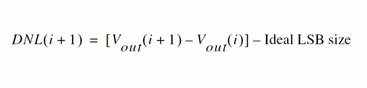

B
Calculator Functions
This chapter describes the functions in the function panel for the SKILL mode. The following function categories are available in the SKILL mode:
- Special Functions
- Modifier Functions
- Trigonometric Functions
- Math Functions
- RF Functions
- Spectre RF Functions
Basic Steps For Running Calculator Functions
You need to perform the following steps in Virtuoso Visualization and Analysis XL to run the Calculator functions:
- Open the results database in the Results Browser window. For information about how to open and access result databases in Results Browser, see Working with the Results Directory.
- Right-click the signal you want to use as an input to the function and choose Calculator. Alternatively, you can plot the signal in the graph window and then send the plotted signal from graph to Calculator.
- The expression for the selected signal is displayed in the Buffer. This signal expression can then be used as an input signal while running the functions. For some functions, you need to input more than one signals. In this case, you can use Stack to store the signals. For information about how to use Stack, see Stack.
- Now, open the Function Panel and select the signal you want to run. For more information about how to use the Function Panel, see Function Panel.
- If the function includes argument fields, a form appears in Function Panel where you can provide the argument values. By default, the default values are populated in the argument fields. If signal does not require arguments, it is directly applied to the signal expression in the Buffer.
- Click OK. The expression for the function is displayed in the Buffer.
- Set the output plotting mode from the Plotting Mode drop-down on the Selection toolbar.
-
Then, click the Evaluate Buffer icon
 .
.
If the result is a scalar value, it will be displayed in the Buffer. If the result is a waveform, it is plotted in the graph window in the specified plotted mode.
5 to represent logic 1 signal and a value 0 to represent logic 0 signal. These values are hardcoded because it is not feasible to find out an analog value corresponding to a digtial logic value.
The affected functions include:
clip, clipX, convolve, deriv, dft, dftbb, flip, frequency, gainMargin, iinteg, imag, integ, lshift, overshoot, phaseMargin, psd, psdbb, riseTime, root, settlingTime, slewRate, stddev, xmax, xmin, xval, ymax, and ymin.
compare, delay, intersect, dftbb, and so on.Performing Floating-Point Comparison
A floating-point comparison function is used in many Calculator functions to find whether two floating-point values are equal within a relative tolerance limit. These functions include clip, value, leafValue and Set Sweep Range form in Result Browser.
When performing floating-point comparison, the equality between two doubles is determined by the following rules:
-
If both the doubles are non-zero, the relative comparison is used to determine the equality.
abs(a-b)/min(a,b) < maxRelDiff
here,
maxRelDiffis set to10 * DBL_EPSILON(approx.2.22e-15)
DBL_EPSILON=2^-52, which is a predefined constant value. -
If one of the doubles is
0, the absolute comparison is used. In this case, the doubles are considered equal if the other double is less thanmaxRelDiff*maxRelDiff(approx.4.93e-30).
Using Unary Minus Operator
A unary minus operator takes precedence over the minus operator. The following expressions show how these operators are used in the SKILL code:
-
a - bis read as ((difference a b)) -
a -bis read as (a (minus b)) -
a - -bis read as ((difference a (minus b)))
For example, if you write two expressions, VT(net1) and -VT(net2), they are treated as two different elements in SKILL.
Using Division Operator in the Expression for a Calculator Function
If you use the division operator in the expression for a calculator function, the expression returns nil, if the following conditions are met:
-
The denominator contains an engineering suffix and the value of the denominator is less than 2G.
- The value of numerator is less than the denominator.
For example, the expression 1/100M returns 0 because the denominator (100M) contains the engineering suffix ‘M’ and the value of the denominator is less than 2G. Also, the value of numerator (1) is less than the value of the denominator (100M).
It is because of the integer division, that is, when you divide an integer by another integer, you get an integer as a result, not a floating-point number.
To get the desired result, you must change the expression to either 1.0/100M or 1/100.0M.
Special Functions
This section describes the following special functions available in the Virtuoso Visualization and Analysis XL Calculator:
- aaSP
- analog2Digital
- abs_jitter
- average
- bandwidth
- busTransition
- calcVal
- clip
- compare
- compression
- compressionVRI
- convolve
- cross
- d2a
- dBm
- delay
- delayMeasure
- deriv
- dft
- dftbb
- dnl
- dutyCycle
- evmQAM
- evmQpsk
- eyeDiagram
- eyeHeightAtXY
- eyeWidthAtXY
- eyeAperture
- fallTime
- firstVal
- flip
- fourEval
- freq
- freq_jitter
- frequency
- gainBwProd
- gainMargin
- getAsciiWave
- getData
- groupDelay
- harmonic
- harmonicFreq
- histogram2D
- i
- iinteg
- inl
- integ
- intersect
- ipn
- ipnVRI
- lastVal
- loadpull
- lshift
- normalQQ
- numConv
- overshoot
- pavg
- peak
- peakToPeak
- period_jitter
- phaseMargin
- phaseNoise
- PN
- pow
- prms
- psd
- psdbb
- pstddev
- pzbode
- pzfilter
- risetime
- rms
- rmsNoise
- root
- rshift
- sample
- settlingTime
- slewrate
- spectralPower
- spectrumMeas
- stddev
- tangent
- thd
- triggeredDelay
- unityGainFreq
- v
- value
- waveVsWave
- xmax
- xmin
- xval
- ymax
- ymin
aaSP
Plots the S-parameter waveform for a multi-port network. S-parameters describe the input-output relationship between two ports in a multi-port network. Generally, S-parameters vary with frequency.
This function includes the following arguments:
- Responding Port—The port number of the responding port.
- Incident Port—The port number of the incident port.
Example
The following example plots the s78 parameter waveform, which is the response at port 7 due to a signal at port 8.
Specify the following arguments:
The following expression is created in the Buffer:
When you evaluate this expression, the function returns the following S-parameter waveform, which displays the variation of amplitude versus frequency.
analog2Digital
Returns the digital form of an analog input waveform, which may be a scalar, list or family of waveforms or a string representation of expressions. The corresponding SKILL command name for this function is awvAnalog2Digital.
This function includes the following arguments:
- Waveform—Name of the analog signal.
-
Logic Threshold—Select the logic voltage threshold as
hiloorcentre. The default value ishilo. -
Voltage High/Low—When the Logic Threshold is set to
hilo, provide the high and low or voltage values. Any value higher than the Voltage High is the high state and any value lower than the Voltage Low is the low state. The default value of these fields arenil. If you do not specify these values, they are calculated internally using the formula below:
vHigh = (topLine - bottomLine)*0.6 + bottomline
vLow = (topLine - bottomLine)*0.4 + bottomline -
Center Voltage—When the Logic Threshold is set to
center, provide the centre voltage value. Any value higher than the centre voltage is the high state and any value lower than the centre voltage is the low state. If you do not specify this value, it is calculated internally usingvCenter=average(wave). -
Time to X—The value that determines logic X. The timeX value is used to decide the state X. This field is available only when the threshold type is
hilo. When threshold ishilo, the analog signal will be converted to logic X if:
Example 1
Consider the following input signal:
The analog2Digital function is applied on this input signal with the following arguments:
-
Signal—
v("clk" ?result "tran" ?resultsDir "./mixed/test/adc_8bit.raw") -
Logic Threshold—
hilo -
Voltage High/Low—
1.78and0.2 -
Centre Voltage—
nil -
Time to X—
1n
The corresponding expression created in the Buffer is as follows:
analog2Digital(v("clk" ?result "tran" ?resultsDir "./mixed/test/adc_8bit.raw") "hilo" ?vHigh 1.78 ?vLow 0.2 ?timeX 1n)
When you evaluate this expression and plot the results in the append mode, the given analog signal is converted into a digital signal as shown in the figure below.
Example 2
This example shows the output waveform generated when the Logic Threshold is hilo, but no voltage high and voltage low values are specified. The following expression is created in the Buffer:
analog2Digital(v("1" ?result "tran") "hilo" ?vHigh nil ?vLow nil ?timeX 1)
When you evaluate this expression, the following output waveform is generated.
Example 3
This example shows the output waveform generated when the Logic Threshold is center, but no center voltage value is specified. The following expression is created in the Buffer:
analog2Digital(v("1" ?result "tran") "centre" ?vCentre nil ?timeX 1)
When you evaluate this expression, the following output waveform is generated.
Example 4
This example shows how the logix X of the generated digital waveform changes when you change the Time to X value. Consider the following waveform from a transient analysis. Run the analog2Digital function with Voltage High/Low=250mV and 1.0308, and Time to X=1ns,1000ns and 50ns, respectively.
Digital waveforms that are generated when you run the analog2Digital function for the given values of Time to X are displayed in the figure above.
-
When Time to X=
1000ns, the signal is in high state only because this value is large. -
When Time to X=
1ns, the logix X of signal changes after1nswhen the signal crosses the given voltage high or voltage low values. -
When Time to X=
50ns, the logix X of signal changes after50ns
Related OCEAN Function
The equivalent OCEAN command for analog2Digital is:
analog2Digital(o_wave t_thresholdType[?vhin_vhi] [?vlon_vlo] [?vcn_vc] [?timeXn_timex] ) =>o_digWave/n_digval/ nil
For more information, see analog2Digital in OCEAN Reference.
abs_jitter
Returns a waveform that contains the absolute jitter values in the input waveform for the given threshold. The output waveform can be expressed in degrees, radians, or unit intervals (UI). The absolute jitter can be plotted as a function of cycle number, crossing time, or reference clock time.
The function is available only in the SKILL mode and includes the following fields:
- Waveform—Name of the waveform, expression, or family of waveforms. The expression displayed in the Buffer can be added to this field by selecting buffer.
-
Cross Type—Specifies whether the jitter value can be calculated on rising (
rising) or falling (falling) curves. Points at which the curves of the waveform intersect with the threshold. -
Threshold—Value at which the input waveform intersects to calculate the absolute jitter.
- X-Unit—Unit defined for X-axis of the output waveform. Specify whether you want to output the absolute jitter against time or cycle. Cycle numbers refer to the nth occurrence where the waveform crosses the given threshold. When you select time (s), the absolute jitter is calculated against the reference clock time corresponding to the specified Tnom value.
- Y-Unit—Unit defined for Y-axis of the output waveform. Specify whether you want to calculate the phase in seconds (s), radians (rad), or unit intervals (UI).
-
Tnom—Nominal time period of the input waveform. The waveform is expected to be a periodic waveform that contains noise. If you do not enter the Tnom value, the
abs_jitterfunction autocalculates the approximate time period of the input waveform by using the following equation:
(lastCrossing-firstCrossing)/(numCrossings-1)
where, -
Zero Ref—Defines the timing of the first edge of the ideal reference clock used for absolute jitter calculation. The reference clock period is equal to
Tnom, the k-th edge is at timeZeroRef + k * Tnom. When this argument isnilor not specified, its default value is equal to the time of the first crossing of the input waveform so that the first value of the jitter is zero.
For the driven circuit, Tnom and Zero Ref should be consistent with periodic input source. For autonomous circuit, average period and average jitter can be used as Tnom and Zero Ref.
Additional Information
The absolute jitter can be defined as follows:
For a given waveform with the following properties:
-
Oscillating with expected nominal period,
T, -
Between minimum and maximum values,

- Rising and falling through a given threshold,
- In time intervals,
The absolute jitter for the waveform can be defined as:
The period jitter of the waveform can be defined as:
The jitter can be expressed in units of time (seconds) or in units of phase (radians or unit intervals). These values can be converted by using the following formula:
Example
Consider the following input waveform:
The abs_jitter function is applied to this waveform with the following arguments:
-
Waveform—
v("1" ?result "tran") -
Cross Type—
rising -
Threshold—
1.5 -
X-unit—
s -
Y-unit—
rad -
Tnom—
nil -
Zero Ref—
nil
The expression created in the Buffer is as follows:
abs_jitter(v("1" ?result "tran" ?resultsDir “nand2_ring_tnoise.raw”) "rising" 1.5)
When you evaluate this expression, the following output waveform showing the absolute jitter values is displayed in the new graph window:
Related OCEAN Function
The equivalent OCEAN command for abs_jitter is:
abs_jitter(o_waveform t_crossType n_threshold ?xUnit t_xUnit ?yUnit t_yUnit ?Tnom n_Tnom) => o_waveform/nil
For more information, see
average
Computes the average of a waveform over its entire range. Average is defined as the integral of the expression f(x) over the range of x, divided by the range of x.
where, from is the initial value for x and to is the final value of x.
Additional Information
When you use the average function to create expressions that are to be measured across corners in ADE XL, the function includes an additional argument, overall. The expression created is as follows:
average(v(“out” ?results “tran”) ?overall t)
When the overall argument is set to t, it performs the calculation on the results of corner simulations for each design point that are treated as discrete values for evaluation. When set to nil, it creates a waveform from the data points and then calculates the average value of the waveform. If the input is a scalar and the overall argument is set to t, the ymax function returns the input scalar value.
Example
This example shows the average value calculated when you apply the average function on the following input signal:
When you apply the average function on this signal, the following expression is created in the Buffer:
average(i("V1:p" ?result "tran" ?resultsDir "./ampsim.raw"))
Now, when you evaluate this expression, the following output is displayed in the Buffer:
Related OCEAN Function
The equivalent OCEAN function for average is:
average( o_waveform ) => n_average/o_waveformAverage/nil
For more information, see
bandwidth
Measures the bandwidth of a low/high/band-pass freuqnecy-domain signal. Bandwidth is the frequency where the gain drops by 3dB (by default) as measured by the dB20 function.
This function includes the following fields:
-
Signal —Name of the signal. In SKILL mode, Virtuoso Visualization and Analysis XL wraps the signal with the
mag,dB, orlogfunction. - Db—Decibels down from the peak, which means how far below the peak value you want to see data. In SKILL mode, Db is a number equal to or greater than zero.
-
Type—Response type.
-
When
low, computes the low-pass bandwidth by determining the smallest frequency at which the magnitude of the input waveform drops Db decibels below the DC gain. DC gain is obtained by zero-order extrapolation from the lowest or highest computed frequency, if necessary. An error occurs if the magnitude of the input waveform does not drop Db decibels below the DC gain. -
When
high, computes the high-pass bandwidth by determining the largest frequency at which the magnitude of the input waveform drops db decibels below the gain at the highest frequency in the response waveform. An error occurs if the magnitude of the input waveform does not drop n decibels below the gain at high frequency. -
When
band, computes the band-pass bandwidth by: -
Determining the lowest frequency (f
max) at which the magnitude of the input waveform is maximized -
Determining the highest frequency less than f
maxat which the input waveform magnitude drops Db decibels below the maximum -
Determining the lowest frequency greater than f
maxat which the input waveform magnitude drops Db decibels below the maximum -
Subtracting the value returned by - step b from the value returned by step c. The value returned by step b or step c must exist.
-
When
Example
This example calculates the bandwidth of the following AC voltage signal, v("out" ?result "ac")
The following arguments are specified in this example:
The following expression is created in the Buffer:
bandwidth(mag(v("out" ?result "ac" ?resultsDir "./ampTest.raw")) 3 "low" )
Now, when you evaluate this expression, the following output value is displayed in the Buffer as result:
Related OCEAN Function
The equivalent OCEAN function for bandwidth is:
bandwidth( o_waveform n_db t_type ) => n_value/o_waveform/nil
For more information about this OCEAN function, see
busTransition
Returns the time when a bus value is changed from one specified value to another specified value.
This function includes the following arguments:
- Signal—Name of the bus signal.
- From Value—The starting value from which the bus change is to be calculated. The prefixes are used to define the formats, such as 0b for binary, 0 for octal, 0x for hexadecimal. No prefix indicates decimal format.
-
To Value—The target value to which the bus is changed. The prefixes are used to define the formats, such as
0bfor binary,0for octal,0xfor hexadecimal. No prefix indicates decimal format. -
Number of occurrences—Select
singleto calculate one point or selectmultipleto calculate until the end of X range. Specify the Nth Change argument if you selectsingle. Select the independent variable against which you want to plot the bus changes from the Plot/print vs drop-down list if you selectmultiple. -
Nth Change—When n > 0, function returns the nth X value when the bus is changed, when n<0, returns the last nth value. When n=0 (default value), returns the change of bus for all X values.
-
Plot/print vs—Determines the X units of the generated waveform. Valid values:
timeandcycle. Default value:time
Example
The example below shows the output values and waveforms generated when you apply busTransition function on the following input bus waveform, mux_tb.din[7:0]:
Now, specify the following argument values for this function:
-
Signal—
getData("mux_tb.din[7:0]" ?result "sst2LargeBus") -
From Value—
0x10 -
To Value—
0x11 -
Nth Change—
1 -
Number of occurrences—
single -
Plot/Print vs.—
time
After you click OK to apply the busTransition function, the following expression is created in the Buffer:
busTransition(getData("mux_tb.din[7:0]" ?result "sst2LargeBus") "0x10" "0x11" 1))
Now, when you click the evaluate button to run this function, a scalar value is displayed in the buffer, as shown in the figure below:
If you specify the argument value of Number of occurrence as multiple and run the busTransition function, an output waveform is displayed in the graph window, as shown in the figure below.
calcVal
Stores the output value from one test and passes it on to another test.
This function includes the following arguments:
- Name of output—The name of the output to be used.
- Name of Test—The name of the test that contains the output.
-
Name of History—The name of the history from which the results are to be retrieved.
- Name of Corner—The name of the corner.
-
Results—The name of the analysis from which the
signaltype output is to be retrieved. - Use First Sweep Point—Specifies that when sweep values are used, the result of only the first swept point is to be used for calculation.
- Match Parameters—Specifies whether to look for points that have matched variables and parameters in the current run and the source run. The source run can be of any other test in the current history, or the same or another test in another history.
-
Default Value—The value to be returned when
calcValevaluation fails for any reason.
Example
Consider the following example:
There are two tests, myTest1 and myTest2 in the Output Setup. myTest1 has an output, settlingTime of type expression.
myTest2 has an output expression calcValSettlingTime defined using the calcVal expression, which stores the value of the settlingTime output calculated from the myTest1 test.
When you run the simulation, the calcValSettlingTime expression returns the same value that settlingTime returns, which is 16.74n, as shown in the following figure.
Now, calculate value of the settlingTime output from the myTest1 test using the calcVal Calculator function. Specify the arguments, as shown in the following figure.
The following expression is created in the Buffer:
calcVal("settlingTime" "myTest1" )
When you evaluate this expression, the function returns the same value, 16.74E-9.
calcVal function, see calcVal in the Virtuoso Analog Design Environment XL SKILL Reference.clip
Returns the portion of a signal between two points along the X-axis.You can use the clip function to restrict the range of action of other special functions of the calculator such as integ, rms, and frequency.
- Signal—Displays the name of the signal.
- From—Starting point on the X-axis from where the clipping is to be started.
- To—Ending point on the X-axis where the clipping is to be ended.
Example 1
The following diagram illustrates how the result with the values clip (sig=V(sinewave), from=10n, to=50n ) is determined.
Example 2
This example shows the clipped waveform generated when you apply clip function on the following input signal:
The following arguments are specified in this example:
The following expression is created in the Buffer:
clip(v("out" ?result "tran" ?resultsDir "./ampTest.raw") 1.0u 2.5u )
Now, when you evaluate this expression, the following output is displayed in the graph window:
Related OCEAN Function
The equivalent OCEAN function for clip is:
clip( o_waveform n_from n_to ) => o_waveform/nil
For more information about this OCEAN function, see
compare
Compares the two given waveforms based on the specified values for absolute and relative tolerances. This function compares only the sections of the two waveforms where the X or independent axes overlap.
- Signal1—Name of the first signal.
- Signal2—Name of the second signal.
- Absolute Tolerance—Specifies the absolute tolerance.
-
Relative Tolerance—Specifies the relative tolerance.
The following situations are valid:- If neither relative nor absolute tolerance is specified, the function returns the difference of the two waveforms (Signal1 - Signal2).
- If only the absolute tolerance is specified, the function returns the difference of the two waveforms only when the absolute value of the difference is greater than the absolute tolerance (|Signal1 - Signal2| > f_abstol); otherwise it returns a zero waveform.
- If only the relative tolerance is specified, the function returns the difference of the two waveforms only when the absolute value of the difference is greater than the product of the relative tolerance and the larger of the absolute values of the two waveforms (|Signal1 - Signal2| > f_reltol * max(|Signal1|, |Signal2|)); otherwise it returns a zero waveform.
- If both relative and absolute tolerances are specified, the function returns the difference of the two waveforms only when the absolute value of the difference is greater than the sum of the separately calculated tolerance components (|Signal1 - Signal2| > f_abstol + f_reltol * max(|Signal1|, |Signal2|)); otherwise it returns a zero waveform.
Example
This example shows the output waveform generated when you apply the compare function on the following input signals:
The following arguments are specified in this example:
-
Signal1—
v("net14" ?result "tran") -
Signal2—
v("net15" ?result "tran") -
Absolute Tolerance—
0.0 -
Relative Tolerance—
0.0
The following expression is created in the Buffer:
compare(v("net14" ?result "tran" ?resultsDir "./aExamples.raw") v("net15" ?result "tran" ?resultsDir "./aExamples.raw") 0.0 0.0 )
Now, when you evaluate this expression, the following output waveform is displayed in the graph window:
Related OCEAN Function
The equivalent OCEAN function for compare is:
compare( o_waveform1 o_waveform1 [f_abstol [f_reltol]] ) => o_comparisonWaveform/nil
For more information about this OCEAN function, see
compression
Returns the Nth compression point value of a waveform at the specified extrapolation point. This function is available only in the SKILL mode.
The compression function uses the power waveform to extrapolate a line of constant slope (dB/dB) according to a specified input or output power level. This line represents constant small-signal power gain (ideal gain). The function finds the point where the power waveform drops n dB from the constant slope line and returns either the X coordinate (input referred) value or the Y coordinate (output referred) value.
- Signal—Name of the signal.
- Harm Num—Harmonic number.
- Ext. Point (X)—Extrapolation point of the waveform. The extrapolation point is the X-axis value.
- Compression dB—Compression coefficient (N).
Example
This example shows the compression value generated when you apply the compression function on the following input waveform:
The following arguments are specified in this example:
The following expression is created in the Buffer:
compression(dB20(harmonic(mag(v("/RFOUT" ?result "envlp_fd" ?resultsDir "./viva/rfworkshop/simulation/EF_example_envlp/spectre/schematic/psf"“)), 1)), ?x -30, ?compress 1)
Now, when you evaluate this expression, the following output value is displayed in the Buffer:
Related OCEAN Function
The equivalent OCEAN function for compression is:
compression( o_waveform [ ?x f_x ] [ ?y f_y ] [ ?compression f_compression ] [ ?io s_measure ] ) => f_compPoint/nil
For more information about this OCEAN function, see
compressionVRI
Performs an Nth compression point measurement on a power waveform. This function is available only in the SKILL mode.
You can use this function to simplify the declaration of a compression measurement.
This function extracts the specified harmonic from the input waveform(s), and uses dBm(spectralPower((i or v/r),v)) to calculate a power waveform. The function passes this power curve and the remaining arguments to the compression function to complete the measurement.
The compression function uses the power waveform to extrapolate a line of constant slope (dB/dB) according to a specified input or output power level. This line represents constant small-signal power gain (ideal gain). The function finds the point where the power waveform drops n dB from the constant slope line and returns either the X coordinate (input referred) value or the Y coordinate (output referred) value.
- Signal—Name of the signal.
- Harm Num—Harmonic index of the waveform.
- Extrapolation Point—Extrapolation point for the waveform. The default value is the minimum x value of the input voltage waveform. The extrapolation point is the coordinate value in dBm that indicates the point on the output power waveform where the constant-slope power line begins. This point should be in the linear region of operation.
-
Load Current—Current into the output port.
- Load Resistance—Resistance value. The default value is 50.
- Compression dB—Specifies the delta (in dB) between the power waveform and the ideal gain line that marks the compression point. The default value is 1.
- Measurement Type—Select the Input Referred Compression option to get the X-coordinate of the intercept. Select Output Referred Compression to get the Y-coordinate of the intercept.
-
Format—Default value:
power.
Example
This example shows the compression value generated when you apply the compressionVRI function on the following input waveform:
The following arguments are specified in this example:
-
Signal—
v(“/RFout”) -
Harm Num.—
1 -
Extrapolation Point—
–30 -
Load Resistance—
50 -
Compression dB—
1 -
Measurement Type—
Input Referred Comparison
The following expression is created in the Buffer:
compressionVRI(mag(v("/RFOUT" ?result "envlp_fd" ?resultsDir "./viva/rfworkshop/simulation/EF_example_envlp/spectre/schematic/psf")) 1 ?gcomp 1 ?epoint -30 ?rport 50 )
Now, when you evaluate this expression, the following output value is displayed in the Buffer:
Related OCEAN Function
The equivalent OCEAN function for compressionVRI is:
compressionVRI( o_vport x_harm [?iport o_iport] [?rport f_rport] [?epoint f_epoint] [?gcomp f_gcomp] [?measure s_measure] ) => o_waveform/n_number/nil
For more information about this OCEAN function, see
convolve
Returns a waveform consisting of the time domain convolution of two signals.
This function includes the following arguments in the SKILL mode:
- Signal1—Name of the first signal.
- Signal2—Name of the second signal.
- From—Starting point (X-axis value) of the integration range.
- To—End point (X-axis value) of the integration range.
- type—Specifies whether is the interpolation is linear or log.
- By—Specifies the step size.
Additional Information
Covolution is defined by the following equation:
Example
This example calculates the time domain convolution of the following two transient voltages, v(“/1”) and v(“/16”)and displays the output waveform generated:
The following arguments are specified in this example:
The following expression is created in the Buffer:
convolve(v("1" ?result "tran") v("16" ?result "tran") 30n 33n "linear" 100p )
Now, when you evaluate this expression, the following output waveform showing the time domain convolution is displayed in the graph window:
Related OCEAN Function
The equivalent OCEAN function for convolve is:
convolve( o_waveform1 o_waveform2 n_from n_to t_type n_by ) => o_waveform/n_number/nil
For more information about this OCEAN function, see
cross
Returns the X value where a signal crosses the threshold Y value.
This function includes the following arguments:
- Signal—Name of the signal.
- Threshold Value—Threshold to be crossed.
-
Edge Number—Occurrence of the crossing. The first crossing is Edge Number=
1, the second crossing is Edge Number=2, and so on. The value of Edge Number can be negative numbers: Edge Number=-1for the previous occurrence, Edge Number= for the occurrence before the previous occurrence, and so on. -
Edge Type—Direction of the crossing event.
risingdirects the function to look for crossings where the Y value is increasing,fallingfor crossings where the Y value is decreasing, andeitherfor crossings in either direction.
When the threshold is maximum or minimum, both the rising and falling edge types can be used to calulate cross.When you are using a parametric sweep, ensure that the sweep values are specified in increasing order to calculate the cross for falling edge type. Otherwise, the function evaluates to nil and following warning message appears:WARNING: The cross function cannot be applied on this expression due to one of the following reasons:
- Threshold value is invalid
- Edge Type field is set to 'falling', but the X-axis values of input waveform are specified in decreasing order
Specify the edge type as 'rising' or 'either', and ensure that the threshold value is valid.
-
Number of occurrences—Select
singleto calculate one point or selectmultipleto calculate until the end of X range. - Plot/print vs.—Specifies whether X-axis of the output waveform is time (or another X-axis parameter for non-transient data) or cycle.
- Tolerance—Sets the tolerance value to be used to detect the threshold crossings. You can specify a tolerance value in cases where the noise is large. In such cases, the waveform can cross a given threshold multiple times within one transition. These double crossings are counted as two crossings and generate huge spikes in the time domain jitter waveform.
Example 1
The following diagram illustrates how the result is determined for the values signal=V(out1), Threshold Value=1, Edge Number=1, and Edge Type=falling

Example 2
This example shows the output waveform generated when you apply the cross function on the following input waveform:
The following arguments are specified in this example:
-
Signal—
v(“1” ?result “tran”) -
Threshold—
2.5 -
Edge Number—
1 -
Edge Type—
either -
No of occurrences—
multiple -
Plot/print vs.—
time -
Tolerance—
nil
The following expression is created in the Buffer:
cross(v("1" ?result "tran") 2.5 1 "either" t "time" )
Now, when you evaluate this expression, the following output waveform is displayed in the graph window:
Related OCEAN Function
The equivalent OCEAN command for cross is:
cross( o_waveform n_crossVal x_n s_crossType [g_multiple [s_Xname]] ) => o_waveform/g_value/nil
For more information about the OCEAN function, see
d2a
Returns the analog output from a given digital waveform.
This function includes the following arguments:
- Signal—Name of the waveform, expression, or family of waveforms. The expression displayed in the Buffer can be added to this field by selecting buffer.
- Analog High Voltage—Highest voltage value when the digital signal is in the high-state (1)
- Analog Low Voltage—Lowest analog value when the digital signal is in the low-state (0)
-
Analog X Voltage—Specify the corresponding analog value to which you want to convert the state X of the digital waveform. This value can be a number or a string expression of
vhiandvlo, such as(vhi+vlo)/2. -
Busses output as—Set this field to
Analog VoltageorAnalog bitsif the given digital waveform is a bus. -
Transition—Set the transition to
Piecewise LinearorZero-Terminatedif the given digital waveform is a bus.
Example
This example shows the conversion of digital waveform (logic signal) to an analog waveform. The input signal is as shown in the figure below:
The following arguments are specified in this example:
-
Signal—
getData(top.b0" ?result "waves.shm”) -
Analog High Voltage—
1.8 -
Analog Low Voltage—
0 -
Analog X Voltage—
(vhi+vlo)/2 -
Busses output as—
Analog Voltage -
Transition—
Piecewise-Linear
The following expression is created in the Buffer:
awvDigital2Analog(getData("top.b0" ?result "waves.shm") 1.8 0 "(vhi+vlo)/2" ?mode "busvalue" ?outWaveType "pwl")
Now, when you evaluate this expression, the following output waveform, which is an analog signal, is displayed in the graph window.
Related SKILL Function
The equivalent SKILL command for d2a is:
awvDigital2Analog( o_waveform n_vhi n_vlo s_VX @key s_mode s_outWaveType s_vprevSTART ) => o_waveform | nil
For more information about this SKILL function, see
dBm
Returns 10 times the log10 of the specified waveform object plus 30. This function converts a signal, in watts, to dbm, where dbm=10*log(x)+30.
Example
This example shows the output waveform generated when you apply the dBm function on the following input waveforms:
The above figure shows the current waveform, /v1/PLUS and voltage waveform, /out. If you want to calculate the dBm power of these signals, firstly you will have to multiply the terminal voltage and current signals.
mag(v("/out" ?result "ac"))*mag(i("/v1/PLUS" ?result "ac" ?resultsDir ./viva/ADE_ViVA/ADEviva/simulation/amp_sim/spectre/schematic/psf))
When you apply the dBm function, the following expression is created in the Buffer:
dBm(mag(v("/out" ?result "ac"))*mag(i("/v1/PLUS" ?result "ac" ?resultsDir ./viva/ADE_ViVA/ADEviva/simulation/amp_sim/spectre/schematic/psf)))
Now, when you evaluate this expression, the following output waveform is displayed in the graph window:
Related OCEAN Function
The equivalent OCEAN function for dBm is:
dbm( {o_waveform | n_number} )
=> o_waveform/n_number/nil
For more information about the OCEAN function, see
delay
Computes the delay between two points or multiple sets of points in a waveform using the cross function. This function is available only in the SKILL mode.
This function includes the following arguments:
- Signal1—Name of the first signal.
- Signal2—Name of the second signal.
- Threshold Value 1—First threshold to be crossed.
- Edge Number 1—Number that specifies which crossing is to be the trigger event. For example, if Edge Number1=2, the trigger event is the second edge of the first waveform with the specified type that crosses Threshold Value 1.
-
Edge Type 1—Direction of the first crossing event.
risingdirects the function to look for crossings where the Y value is increasing,fallingfor crossings where the Y value is decreasing, andeitherfor crossings in either direction. - Periodicity 1—Periodic interval for the first waveform. See Example 2 for details.
- Tolerance1—Tolerance value to detect the threshold crossings for the first signal.
- Threshold Value 2—Second threshold to be crossed.
- Edge Number 2—Number that specifies which crossing is to be the trigger event. For example, if Edge Number2=2, the trigger event is the second edge of the second waveform with the specified type that crosses Threshold Value 2.
-
Edge Type 2—Direction of the second crossing event.
risingdirects the function to look for crossings where the Y value is increasing,fallingfor crossings where the Y value is decreasing, andeitherfor crossings in either direction. - Periodicity 2—Periodic interval for the second waveform. See Example 2 for details.
- Tolerance2—Tolerance value to detect the threshold crossings for the second signal.
-
Number of occurrences—Specifies whether you want to retrieve only one occurrence of a delay event for the given waveform (single), or all occurrences of overshoot for the given waveform which you can later plot or print (multiple).
Single–If Start2 is specified, find the cross point of Signal1 at edge number1. Use this as the trigger point for target Signal2 and ignore Signal2 before Signal1 trigger event to find its cross point. Calculate the delay between the two cross points. If Start2 is not specified, find the cross point at edge number1 of Signal1 and cross point of edge number2 of Signal2 with target at time t=0 and calculate the delay between two cross points.Multiple–Find all the cross points of Signal1. If Start2 is specified, find cross points of target(Signal2) staring at trigger event (first cross point of Signal1) and ignore Signal2 before Signal1 trigger event. If Start2 is not specified, find cross points of target(Start2) at time at t=0. Calculate the delay between each of the cross points falling at interval of period1 and period2 of Signal1 and Signal2 respectively. - Plot/print vs.—Specifies whether you want to retrieve delay data against trigger time, target time (or another X-axis parameter for non-transient data) or cycle. Cycle numbers refer to the n’th occurrence of the delay event in the input waveform. The value in this field is ignored when you specify Number of Occurences as single.
- Start 1—Time that specifies when the delay measurement is to be started.
- Start 2—Time to start observing the target event.
- Start 2 relative to—Specifies whether the Start 2 is relative to trigger or time.
-
Stop—Time to stop observing the target event.
Example 1
The delay algorithm for multiple occurrences returns the difference between the X points for the specified edges on the respective waveforms (with the specified periodicity). For example: if the edge number specified for both the waveforms is 1 and periodicity is 2, then it will compute the difference between the 1,3,5,7 ... edges for both the waveforms.
Example 2
This examples shows the output waveform generated when you apply the delay function on the following input waveform:
The arguments specified in this example are:
-
Signal1—
v(“1” ?result “tran”) -
Signal2—
v(“16” ?result “tran”) -
Threshold Value 1—
2.5 -
Threshold Value 2—
2.5 -
Edge Number 1—
1 -
Edge Number 2—
1 -
Edge Type 1—
rising -
Edge Type 2—
rising -
Periodicity 1—
1 -
Periodicity 2—
1 -
Tolerance1—
nil -
Tolerance2—
nil -
Number of occurrences—
multiple -
Plot/print vs.—
trigger -
Start 1—
0.0 -
Start 2—
nil -
Start 2 relative to—
trigger -
Stop—
nil
The following expression is created in the Buffer:
delay(?wf1 v("16" ?result "tran"), ?value1 2.5, ?edge1 "rising", ?nth1 1, ?td1 0.0, ?wf2 v("1" ?result "tran"), ?value2 2.5, ?edge2 "rising", ?nth2 1, ?td2 nil , ?stop nil, ?period1 1 ?period2 1 ?multiple t ?xName "trigger" )
Now, when you evaluate this expression, the following output waveform showing the delay in two signals is displayed in the graph window:

Related OCEAN Function
The equivalent OCEAN command for delay is:
delay( [?wf1o_waveform1] [?value1n_value1] [?edge1s_edge1] [?nth1x_nth1] [?td1n_td1] [?wf2o_waveform2] [?value2n_value2] [?edge2s_edge2] [?nth2x_nth2[ ?td2n_td2] [ ?td2r0n_td2r0]} [?stopn_stop] [?histoDisplayg_histoDisplay] [?noOfHistoBinsx_noOfHistoBins] [?period1period1] [?period2period2] [?multiplemultiple] [?xNamexName]@restargs ) =>o_waveform/n_value/ nil
For more information about this OCEAN function, see
delayMeasure
Calculates the delay between a trigger event and a target event.
This function includes the following arguments:
- Signal1—Name of the first signal.
- Signal2—Name of the second signal.
-
Edge Type 1—Direction of the first crossing event.
risingdirects the function to look for crossings where the Y value is increasing,fallingfor crossings where the Y value is decreasing, andeitherfor crossings in either direction. It is an optional argument. - Edge Number 1—Number that specifies which crossing is to be the trigger event. For example, if Edge Number1=2, the trigger event is the second edge of the first waveform with the specified type that crosses Threshold Value 1. It is an optional argument.
-
Threshold Value 1—First threshold to be crossed. It is an optional argument. If the threshold value is nil or blank, threshold is calculated internally using
average(wave1). -
Edge Type 2—Direction of the second crossing event.
risingdirects the function to look for crossings where the Y value is increasing,fallingfor crossings where the Y value is decreasing, andeitherfor crossings in either direction. It is an optional argument. - Edge Number 2—Number that specifies which crossing is to be the trigger event. For example, if Edge Number2=2, the trigger event is the second edge of the second waveform with the specified type that crosses Threshold Value 2. It is an optional argument.
-
Threshold Value 2—Second threshold to be crossed. It is an optional argument. If the threshold value is nil or blank, threshold is calculated internally using
average(wave2).
delayMeasure function outputs the same scalar value as that of the delay function when applied for a single occurrence.Example
Consider the following example in which the delayMeasure function is applied on two transient waveforms shown in the figure below:
Specify only the required arguments:
-
Signal1—
v(“1” ?result “tran” ?resultsDir “nand2_ring.raw”) -
Signal2—
v(“16” ?result “tran” ?resultsDir “nand2_ring.raw”)
The following expression is created in the Buffer:
delayMeasure(v("1" ?result "tran") v("16" ?result "tran") )
Now, when you evaluate this expression, the following output measuring the delay in two signals is displayed in the Buffer:
Example 2
In this example, specify the following argument values:
-
Signal1—
v(“1” ?result “tran” ?resultsDir “nand2_ring.raw”) -
Signal2—
v(“16” ?result “tran” ?resultsDir “nand2_ring.raw”) -
Edge Type 1—
rising -
Edge Number 1—
2 -
Threshold Value 1—
2.5 -
Edge Type 2—
rising -
Edge Number 2—
2 -
Threshold Value 2—
2.5
The following expression is created in the Buffer:
delayMeasure(v("1" ?result "tran") v("16" ?result "tran") ?nth1 2 ?value1 2.5 ?nth2 2 ?value2 2.5 )
Now, when you evaluate this expression, the following output measuring the delay in two signals is displayed in the Buffer:
Related OCEAN Function
The equivalent OCEAN command for delayMeasure is:
delayMeasure(o_waveform1 o_waveform2[?edge1s_edge1] [?nth1x_nth1] [?value1n_value1] [?edge2s_edge2] [?nth2x_nth2[?value2n_value2] =>n_value/ nil
For detailed information, see
deriv
Returns the derivative of a signal with respect to the X-axis.
Note:Additional Information
The following three methods can be used to calculate the finite difference:
-
Backward differencing,
[f(x)-f(x-h)]/h at X -
Forward differencing,
[f(x+h)-f(x)]/h at X -
Centered differencing,
[f(x+h)-f(x-h)]/2h at X
The deriv function uses the backward differencing method. For better understanding, consider the below example in which you have the following points:
When you sweep from 0 to 100, the derivative is calculated as:
(30C, [1.012-1.002]/[30-28]) = (30C, 0.005V)
When you sweep from 100 to 0, the derivative is calculated as:
(30C, [1.012-1.03]/[30-32]) = (30C, 0.009V)
Example
This example shows the output waveform generated when you apply the deriv function on the following input waveform, (v("out" ?result "tran-tran"):
When you apply the deriv function on this waveform, the following expression is created in the Buffer:
deriv(v("out" ?result "tran-tran")
Now, when you evaluate this expression, the following output waveform showing the derivative is displayed in the graph window.
Related OCEAN Function
The equivalent OCEAN command for deriv is:
deriv( o_waveform ) => o_waveform/nil
For more information about this OCEAN function, see
dft
Computes the discrete Fourier transform of a signal. This function is available only in the SKILL mode.
The tool which converts a temporal (time domain) description of a signal (real or complex) into one in terms of its frequency components is called the Fourier Transform. dft (Discrete Fourier Transform) is the discrete formulation of the Fourier Transform, which takes such regularly spaced data values (samples in time domain), and returns the value of the Fourier Transform for a set of values in frequency domain which are equally spaced. Most of the time, however, we work on real-valued signals only.
Consider a complex series (signal) w(k) with N samples of the form:
w(0), w(1), w(2), ..., w(k), ..., w(N-1)
Further, assume that the series outside the range 0, N-1 is extended N-periodic, that is, w(k)=w(k+N) for all k. The dft of this series will be denoted W(n), will also have N samples and will be defined as:
-
The first sample
W(0)of the transformed series is the DC component, more commonly known as the average of the input series. - The dft of a real series results in a symmetric series about the Nyquist frequency (described below).
- The highest positive (or negative) frequency sample is called the Nyquist frequency. This is the highest frequency component that should exist in the input series for the DFT to receive 'unpredictable' results. More specifically, if there are no frequencies above Nyquist frequency, the original signal can be reconstructed from the samples. The Nyquist Theorem (or Shannon's Sampling Theorem) specifies this – that for a band limited signal, you must sample at a frequency over twice the maximum frequency of the signal to reconstruct it from the samples.
While the dft transform above can be applied to any complex valued series, in practice for large series it can take considerable time to compute, the time taken being proportional to the square of the number of points (samples) in the series. A much faster algorithm has been developed by Cooley and Tukey called the FFT (Fast Fourier Transform). The only requirement of the most popular implementation of this algorithm (Radix-2 Cooley-Tukey) is that the number of points in the series be a power of 2 i.e. N=2n.
Given N input points, the fft returns N frequency components, of which the first (N/2 +1) are valid. (The other components are mirror images and are considered invalid since the frequencies they represent do not satisfy the Nyquist Theorem above.) They start with the DC component, and are spaced apart by a frequency of (1/(n deltaT)). The magnitude of the complex number returned is the frequency's relative strength.
The dft function computes the discrete Fourier Transform of the buffer by fft algorithm where deltaT=(t2-t1)/N. The waveform is sampled at the following N timepoints:
t1, t1 + deltaT, t1 + 2 * deltaT, , t1 + (N - 1) * deltaT
The output of dft() is a frequency waveform, W(f), which has (N/2+1) complex values: the dc term, the fundamental, and (N/2-1) harmonics.
(t1+(N - 1)*deltaT), is (t2-deltaT) rather than t2. The dft function assumes that w(t1) equals w(t2). This function includes the following arguments:
- Signal—Name of the signal.
- From—Starting point of the range over which you want to compute the transform.
- To—Ending point of the range over which you want to compute the transform. Be sure to cover at least one complete period of your slowest frequency.
- Number of Samples—Number of samples you want to take in expanding the Fourier transform. Sample at a rate that is at least twice your highest frequency component (the Nyquist rate). Pick a sampling rate high enough that closely spaced frequency components can be resolved.
-
Window Type—Window you want to use.
Valid values:Blackman,BlackmanHarris,Cosine2,Cosine4,ExtCosBell,HalfCycleSine,HalfCycleSine3,HalfCycleSine6,Hanning,Hamming,Kaiser,Nuttall,Parzen,Rectangular, andTriangular. Default value:Rectangular. - Smoothing Factor—Smoothing factor applicable to the Kaiser window only. The Smoothing Factor field accepts values from 0 to 15. The value 0 implies no smoothing and is equivalent to a rectangular window.
-
Coherent Gain—Scaling parameter. A non-zero value scales the power spectral density by 1/(f_cohGain). Valid values: 0 <= f_cohGain <= 1. You can use
1if you do not want the scaling parameter to be used. Default value:1.
The default coherent gain is the gain of the windowing function. If you want to specify your own coherent gain value, you can choose one of the following option in the Coherent gain drop-down list and then specify the value in the Coherent gain factor field:-
none—The window function is applied to the input and the DFT is calculated. No scaling is performed on the DFT output. -
default—The DFT output is divided by the gain of the windowing function. -
magnitude—The scaling factor is the value provided in the Coherent gain factor field. -
dB20—The DFT output is divided by the value provided in the Coherent gain factor field. The Coherent gain factor is specified in the dB20 units. -
dB10—The DFT output is divided by the value provided in the Coherent gain factor field. The Coherent gain factor is specified in the dB10 units.
-
- Coherent gain factor—When you do a dft, the applied Window Type (aside from the rectangular type) changes the signal’s amplitude. Applying a coherent gain factor is a way to get consistent results regardless of the window type.
- ADC Span—Specifies the peak saturation level of the FFT waveform. When specified the magnitude of the input waveform is divided by adc span value before computing FFT. This is full-scale span ignoring any DC offsets. Valid values : Any floating point number Default Value : 1.0
When you run the transient analysis, keep the maximum time step small enough to represent the highest frequency component accurately. The maximum time step should be smaller than the sampling period that you use for the dft of the time domain waveform. The samples in the dft will either find a data point (calculated by the simulator) or an interpolated point between two data points.
Choosing a maximum timestep during transient simulation that is smaller than the dft sampling period ensures that sampling maintains a resolution at least equal to that of the transient time-domain waveform.
The start and stop times should not coincide with the boundaries of the time-domain waveform. The boundary solutions might be imprecise and generate incorrect results if used in other calculations.
One of the uses of fast Fourier Transform windowing is to reduce discontinuities at window edges caused by having a non integral number of periods of a signal in a window. This removes the abrupt edges, making them fall off smoothly to zero, and can improve the validity of the fft components obtained. You can also use fft windowing to 'dig out' the details of signal components that are close Gin frequency or that consist of both large and small amplitudes.
The DFT function interpolates the From and To points in the following three cases:
- The specified number of samples in the DFT function is higher than the number of raw data points.
- The raw data points are non-uniform.
-
The From and To points are not aligned with the raw data points.
A warning message also appears to inform about the interpolation.The interpolation warning message is not displayed when the time distance between a sample point and its closest raw data point is less than0.01*step, wherestepis the average step size of the data points in the range [from,to]step = (to-from) / number of raw data points in [from,to]
The DFT function assumes thatw(from)equals tow(to). A warning message appears whenw(from)is not equal tow(to)in the following situation:
window function is Rectangular or not specified, and
|w(from)-w(to)|>1e-3*range(w), whererange(w)ismax(w)- min(w)in[from,to]
Example
This example shows the DFT output generated when you apply the dft function on the following input signal:
The following arguments are specified in this example:
-
Signal—
v("vin" ?result "tran") -
From—
0 -
To—
3u -
Number of Samples—
128 -
Window Type—
Rectangular -
Smoothing Factor—
1 -
Coherent Gain—
(default) -
Coherent gain factor—
1
The following expression is created in the Buffer:
dft(v("vin" ?result "tran") 0 30u 128 "Rectangular" 1 "default" )
Now, when you evaluate this expression, the following output waveform is displayed in the graph window:
Related OCEAN Function
The equivalent OCEAN command for dft is:
dft( o_waveform n_from n_to x_num [t_windowName [n_param1]] ) => o_waveform/nil
For more information about this OCEAN function, see
dftbb
(Discrete Fourier Transform Baseband)
Computes the Discrete Fourier Transform (fast Fourier transform) of a complex signal. This function is available only in the SKILL mode.
This function includes the following arguments:
- Signal1—First waveform.
- Signal2—Second waveform.
- From—Starting point of the range over which you want to compute the transform.
- To—Ending point of the range over which you want to compute the transform. Be sure to cover at least one complete period of your slowest frequency.
-
Number of Samples—Number of samples you want to take in expanding the Fourier transform. Sample at a rate that is at least twice your highest frequency component (the Nyquist rate). Pick a sampling rate high enough that closely spaced frequency components can be resolved. The default value is
64. -
Window Type—Window you want to use.
Valid values:
Blackman,BlackmanHarris,Cosine2,Cosine4,ExtCosBell,HalfCycleSine,HalfCycleSine3,HalfCycleSine6,Hanning,Hamming,Kaiser,Nuttall,Parzen,Rectangular, andTriangular. Default value:Rectangular. - Smoothing Factor—Smoothing factor applicable to the Kaiser window only. The Smoothing Factor field accepts values from 0 to 15. The value 0 implies no smoothing and is equivalent to a rectangular window.
-
Coherent Gain—Scaling parameter. A non-zero value scales the power spectral density by 1/(f_cohGain). Valid values: 0 <= f_cohGain <= 1. You can use
1if you do not want the scaling parameter to be used. Default value:1. - Coherent gain factor When you do a dftbb, the applied Window Type (aside from the rectangular type) changes the signal’s amplitude. Applying a coherent gain factor is a way to get consistent results regardless of the window type.
-
Spectrum Type—Specifies the type of spectrum that can be either singleSided or doubleSided. When Spectrum Type is single-sided, the resultant waveform is only on one side of the Y-axis starting from 0 to
N-1. When it is double- sided, the resultant waveform is symmetric to the Y-axis from-N/2toN/2.
Additional Information
Complex signal z(t)= x(t) + j*y(t):
N-1
Z(n)= ReZ(n) +j*ImZ(n)=SUM[ z(k)*exp(-j*theta*n*k)],
k=0
theta=2*Pi/N; n=0, 1, ..., N-1.
Both waveforms are sampled at the following N timepoints:
t1, t1 + deltaT, t1 + 2 * deltaT, ..., t1 + (N - 1) * deltaT
The output of dftbb(waveform1, waveform2) are N complex values.
The dftbb function is required because the dft function gives out the amplitudes (sqrt(Re**2+Im**2)) of dfts of real signals only – not Re and Im. Therefore, you cannot replace one dft of the complex signal z(t)= i(t) + j*q(t) with two dfts of two real signals i(t) and q(t):
N-1
I(n)= ReI(n) +j*ImI(n)= SUM[ i(k)*exp(-j*theta*n*k)],
k=0
N-1
Q(n)= ReQ(n) +j*ImQ(n)= SUM[ q(k)*exp(-j*theta*n*k)],
k=0
ReZ(n)= ReI(n) - ImQ(n);
ImZ(n)= ImI(n) + ReQ(n); for n=0, 1, ..., N-1.
The above definition is for single-sided output waveforms. This holds true for double-sided output waveforms except that the previous output waveform is translated so that n varies from -N/2 to (N/2)-1.
Example
This example displays the output DFT waveform when you apply the dftbb function on the following input waveforms:
The following arguments are specified in this example:
-
Signal1—
v(“14” ?result “tran”) -
Signal2—
v(“vdd” ?result “tran”) -
From—
0 -
To—
30u -
Number of Samples—
512 -
Window Type—
Rectangular -
Smoothing Factor—
1 -
Coherent Gain—
dB20 -
Coherent gain factor—
1 -
Spectrum Type—
DoubleSided
The following expression is created in the Buffer:
dftbb(v("14" ?result "tran" ?resultsDir “nand2_ring.raw”) v("vdd" ?result "tran" ?resultsDir “nand2_ring.raw”) 0 30u 512 ?windowName "Rectangular" ?smooth 1 ?cohGain (10**(1/20)) ?spectrumType "DoubleSided" )
Now, when you evaluate this expression, the following output waveform is displayed in the graph window:
Related OCEAN Function
The equivalent OCEAN command for dftbb is:
dftbb( o_waveform1 o_waveform2 f_timeStart f_timeEnd x_num ?windowName t_windowName ?smooth x_smooth ?cohGain f_cohGain ?spectrumType s_spectrumType) => o_waveformComplex/nil
For more information about this OCEAN function, see
dnl
Computes the differential non-linearity of a transient simple or parametric waveform.
|
|
|
|

|
This function includes the following arguments:
- Waveform—Name of the signal.
-
Sampling signal/list/step—Signal used to obtain the points for sampling the Waveform (points at which the waveform crosses the threshold while either
risingorfallingas specified in the cross Type field with the delay added to them), list of domain values at which the sample points are obtained from the Waveform, or the sampling interval. -
Cross Type—Specifies the points at which the curves of the waveform intersect with the threshold. While intersecting, the curve may be either rising (
rising) or falling (falling). Possible values are:rising,falling, andeither. -
mode—Specifies the mode used to calculate the threshold value. If you want to specify the threshold value, select
user. If you want that the Virtuoso Visualization and Analysis XL calculates the threshold value, selectauto. The auto threshold is calculated as:
Auto Threshold Value = integral of the waveform divided by the X range. -
Threshold—Threshold value against which the frequency is to be calculated. You need to specify the threshold value only if the mode is
user. -
Delay—Delay time after which the sampling begins.
-
Method—Specifies whether the end-point (
end) or straight line (fit) method is used -
Unit—Specifies whether the output waveform is to be output as an absolute value (
abs) or multiples of least significant bit (lsb). - No. of Samples—Specifies the samples used for calculating the non-linearity. If not specified, the samples are taken against the entire data window.
- For Sampling signal, the fields Cross Type, mode, Threshold, Delay, Method, and Units are significant.
- For list, the fields Method and Units are significant.
- For step, the fields Method, Units, and No. of samples are significant.
Example
This example shows the output waveform generated when you apply the dnl function on the following input signal:
The following arguments are specified in this example:
-
Waveform—
v("/out" ?result "tran") -
Sampling signal/list/step—
1e-05 -
Cross Type—
rising -
mode—
auto -
Threshold—
0.0 -
Delay—
4.5e-06 -
Method—
end -
Unit—
abs -
No. of Samples—
512
The following expression is created in the Buffer with the specified arguments:
dnl(v("/out" ?result "tran") 1e-05 ?mode "auto" ?crossType "rising" ?delay 4.5e-06 ?method "end" ?units "abs" ?nbsamples 512)
Now, when you evaluate this expression, the following output waveform is displayed in the graph window. Notice that the X-axis label of this waveform is same as that of the Y-axis label of the input waveform.
Now, if you change the unit to lsb and then evaluate the expression, the following output waveform is displayed in the graph window:
Related OCEAN Function
The equivalent OCEAN command for dnl is:
dnl( o_dacSignal o_sample|o_pointList|n_interval [?mode t_mode] [?threshold n_threshold] [?crossType t_crossType] [?delay f_delay] [?method t_method][?units x_units] [?nbsamples n_nbsamples] ) => n_dnl/nil
For more information about this OCEAN function, see
dutyCycle
Calculates the ratio of the time for which the signal remains high to the period of the signal. This function should be used for the periodic signals only.
This function includes the following arguments:
- Waveform—Name of the signal, expression, or family of waveforms.
-
mode—Specifies the mode used to calculate the threshold value. If you want to specify the threshold value, select
user. If you want that the Virtuoso Visualization and Analysis XL calculates the threshold value, selectauto. The Auto Threshold Value is calculated as the average which is integral of the waveform divided by the X range. -
threshold—Threshold value. You need to specify the threshold value only if the mode is
user. - Plot/print vs.— Specifies whether X axis of the output waveform is time (or another X-axis parameter for non-transient data) or cycle.
-
Output Type—Type of output. If set to
plot, the output is a waveform; if set toaverage, the output is an average value. The default value isplot.
Example
This example shows the output waveform generated when you apply the dutyCycle function on the following input waveform:
The following arguments are specified in this example:
The following expression is created in the Buffer:
dutyCycle(v("1" ?result "tran" ?resultsDir “nand2_ring.raw”) ?mode "auto" ?xName "time" ?outputType "plot" )
Now, when you evaluate this expression, the following output waveform is displayed in the graph window:
Related OCEAN Function
The equivalent OCEAN command for dutyCycle is:
dutyCycle( o_waveform [?mode t_mode] [?threshold n_threshold] [?xName t_xName] [?outputType t_outputType] ) => o_waveform/f_average/nil
For more information about this OCEAN function, see
evmQAM
(Error Vector Magnitude Quadrature Amplitude Modulation)
Processes the I and Q waveform outputs from the transient simulation run to calculate the Error Vector Magnitude (EVM) for multi-mode modulations. The function plots the I versus Q scatterplot. EVM is a useful measurement to describe the overall signal amplitude and phase modulated signal quality. It is based on a statistical error distribution normalized from an ideal digital modulation. Quadrature Amplitude Modulation (QAM) is a typical modulation scheme where EVM is useful. The EVM is calculated by detecting the I and Q signal levels corresponding to the four possible I and Q symbol combinations and calculating the difference between the original signal level and the ideal signal level.
This function includes the following arguments:
- I-Signal—Waveform for the I signal.
- Q-Signal—Waveform for the Q signal.
- Symbol Start—Start time for the first valid symbol.
- Symbol period—Period for the symbol. Each period is represented by a data rate. The data rate at the output is determined by the particular modulation scheme being used. For example, if the data rate selected is 5.5 Mbps, it corresponds to a period of 181.8 ns.
- Modulation Level—Modulation level. Valid values are 4, 16, 64, and 256.
- Normalize Display—Normalizes the scatter plot to the ideal values +1 and -1 (for example, when superimposing scatter plots from different stages in the signal flow, where the levels may be different but the you want to see relative degradation or improvement in the scatter).
Example
This example shows the scatter plot generated when you apply evmQpsk function on the following input waveforms:
The following arguments are specified in this example:
-
I-Signal—
v(“in” result “tran”) -
Q-Signal—
v(“out” result “tran”) -
Symbol Start—
0 -
Symbol period—
1e-8 -
Modulation Level—
16 -
Normalize Display—
on
The following expression is created in the Buffer:
evmQAM(v("in" ?result "tran" ?resultsDir "./vsin_sim.raw"), v("out" ?result "tran" ?resultsDir "./vsin_sim.raw"), 0, 1e-8, 16, t)
Now, when you evaluate this expression, the following scatter plot is displayed in the graph window:
Related OCEAN Function
The equivalent OCEAN function for evmQAM is:
evmQAM( o_waveformI o_waveformQ n_tDelay n_samplingT x_levels g_normalize ) => o_waveform/nil
For more information about this OCEAN function, see
evmQpsk
(Error Vector Magnitude Quadrature Phase Shift Keying)
Processes the I and Q waveform outputs from the transient simulation run to calculate the Error Vector Magnitude (EVM) and plot the I versus Q scatter plot. EVM is a useful measurement to describe the overall signal amplitude and phase modulated signal quality. It is based on a statistical error distribution normalized from an ideal digital modulation. Quadrature Phase Shift Keying (QPSK) is a typical modulation scheme where EVM is useful. The EVM is calculated by detecting the I and Q signal levels corresponding to the four possible I and Q symbol combinations and calculating the difference between the original signal level and the ideal signal level.
This function includes the following arguments:
- I-Signal—Waveform for the I signal.
- Q-Signal—Waveform for the Q signal.
- Symbol Start—Start time for the first valid symbol.
-
Symbol period—Period for the symbol. Each period is represented by a symbol rate. The symbol rate at the output is determined by the particular modulation scheme being used.
Symbol Period = 1/(Symbol Rate)
Symbol Rate = (Data Rate)/(Number of bits per symbol)
For example, if the data rate selected is 5.5 Mbps and for QPSK (2 bits are conveyed per symbol)
Symbol rate = 5.5e6/2 = 2.75e6
Symbol period = 1/2.75M = 3.636364e-07s -
Auto Level Detect
onindicates that you want the amplitude (Amplitude) and DC offset (Offset) to be calculated automatically. Amplitude is calculated by averaging the rectified voltage level of the signal streams and DC Offset by averaging the sum of an equal number of positive and negative symbols in each signal stream. These values are used to determine the EVM value. If Auto Level Detect is set tooff, you must specify values for the Amplitude and fields. -
Amplitude(V) is the amplitude of the signal. You need to specify a value in this field only if Auto Level Detect is set to
off. -
Offset(V) is the DC offset value. You need to specify a value in this field only if Auto Level Detect is set to
off. - Normalize Display normalizes the scatter plot to the ideal values +1 and -1 (for example, when superimposing scatter plots from different stages in the signal flow, where the levels may be different but the you want to see relative degradation or improvement in the scatter).
Example
This example shows the scatter plot generated when you apply evmQpsk function on the following input waveforms:
The following arguments are specified in this example:
-
I-Signal—
v(“in” result “tran”) -
Q-Signal—
v(“out” result “tran”) -
Symbol Start—
1u -
Symbol period—
1.818182e–07 -
Auto Level Detect—
on -
Amplitude(V)—
0 -
Offset(V)—
0 -
Normalize Display—
on
The following expression is created in the Buffer:
evmQpsk(v("in" ?result "tran" ?resultsDir "./vsin_sim.raw"), v("out" ?result "tran" ?resultsDir "./vsin_sim.raw"), 1u, 1.818182e-07, t, nil, nil , t)
Now, when you evaluate this expression, the following scatter plot is displayed in the graph window:
Related OCEAN Function
The equivalent OCEAN function for evmQpsk is:
evmQpsk( o_waveform1 o_waveform2 n_tDelay n_sampling g_autoLevelDetect n_voltage n_offset g_normalize ) => o_waveform/nil
For more information about this OCEAN function, see
eyeDiagram
Gives an eye-diagram plot in which the waveform signal is divided into fixed time periods, which are then superimposed on each other. The result is a plot that has many overlapping lines enclosing an empty space known as the eye. The quality of the receiver circuit is characterized by the dimension of the eye. An open eye means that the detector can distinguish between 1's and 0's in its input, while a closed eye means that a detector placed on Vout is likely to give errors for certain input bit sequences.
This function is available only in the SKILL mode.
This function includes the following arguments:
- Signal—Name of the signal to measure.
- Start—X-axis value from where the eye-diagram plot is to begin.
- Stop—X-axis value where the eye-diagram plot is to end.
- Eye Period—Time period for the eye diagram.
-
Clock (Trigger) Period—Time interval between triggering events.
-
Center Eye—Specifies whether to place the eye diagram in the center of the graph, which means the center of the eye opening is placed at the half of the eye period.
Valid values:
yesorno. If you selectyes, the eye diagram is centered based on the crossing times across the average signal value between the start and the stop time. -
Offset—Specifies the offset value that is used to shift the eye. If you specify a positive value, the eye-right is shifted to the right according to the specified value. If you specify a negative value, the eye-left is shifted to left. This field becomes inactive if you select
nofrom the Center Eye option. -
Intensity—Specifies whether to highlight the intersection points in the eye diagram
Valid values:
yesorno. If you selectno, the eye digram is plotted with the default color scheme. -
Advanced Options—Specifies whether the vertical (
Max Vertical Opening) or horizontal opening (Max Horizontal Opening) of the eye is to be calculated.
Additional Information
Calculating Horizontal and Vertical Eye Width:
The waveform is folded on the X-axis between the start time (n_start) and stop time (n_stop) by the length n_period.
The function performs the following steps to calculate the horizontal eye opening:
-
Calculates all the X points are where the folded waveform intersects the line
y = yMid
where,yMid = ymax(o_waveform)+min(o_waveform))/2 -
From these calculated X points, returns the two consecutive X points, which have the maximum distance between them, as the horizontal eye opening.
X[k]andX[k-1]for which the (X[k]-X[k-1]) value is maximum.
The function performs the following steps to calculate vertical eye width:
-
Calculates the horizontal eye width to find the consecutive X points,
X[k]andX[k-1]having maximum distance between them. -
Calculates all Y points where the folded waveform intersects the following line:
x = (X[k]-X[k-1])/2 -
From these calculated Y points, returns two consecutive Y points, which have the maximum distance between them, as the vertical eye opening.
Y[k]andY[k-1]for which (Y[k]-Y[k-1]) is maximum.
Assumptions
The following assumptions have been made while calculating the advance option values:
-
The opening of an eye approximately lies on following:
(ymax(o_waveform)+ymin(o_waveform))/2 - Only one eye opening exists in the area mentioned above in which the waveform is folded.
For more information about eye diagram, see the
Example
This example shows the eye diagram plot generated when you apply the eyeDiagram function on the following input signal:

The following arguments are specified in this example:
-
Signal—
v("jitter" ?result "tran-tran") -
Start—
200n -
Stop—
400u -
Eye Period—
80n -
Clock (Trigger) Period—
nil -
Center Eye—
yes -
Offset—
nil -
Intensity—
no -
Advanced Options—
None
The following expression is created in the Buffer:
eyeDiagram(v("jitter" ?result "tran-tran") 200n 400u 80n )
Now, when you evaluate this expression, the following eye diagram plot is displayed in the graph window:
Related OCEAN Function
The equivalent OCEAN command for eyeDiagram is:
eyeDiagram ( o_waveform n_start n_stop n_period ?advOptions t_advOptions ) => o_waveform/nil
For more information about this OCEAN function, see
eyeHeightAtXY
Calculates the height of an eye at the specified point (x,y) inside the eye diagram.
This function is available only in the SKILL mode.
This function includes the following arguments:
- Signal—The eye diagram waveform that is used to calculate the eye height.
- x—The X-axis value that is used to calculate the eye height.
-
y—The Y-axis value that is used to calculate the eye height.
Example
This example shows the height calculation of the highlighted eye at point M1 (70ps, 2.2v). Note that the point, M1, lies within the eye whose height is to be calculated.
Eye height is the difference of two intercepts made with the innermost traces of the eye in the Y-axis direction. You can calculate the eye height at 70ps and 2.2v with the help of an AB marker.
Create a vertical marker at 70ps and then insert the points, A and B, where the vertical marker intercepts the innermost traces of the eye. The delta of the AB marker (dy) indicates the difference of the Y-axis values of points B (3.0317v) and A (1.537145v), which is equal to 1.49455v. This is the eye height, as shown in the following figure:
The following snippet shows a magnified version of the information displayed in the previous figure.
Now, calculate the eye height using the eyeHeightAtXY function. Specify the following arguments:
-
Signal—
eyeDiagram(v("/example_1" ?result "tran") 560p 5.000n 140p ?triggerPeriod 7e-11 ?autoCenter t) -
x—
70p -
y—
2.2
The following expression is created in the Buffer:
eyeHeightAtXY(eyeDiagram(v("/example_1" ?result "tran") 560p 5.000n 140p ?triggerPeriod 7e-11 ?autoCenter t) 70p 2.2 )
When you evaluate this expression, the function returns the value of eye height, as shown in the following figure.

Related OCEAN Function
The equivalent OCEAN command for eyeHeightAtXY is:
eyeHeightAtXY (o_eyeDiagramf_xf_y) =>f_eyeHeight/nil
For more information about this OCEAN function, see
eyeWidthAtXY
Calculates the width of an eye at the specified point (x,y) inside the eye diagram.
This function is available only in the SKILL mode.
This function includes the following arguments:
- Signal—The eye diagram waveform that is used to calculate the eye width.
- x—The X-axis value that is used to calculate the eye width.
-
y—The Y-axis value that is used to calculate the eye width.
Example
This example shows the width calculation of the highlighted eye at point M1(70ps, 2.2v). Note that the point M1 lies within the eye whose width is to be calculated.
Eye width is the difference of two intercepts made with the innermost traces of the eye in the X-axis direction. You can calculate the eye width at 70ps and 2.2V with the help of an AB marker.
Create a horizontal marker at 2.2V and then insert the points, A and B, where the horizontal marker intercepts the innermost traces of the eye. The delta of the AB marker (dx) indicates the difference of the X-axis values of points B (82.19ps) and A (58.31ps), which is equal to 23.88ps or 2.388e-11 second. This is the eye width, as shown in the following figure:
The following snippet shows a magnified version of information displayed in the previous figure.

Now, calculate the eye width using the eyeWidthAtXY function. Specify the following arguments:
-
Signal—
eyeDiagram(v("/example_1" ?result "tran") 560p 5.000n 140p ?triggerPeriod 7e-11 ?autoCenter t) -
x—
70p -
y—
2.2
The following expression is created in the Buffer:
eyeWidthAtXY(eyeDiagram(v("/example_1" ?result "tran") 560p 5.000n 140p ?triggerPeriod 7e-11 ?autoCenter t) 70p 2.2 )
When you evaluate this expression, the function returns the value of eye width, as shown in the following figure.
Related OCEAN Function
The equivalent OCEAN command for eyeWidthAtXY is:
eyeWidthAtXY (o_eyeDiagramf_xf_y) =>f_eyeWidth/nil
For more information about this OCEAN function, see
eyeAperture
Returns the aperture of the input eye diagram signal.
This function includes the following fields:
- Signal—Input signal, which is an eye diagram waveform for which the eye aperture is to be calculated.
- Vref—Reference voltage value.
- AC Height—AC height, which specifies the height of the left side of the aperture window.
- DC Height—DC height, which specifies the height of the right side of the aperture window.
-
Display Aperture—Specifies whether to display the aperture in the eye diagram or calculate the eye width.
Valid values:
yesorno. When this argument is set toyes, the eye aperture is displayed in the output plot. When set tono, the eye aperture width is returned. Default value:no. -
Optimize—Specifies whether to calculate the reference voltage that can be used to achieve the maximum eye aperture width.
Valid values:
yesorno. Default value:no.
The eyeAperture function results in an evaluation error in the following cases:
- For open eye diagram
-
Eye period is not set as
2UI - Value of the AC or DC height exceeds the height of the eye
-
Value specified for
Vrefis incorrect
Examples
Part1: Calculating eye aperture on a single eye diagram waveform
Consider the following input signal from the transient analysis:
v("jitter" ?result "tran" ?resultsDir "./ViVA_Workshop_IC618/design/prbs.raw")
eyeAperture function requires an eye diagram waveform as an input; therefore, firstly, you need to plot an eyeDiagram from this input signal. To plot the eye diagram, specify the following field values in the Eye Diagram assistant:The following figure shows these settings configured in the Eye Diagram assistant.
Now, click the Plot Eye button. For more information about how to use the Eye Diagram assistant, see Eye Diagram Assistant.
The following eye diagram is plotted in a new window.
Now, when you send this eye diagram to Calculator, the following expression is displayed in the Buffer:
eyeDiagram(v("jitter" ?result "tran-tran") 200n 1.4u 2*40n ?triggerPeriod 40n ?autoCenter t)
Now, apply the eyeAperture function on this Buffer expression with the following arguments:
-
Signal—
eyeDiagram(v("jitter" ?result "tran-tran") 200n 1.4u 2*40n ?triggerPeriod 40n ?autoCenter t) -
Vref—
0.6m -
AC Height—
0.4m -
DC Height—
0.4m -
Display Aperture—
yes -
Optimize—
yes
After you apply the function, the following new expression is created in the Buffer:
eyeAperture(eyeDiagram(v("jitter" ?result "tran-tran") 200n 1.4u 2*40n ?triggerPeriod 40n ?autoCenter t) 0.6m 0.4m 0.4m t t )
When you evaluate this expression, the following output is displayed in a new window:
Now, apply the eyeAperture function again with the Optimize value as no.
The following expression is created in the Buffer:
eyeAperture(eyeDiagram(v("jitter" ?result "tran-tran") 200n 1.4u 2*40n ?triggerPeriod 40n ?autoCenter t) 0.6m 0.4m 0.4m t nil )
When you evaluate this expression, the following output appears in a new window:
Part2: Calculating eye aperture on two eye diagram waveforms
Eye Diagram1: Create an eye diagram waveform for the jitter signal by using the Eye Diagram assistant with the following field values.
The following eye diagram plot appears:
Eye Diagram2: Create the second eye diagram for the jitter signal by using the Eye Diagram assistant with the following field values:
Plot the eye diagram in Append mode. This new eye diagram is plotted in the same window in which the first eye diagram (created in part1) was plotted.
The following eye diagrams are displayed in the append mode.
Now, select both the eye diagram waveforms by holding down the Ctrl key, right-click and choose Send To – Calculator as a list.
The following expression is created in the Buffer:
list(eyeDiagram(v("jitter" ?result "tran-tran") 200n 1.4u 2*40n ?triggerPeriod 40n ?autoCenter t) eyeDiagram(v("jitter" ?result "tran-tran") 1.4u 2.8u 2*40n ?triggerPeriod 40n ?autoCenter t) )
Now, apply the eyeAperture function on this expression with the following argument values:
-
Signal—
list(eyeDiagram(v("jitter" ?result "tran-tran") 200n 1.4u 2*40n ?triggerPeriod 40n ?autoCenter t) eyeDiagram(v("jitter" ?result "tran-tran") 1.4u 2.8u 2*40n ?triggerPeriod 40n ?autoCenter t) ) -
Vref—
0.6m -
AC Height—
0.4m -
DC Height—
0.4m -
Display Aperture—
yes -
Optimize—
yes
When you apply the function, the following expression is created in the Buffer:
eyeAperture(list(eyeDiagram(v("jitter" ?result "tran-tran") 200n 1.4u 2*40n ?triggerPeriod 40n ?autoCenter t) eyeDiagram(v("jitter" ?result "tran-tran") 1.4u 2.8u 2*40n ?triggerPeriod 40n ?autoCenter t) ) 0.6m 0.4m 0.4m t t )
When you evaluate this expression, the following output is displayed in a new window:
Additional Information
If you specify an output expression using eyeAperture and eyeDiagram functions in the ADE Outputs Setup pane, the output waveform for eyeAperture is generated after the simulation is complete. In addition, the scalar values for VREF and eyeAperture are displayed in CIW.
For example, create the following expression in ADE Outputs Setup:
eyeAperture(eyeDiagram(VT("/net3")0 VAR("a") 1e-10)0 (VAR("a")/100)
Now, when you run a simulation, the following output waveform is generated that displays the eyeAperture and Vref values.
Also, the Vref and eyeAperture scalar values are displayed in CIW:
fallTime
Returns the fall time measured between theta1 (percent high) to theta2 (percent low) of the difference between the initial value and the final value.
The fallTime function can also be used to compute the rise time if initVal is lower than finalVal.

This function includes the following fields:
- Signal—Name of the waveform.
- Initial Value Type—Initial value type used to start the computation. The options are y at x or y.
- Initial Value—Initial value at which the computation is to be started.
- Final Value Type—Final value type used to end the computation. The options are y at x or y.
- Final Value—Final value at which the computation is to be ended.
- Percent High—Percentage high difference between initial and final values.
- Percent Low—Percentage low difference between initial and final values.
- Number of occurrences—Number of occurrences of falls to be calculated. It can be single or multiple.
- Plot/print vs.—All falltime values to be calculated per cycle or time.
Additional Information
Consider the following equations:
Val1 = theta1 / 100.0 * diff + initVal
Val2 = theta2 / 100.0 * diff + initVal
The following table shows how the fallTime function works when you apply the above equations:
| Function FallTime(w initVal nil finalVal nil theta1 theta2) | initVal | finalVal | theta1 | theta2 | Val1 | Val2 | Output |
|---|---|---|---|---|---|---|---|
|
1.4n (time taken to rise from 200.0p ns to 1.6ns) See Figure for Case 1. |
|||||||
|
0.7n (time taken to fall from 4.2ns to 4.9ns) See Figure for Case 2. |
|||||||
|
0.7n (time taken to fall from 4.1ns to 4.8ns) See Figure for Case 3. |
|||||||
|
1.4n (time taken to rise from 400.0p s to 1.8ns) See Figure for Case 4 |
Example
This example shows the output waveform genearted when you apply the fallTime function on the following input signal:
The following arguments are specified in this example:
-
Signal—
v("1" ?result "tran") -
Initial Value Type—
y -
Initial Value—
3.3 -
Final Value Type—
y -
Final Value—
0.0 -
Percent High—
90 -
Percent Low—
10 -
Number of occurrences—
multiple -
Print/plot vs.—
time
The following expression is created in the Buffer:
fallTime(v("1" ?result "tran" ?resultsDir "./nand2_ring.raw") 3.3 nil 0 nil 90 10 t "time" )
Now, when you evaluate this expression, the following output waveform showing the falltime is displayed in the graph window:
Related OCEAN Function
The equivalent OCEAN command for fallTime is:
fallTime( o_waveform n_initVal g_initType n_finalVal g_finalType n_theta1 n_theta2 [g_multiple [s_Xname][g_histoDisplay][x_noOfHistoBins] ] ) => o_waveform/n_value/nil
For more information, see fallTime in OCEAN Reference.
firstVal
Returns the first value from where the waveform starts on the X-axis.
Example
Consider the following example in which you run the firstVal function on the following transient signal:
When you send this signal to Calculator, the following expression is created in the Buffer:
v("out" ?result "tran-tran" ?resultsDir "./ampsim.raw")
When you select the firstVal function in Function Panel, it is applied directly on the expression in the Buffer:
firstVal(v("out" ?result "tran-tran" ?resultsDir "./ampsim.raw"))
Now, when you evaluate this expression, the function returns the starting value of the out signal on the X-axis, as shown in the figure below:
flip
Returns a reversed version of a signal (rotates the signal along the Y-axis).
Example
This example displays the output waveform generated when you apply the flip function on the following input signal:
When you apply the flip function on this signal, the following expression is created in the Buffer:
flip(v("out" ?result "tran-tran" ?resultsDir "./ampsim.raw"))
When you evaluate this expression, the following output waveform, which is the inverse of the input signal, is displayed in the graph window:
Related OCEAN Function
The equivalent OCEAN command for the flip function is:
flip( o_waveform ) => o_waveform/nil
For more information about the OCEAN function, see
fourEval
Evaluates the Fourier series represented by the buffer expression. This function is an inverse Fourier transformation and thus the inverse of the
This function includes the following arguments:
- Signal—Name of the signal.
- From—Time at which you want to begin evaluating the series.
- To—Time till which you want to evaluate the series.
- By—Increment.
-
Baseband—Evaluates the baseband version of the inverse of the
dftfunction by converting the unsymmetrical spectrum to a symmetrical one (when set toon).
Example 1
The first example converts the spectrum of a pure sinusoidal signal v/sin from SpectreRF Harmonic Balance (hb) analysis to the time domain.
The following argument values are specified in this example:
The following expression is created in the Buffer:
fourEval(mag(v("Plo" ?result "pss_fd" ?resultsDir "./pss_ne600.raw")) 0 15n 0.1n ?baseband nil)
When you evaluate this expression, the output waveform for the Fourier series is displayed in the graph window (as shown in the figure below):
Example 2
This example converts the spectrum of a pure sinusoid from SpectreRF Harmonic Balance analysis to the time domain. The frequency of the sinusoid is 1GHz and evaluated from 0 to 2ns in increments of 0.01ns.
Consider the test_sin library in the fourtest test case. The following outputs are displayed in the ADE L window when you load the cellview test_sin:
When you run the simulation and plot the outputs, the following waveforms are displayed in the graph window:
Example 3
This example demonstrates that the frequencies in the spectrum are not required to be equally-spaced. Consider the example of two closely spaced sinusoids:
Consider the test_mod library in the fourtest test case. The following outputs are displayed in the ADE L window when you load the cellview test_mod:
When you run the simulation and plot the outputs, the following waveforms are displayed in the graph window:
Example 4
This example applies fourEval() to the problem of envelope detection. The signal shown in Example 2 is amplitude-modulated by a 50 MHz sinusoid, and its envelope is |cos((2pi)t*50MHz)|
Consider the test_bb library in the fourtest test case. The following outputs are displayed in the ADE L window when you load the cellview test_bb:
When you run the simulation and plot the output, the output waveform is displayed in the graph window. In this output waveform, the magnitude of the analytic signal (produced by fourEval() when baseband=t) represents the envelope of the signal.
Related OCEAN Function
The equivalent OCEAN command for fourEval function is:
fourEval( o_waveform n_from n_to n_by [?g_baseBand] ) => o_waveform/nil
For more information about the OCEAN function, see
freq
In the SKILL mode, freq returns a waveform representing the frequency of a signal versus time or cycle.
Unlike the frequency function, which takes only waveform as input and returns the average frequency value, the freq function plots multiple occurrences of frequency based on the specified edge types. You can use this function to plot frequencies against time or cycle when the waveform includes a varying period.
This function includes the following arguments:
- Signal—Name of the input signal.
-
Edge Type—Direction of the crossing event.
risingdirects the function to look for crossings where the Y value is increasingfallingdirects the function to look for crossings where the Y value is decreasing - Plot vs.—Specifies whether you want to retrieve frequency against time (or another X-axis parameter for non-transient data) or cycle. Cycle numbers refer to the n’th occurrence of the delay event in the input waveform.
-
Threshold Mode—Specifies the mode used to calculate the threshold value. If you want to specify the threshold value, select
user. If you want to automatically calculate the threshold value, selectauto. The auto threshold is calculated as:
Auto Threshold Value = integral of the waveform divided by the X range. - User Threshold Value—Threshold Y-axis value to be crossed. In SKILL mode, this field is available only if the Threshold Mode is user.
Example 1
This example calculates the multi-occurences of frequency on the rising edges of the input transient waveform and plotted the output waveform against time. The freq function is applied on the following input signal:
Specify the following argument values:
-
Signal—
v(“in” ?results “tran” ) -
Edge Type—
rising -
Plot Vs.—
time -
Threshold Mode—
auto -
User Threshold Value—
0.0
The auto threshold mode is specified in this example. You can also set the threshold mode as user and specify a threshold value.The following expression is created in the Buffer:
freq("v(“in” ?results “tran” ?resultsDir “vsin_sim.raw”)” "rising" ?xName "time" ?mode "auto" ?threshold 0.0)
When you evaluate this expression, the frequency on the rising edges of the input waveform is calculated and plotted against time, as shown in the figure below.
Example 2
This example shows the output generated when you apply the freq function on the input signal plotted in the graph below:

Specify the following argument values:
-
Signal—
v(“1” ?results “tran”) -
Edge Type—
rising -
Plot Vs.—
time -
Threshold Mode—
user -
User Threshold Value—
1.5
The following expression is created in the Buffer:
freq("v(“1” ?results “tran” ?resultsDir “nand2_ring_tnoise.raw”)” "rising" ?xName "time" ?mode "user" ?threshold 1.5)
When you evaluate this expression, the following output waveform is displayed in the graph window:
Related OCEAN Function
The equivalent OCEAN function for freq is:
freq( o_waveform t_crossType [ ?threshold n_threshold ] [ ?mode t_mode ] [ ?xName xName ] [ ?histoDisplay g_histoDisplay ] [ ?noOfHistoBins x_noOfHistoBins ] ) => o_outputWave/nil
For more information about this OCEAN function, see
freq_jitter
Returns a waveform representing the deviation from the average frequency.
This function includes the following arguments:
- Waveform—Name of the signal, expression, or family of waveforms.
-
Cross Type—Points at which the curves of the waveform intersect with the threshold. While intersecting, the curve may be either rising (
rising) or falling (falling). -
mode—Specifies the mode used to calculate the threshold value. If you want to specify the threshold value, select
user. If you want that the Virtuoso Visualization and Analysis XL calculates the threshold value, selectauto. The auto threshold is calculated as:
Auto Threshold Value = integral of the waveform divided by the X range. -
Threshold—Threshold value against which the frequency is to be calculated. You need to specify the threshold value only if the mode is
user. - Bin Size—Width of the moving average window, The deviation of value at the particular point from the average of this window is the jitter. If binsize=0, all frequencies are used to calculate the average. If binsize=N, the last N frequencies are used to calculate the average.
- Plot/print vs.—Specifies whether you want to retrieve the frequency jitter against time (or another X-axis parameter for non-transient data) or cycle. Cycle numbers refer to the n’th occurrence of the delay event in the input waveform.
-
Output Type—Type of output. If set to
sd, the output is a standard deviation jitter. If set toplot, the output is a waveform. The default value isplot.
Example
This example shows the output waveform generated when you apply the freq_jitter function on the following waveform:
The arguments specified in this example are as follows:
-
Signal—
v(“1” ?result “tran”) -
Cross Type—
rising -
mode—
auto -
Threshold—
1.5 -
Bin Size—
30 -
Plot/print vs.—
time -
Output Type—
plot
The following expression is created in the Buffer:
freq_jitter(v("1"?result "tran" ?resultsDir “nand2_ring_tnoise.raw”) "rising" ?mode "auto" ?binSize 30 ?xName "time" ?outputType "plot" )
When you evaluate this expression, the following output waveform is displayed in the graph window:
Related OCEAN Function
The equivalent OCEAN function for freq_jitter is:
freq_jitter( o_waveform t_crossType [?mode t_mode] [?threshold n_threshold] [binSize n_binSize] [?xName t_xName] [?outputType t_outputType] ) => o_waveform/f_val/nil
For more information about this OCEAN function, see
frequency
Returns the average frequency of all cycles plotted. This function is available only in the SKILL mode.
The following equation describes how the average frequency can be calculated:
Here, threshold is defined as:
Example
This example shows the output generated when you apply the frequency function on the following input waveform (shown in the figure below):
The following expression is created in the Buffer when you apply the frequency function:
frequency(v("90" ?result "tran" ?resultsDir “nand2_ring.raw))
When you evaluate this expression, the following output value is displayed in the Buffer (shown in the figure below):
Related OCEAN Function
The equivalent OCEAN function for frequency is:
frequency( o_waveform ) => o_waveform/n_value/nil
For more information about this OCEAN function, see
gainBwProd
Returns the product of DC gain and upper cutoff frequency for a low-pass type filter or amplifier. (Returns the product of the zero-frequency-gain and 3dB-gain-frequency). Calculates the gain-bandwidth product of a waveform representing the frequency response of interest over a sufficiently large frequency range.
The gain-bandwidth product is calculated as the product of the DC gain and the critical frequency. The critical frequency is the smallest frequency for which the gain equals 21 times the DC gain 0A.
Example
This example shows the gain bandwidth value generated when you apply the gainBwProd function on the following input waveform:
When you apply the function, the following expression is created in the Buffer:
gainBwProd(mag(v("vout" ?result "ac" ?resultsDir "./openloop_ampSim.raw")))
Now, when you evaluate this expression, the following result is displayed in the Buffer:
Related OCEAN Function
The equivalent OCEAN command for gainBwProd is:
gainBwProd( o_waveform ) => o_waveform/n_value/nil
For more information about this OCEAN function, see
gainMargin
Computes the gain margin of the loop gain of an amplifier.
The gain margin is calculated as the magnitude (in dB) of the gain at f0. The frequency f0 is the smallest frequency in which the phase of the gain provided is -180 degrees. For stability, the gain margin must be positive.
The first argument is a waveform representing the loop gain of interest over a sufficiently large frequency range. This command returns the dB value of the waveform when its phase crosses negative pi.
Example
This example shows the gain margin value generated when you apply the gainMargin function on the following AC signal:
When you apply this function, the following expression is created in the Buffer:
gainMargin(v("out" ?result "ac" ?resultsDir "./ampTest.raw"))
Now, when you evaluate this expression, the following output value is displayed in the Buffer:
Related OCEAN Function
The equivalent OCEAN command for gainMargin is:
gainMargin( o_waveform [g_stable]) => o_waveform/n_value/nil
For more information about this OCEAN function, see
getAsciiWave
Returns a piece-wise linear function from a column of Xand Y values in a file. The getAsciiWave function is available only in the SKILL mode.
This function reads an ASCII data file and generates a waveform object from the specified data. The X-axis data must contain real numbers, whereas the Y-axis data can be real or complex values. Complex values are represented as (real imag) or complex(real imag). This function skips blank lines and comment lines. Comments are defined as the lines beginning with a semicolon.
The function includes the following arguments:
- Data File Name—Path of the ASCII data filename.
- X Column—Number of columns to be read as X-axis.
- Y Column—Number of columns to be read as Y-axis.
- Skip X values—The number of lines to be skipped in X column.
- Skip Y values—The number of lines to be skipped in Y column.
-
Format Float—When set to
on, converts the integer data into float values. Default value:off. - X Name—Name of the X-axis.
- X Units—Units for the X-axis values.
- Y Name—Name of the Y-axis
- Y Units—Units for the Y-axis values.
Example 1
This example shows the graph plotted when you apply the getAsciiWave function on the following data file:
The text file contains the data in the following format:
| Time | V(OUT) |
Specify the following field values:
-
Data File Name—
./vout_tran_xy.csv -
X Column—
1 -
Y Column—
2 -
Skip X values—
1 -
Skip Y values—
1 -
Format Float—
off -
X Name—
Time -
X Units—
Secs. The X-axis name is displayed asmSecs. -
Y Name—
V(out) -
Y Units—
V
The following expression is created in the Buffer:
getAsciiWave("./vout_tran_xy.csv" 1 2 ?xskip 1 ?yskip 1 ?formatFloat nil ?xName "Time" ?xUnits "Secs" ?yName "V(Out)" ?yUnits "V")
When you evaluate this expression, the following output waveform is displayed in the graph window. The X- and Y-axis name and units are displayed accordingly to the specified values.
Example 2
This example shows the graph plotted when you apply the getAsciiWave function on the following data file:
This text file contains the data in the following format:
| Time | V(OUT) |
Specify the following field values:
-
Data File Name—
./data.txt -
X Column—
1 -
Y Column—
2 -
Skip X values—
0 -
Skip Y values—
0 -
Format Float—
on - X Name—Time
-
X Units—
Secs. The X-axis name is displayed asmSecs. -
Y Name—
V(out) -
Y Units—
V
The following expression is created in the Buffer:
getAsciiWave("./data.txt" 1 2 ?xskip 0 ?yskip 0 ?formatFloat t ?xName "Time" ?xUnits "Secs" ?yName "V(Out)" ?yUnits "V")
When you evaluate this expression, the following output waveform is displayed in the graph window.
Now, if you send this trace to the Virtuoso Visualization and Analysis XL Table, the following X- and Y-axis values are displayed. The integer value format has been changed to float values.
Example 3
This example shows the graph plotted when you apply the getAsciiWave function on the following data file that includes complex numbers:
This text file contains the data in the following format:
| Time | V(OUT) |
Specify the following field values:
-
Data File Name—
./complex.txt -
X Column—
1 -
Y Column—
2 -
Skip X values—
0 -
Skip Y values—
0 -
Format Float—
on -
X Name—
Time -
X Units—
Secs. The X-axis name is displayed asmSecs. -
Y Name—
V(out) -
Y Units—
V
The following expression is created in the Buffer:
getAsciiWave("./complex.txt" 1 2 ?xskip 0 ?yskip 0 ?formatFloat t ?xName "Time" ?xUnits "Secs" ?yName "V(Out)" ?yUnits "V")
When you evaluate this expression, the following output waveform is displayed in the graph window.
Now, if you send this trace to the Virtuoso Visualization and Analysis XL Table, the following X- and Y-axis values are displayed. The complex values have been changed to float values.
Related OCEAN Function
The equivalent OCEAN command for getAsciiWave is:
getAsciiWave(t_filename x_xColumn x_yColumn[?xskipx_x_skip] [?yskipx_yskip] [?formatFloatg_formatFloat] [?xNamet_xName] [?xUnitst_xUnits] [?yNamet_yName] [?yUnitst_yUnits] ) =>o_wave/ nil
For more information about the OCEAN function, see
getData
Returns the number or the waveform for the specified signal.
This function includes the following arguments:
Example 1
Consider the signal, /FIin/PLUS, in the following design:
This example shows the voltage calculation for the signal, /FIin/PLUS, using the getData function. Specify the following arguments:
/FIin/PLUS used in this example. For more information about how to change the in-context results directory, see Changing In-Context Results Directory.The following expression is created in the Buffer:
getData("/FIin/PLUS" ?result "tran" )
When you evaluate this expression, the function returns the following waveform for the specified signal.
Related OCEAN Function
The equivalent OCEAN command for getData is:
getData(t_name[?results_resultName[?resultsDirt_resultsDir] ] ) =>x_number/o_waveform/nil
For more information about this OCEAN function, see
groupDelay
Computes the group delay of the expression in the buffer. Group delay is defined as the derivative of the phase with respect to frequency. Group delay is expressed in seconds. The following equation is used to calculate this function:
Example
Consider the following input signal form the AC analysis:
When you send this signal to Calculator, the expression for this signal is displayed in the Buffer. By default, this expression is based on the magnitude of the signal and represented as shown below:
mag(v("out" ?result "ac" ?resultsDir "./ampsim.raw"))
Edit this expression to remove the magnitude and select the groupDelay function in the Function Panel. The function is applied to the signal expression in the Buffer. The corresponding expression created in the Buffer is as follows:
groupDelay(v("out" ?result "ac" ?resultsDir "./ampsim.raw"))
When you evaluate this expression, the group delay is calculated and the following output waveform is displayed in a new graph window.
Related OCEAN Function
The equivalent OCEAN command for groupDelay is:
groupDelay( o_waveform ) => o_waveform/nil
For more information, see groupDelay in OCEAN Reference.
harmonic
Returns the harmonic waveform of the specified harmonic. This function is available only in the SKILL mode.
This function includes the following arguments:
- Signal—Name of the signal.
- Harmonic Number is the index number that designates the harmonic information to be returned. For the pss, pac, and pxf analyses, the index is an integer. For the pdisto analysis, the index is a list of integers that correspond to the frequency names listed in the funds analysis parameter in the netlist. You can specify more than one harmonic number at a time.
Example
This example shows the harmonic value generated when you apply the harmonic function on the following input waveform:
dB20. For more details about how to change the dependent modifier, see Plotting Traces Using Different Modifiers.In this waveform, the dB20 of the input signal is plotted against frequency on X-axis.The following arguments are specified in this example:
The following expression is created in the Buffer:
harmonic(db20(v("Pif" ?result "pss_fd" ?resultsDir "./pss_ne600.raw")) 8 )
When you evaluate this expression, the following output value is displayed in the Buffer:
Related OCEAN Function
The equivalent OCEAN function for harmonic is:
harmonic( o_waveform h_index ) => o_waveform/g_value/nil
For more information about this OCEAN function, see
harmonicFreq
Returns the frequency(s) of the harmonic waveform for the specified harmonic. This function is available only in the SKILL mode.
This function includes the following arguments:
- Signal—Name of the signal.
- Harmonic Number—Index number that designates the harmonic information to be returned. For the pss, pac, and pxf analyses, the index is an integer. For the pdisto analysis, the index is a list of integers that correspond to the frequency names listed in the funds analysis parameter in the netlist. You can specify more than one harmonic number at a time.
Example
This example shows the harmonic frequency calculated when you apply the harmonicFreq function on the following input signal. Results Directory: ./pss_ne600.raw
dB20. For more details about how to change the dependent modifier, see Plotting Traces Using Different Modifiers.The following arguments are specified in this example:
The following expression is created in the Buffer:
harmonicFreq(xval(db20(v("Pif" ?result "pss_fd" ))), 8)
When you evaluate this expression, the following output value is displayed in the Buffer:
Related OCEAN Function
The equivalent OCEAN command for harmonicFreq is:
harmonic( xval(o_waveform) h_index )
For more information about this OCEAN function, see
histogram2D
Returns a waveform that represents the statistical distribution of input data in the form of a histogram. The height of the bars (or bins) in the histogram represents the frequency of the occurrence of values within a specific period.
This function includes the following arguments:
-
Signal—Name of the waveform, expression, or family of waveforms. The expression displayed in the Buffer can be added to this field by selecting
buffer. -
Number of bins—Specifiy how many bars you want to plot in the resulting histogram plot.
Default value:
10. -
Type—Specify the type of histogram to be plotted.
Valid values:
StandardandCumulative box. Default value:Standard. -
Annotations—Select the annotations that you want to display in the resulting histogram plot. The available options are:
none,Std,Dev Lines(indicating the mean, (mean - standard deviation), and (mean + standard deviation) values)),% Markers, andStd Dev Lines and % Markers. Default value:none -
Density Estimator—Select
yesfrom the drop-down if you want that the resulting histogram plot displays a curve that estimates the distribution concentration. Default value: no.
Example
Consider the following input waveform from Monte Carlo analysis:
The histogram2D function is applied on this input waveform with the following arguments:
-
Signal—
i("V1:p" ?result "dcOp" ?resultsDir "./monte/monte.out/monte.raw") -
Number of bins—
30 -
Type—
standard -
Annotations—
Std Dev Lines -
Density Estimator—
yes
The corresponding expression created in the Buffer is as follows:
histogram2D(i("V1:p" ?result "dcOp" ?resultsDir "./monte/monte.out/monte.raw") 30 "standard" "stddev"t )
When you evaluate this expression, the following output waveform representing the data in histogram is displayed in a new graph window.
The following figure shows the output generated if you select Type as Comulative line:
The following figure shows the output generated if you select Type as Comulative box:
Related OCEAN Function
The equivalent OCEAN command for histogram2D is:
histogram2D(o_waveform x_nbins s_type g_setAnnotation g_setDensityEstimator) => o_waveform/nil
For more information, see histogram2D in OCEAN Reference.
i
Calculates the current through the specified terminal.
This function includes the following arguments:
- Terminal name—The name of the terminal.
-
Analysis Type—The type of analysis. For example,
acandtran.
Example
Consider the terminal, /I0/inp, in the following design.
This example shows the current calculation for the terminal, /I0/inp, using the i function.
Specify the following arguments:
/I0/inp used in this example. For more information about how to change the in-context results directory, see Changing In-Context Results Directory.The following expression is created in the Buffer:
When you evaluate this expression, the function returns the following waveform, which displays the variation of current values with time through the specified terminal.
Related OCEAN Function
The equivalent OCEAN command for i is:
i (t_component[ ?results_resultName] [ ?resultsDirt_resultsDir]) =>o_waveform/nil
For more information about this OCEAN function, see
iinteg
Returns the incremental area under the waveform.
This example calculates the incremental area under the following input waveform:
When you apply the iinteg function on this waveform, the following expression is created in the Buffer:
iinteg(v("out" ?result "tran-tran" ?resultsDir “ampsim.raw”))
When you evaluate this expression, the following output waveform appears:
Related OCEAN Function
The equivalent OCEAN command for iinteg is:
iinteg( o_waveform ) => o_waveform/nil
For more information about this OCEAN command, see
inl
Computes the integral non-linearity of a transient simple or parametric waveform. INL can be calculated by using the following expression:
The following table shows how the value of INL varies with that of DNL.
This function includes the following arguments:
- Waveform—Name of the signal.
-
Samplingsignal/list/step—Signal used to obtain the points for sampling the Waveform (points at which the waveform crosses the threshold while either
risingorfallingas specified in the cross Type field with the delay added to them), list of domain values at which the sample points are obtained from the Waveform, or the sampling interval. -
Cross Type—Specifies the points at which the curves of the waveform intersect with the threshold. While intersecting, the curve may be either rising (
rising) or falling (falling). -
mode—Specifies whether the threshold value is to be calculated by Virtuoso Visualization and Analysis XL (
auto) or specified by you (user). The auto threshold is calculated as:
Auto Threshold Value = integral of the waveform divided by the X range -
Threshold—Threshold value against which the frequency is to be calculated. You need to specify the threshold value only if the mode is
auto - Delay—Delay time after which the sampling begins.
-
Unit—Specifies whether the output waveform is to be output as an absolute value (
abs) or multiples of least significant bit (lsb). - No. of Samples—Specifies the samples used for calculating the non-linearity. If not specified, the samples are taken against the entire data window.
- For Sampling signal, the fields Cross Type, mode, Threshold, Delay, Method, and Units are meaningful.
- For list, the fields Method and Units are meaningful.
- For step, the fields Method, Units, and No. of samples are meaningful.
Example
This example shows the output waveform generated when you apply the inl function on the following input waveform:
The following arguments are specified in this example:
-
Waveform—
v("/out" ?result "tran") -
Sampling signal/list/step—
1e-05 -
Cross Type—
rising -
mode—
auto -
Threshold—
0.0 -
Delay—
4.5e-06 -
Unit—
abs -
No. of Samples—
512
The following expression is created in the Buffer with the specified argument
inl(v("/out" ?result "tran") 1e-05 ?mode "auto" ?crossType "rising" ?delay 4.5e-06 ?units "abs" ?nbsamples 512)
Now, when you evaluated this expression, the following output waveform is displayed in the graph window:
Related OCEAN Function
The equivalent OCEAN command for inl is:
inl( o_dacSignal o_sample|o_pointList|n_interval [?mode t_mode] [?threshold n_threshold] [?crossType t_crossType] [?delay f_delay] [?units x_units] [?nbsamples n_nbsamples] ) => n_inl/nil
For more information about this OCEAN function, see
integ
Returns the area bounded under the curve. Computes the definite integral of the waveform with respect to a range specified on the X-axis of the waveform. The result is the value of the area under the curve over the range specified on the X-axis.
This function includes the following arguments:
- Signal—Name of the signal.
- Initial Value—Initial Value is the X start point of area.
- Final Value—Final Value is the X end point of area.
-
Extrapolate—When this argument is set to
on, extrapolation takes place, which is a process of taking data values at points x1, ..., xn and approximating a value outside the range of the given points. When this argument is setoff, and initial or final values are outside of the range of the given waveform, theintegfunction returnsniland displays a warning message in CIW.
Example
This example shows the definite integral value calculated when you apply the integ function on the following input waveform:
The following arguments are specified in this example:
The following expression is created in the Buffer:
integ(v("out" ?result "tran-tran" ?results "./ampsim.raw") 0 200n “”)
When you evaluate this expression, the following result value is displayed in the Buffer:
Related OCEAN Function
The equivalent OCEAN command for integ is:
integ( o_waveform,[n_intial_limit,n_final_limit] ) => o_waveform/n_value/nil
For more information about this OCEAN function, see
intersect
Returns all the points at which two waveforms intersect each other. The intersect function can be used on families of traces swept on the same parameter names and values.
This function includes the following arguments:
Example
This example shows the output waveform generated when you apply the intersect function on the following input waveforms:
The following arguments are specified in this example:
The following expression is created in the Buffer:
intersect(v("out" ?result "pss_tran" ?resultsDir “osc13.raw”) v("net31" ?result "pss_tran" ?resultsDir “osc13.raw”))
Now when you evaluate this expression, the following output waveform is displayed in the graph window:
Related OCEAN Function
The equivalent OCEAN command for intersect is:
intersect( o_waveform1 o_waveform2 ) => o_wave/nil
For more information about this OCEAN function, see
ipn
Plots the Nth order intercept between two harmonics of a waveform that you define. This function is available only in the SKILL mode.
This function includes the following arguments:
- Signal—Name of the signal.
-
Spur Order—Determines what order of interference is calculated for the spurious and reference waves. The default value
3corresponds to the IP3 function. If you use a value other than 3, that order of interference is calculated between those two waves. - Spur Harmonic—Harmonic number for the spurious waveform.
- Extrapolation Point—Extrapolation point for the IPN function. This is the X-axis value.
- Reference Harmonic—Harmonic number for the reference waveform.
Example
This example shows the output generated when you apply the ipn function on the following input signal:
The following arguments are specified in this example:
-
Signal—
(v("/RFOUT" ?result "envlp_fd")) -
Spur Order—
3 -
Spur Harmonic—
–2 -
Extrapolation Point—
–50 -
Reference Harmonic—
0
The following expression is created in the Buffer:
ipn(dB20(harmonic(v("/RFOUT" ?result "envlp_fd" ?resultsDir "./rfworkshop/simulation/EF_example_envlp/spectre/schematic/psf"),-2)), dB20(harmonic(v("/RFOUT" ?result "envlp_fd" ?resultsDir "./rfworkshop/simulation/EF_example_envlp/spectre/schematic/psf"), 0)), 3, 1, -50, -50)
Now, when you evaluate this expression, the following output value is displayed in the Buffer:
Related OCEAN Function
The equivalent OCEAN function for ipn is:
ipn( o_spurious o_reference [ f_ordspur f_ordref f_epspur f_epref g_psweep s_measure ] ) => o_waveform/f_number/nil
For more information about this OCEAN function, see
ipnVRI
Performs an intermodulation Nth-order intercept point measurement
You can use this function to simplify the declaration of an IPN measurement. This function extracts the spurious and reference harmonics from the input waveform(s), and uses dBm(spectralPower((i or v/r),v)) to calculate the respective powers. The function then passes these power curves or numbers and the remaining arguments to the IPN function to complete the measurement.
From each of the spurious and reference power waveforms (or points), the IPN function extrapolates a line of constant slope (dB/dB) according to the specified order and input power level. These lines represent constant small-signal power gain (ideal gain). The IPN function calculates the intersection of these two lines and returns the value of either the x coordinate (input referred) or y coordinate (output referred).
This function includes the following arguments:
- Signal—Name of the signal.
- Spur Harmonic—Harmonic index for the spurious waveform.
- Reference Harmonic—Harmonic index for the reference waveform.
-
Spur Order—Determines what order of interference is calculated for the spurious and reference waves. The default value
3corresponds to the IP3 function. If you use a value other than 3, that order of interference is calculated between those two waves. -
Extrapolation Point—Extrapolation point for the
ipnfunction. This is the X-axis value. The default is the minimum X-axis value of the input voltage waveform. - Load Resistance—Resistance into the output port.
- Measurement Type—Select the Input Referred IPN option to get the X-coordinate of the intercept. Select Output Referred IPN to get the Y-coordinate of the intercept.
- Circuit Input Power—Specifies whether the input power is a variable sweep or a single point.
Example
This example shows the output generated when you apply the ipnVRI function on the following input signal:
The following arguments are specified in this example:
-
Signal—
v("/RFOUT" ?result "envlp_fd") -
Spur Harmonic—
-2 -
Reference Harmonic—
0 -
Spur Order—
3 -
Extrapolation Point—
-50 -
Load Resistance—
50 -
Measurement Type—
Input Referred IPN -
Circuit Input Power is:—
Variable Sweep
The following expression is created in the Buffer:
ipnVRI(v("/RFOUT" ?result "envlp_fd" ?resultsDir "./EF_example_envlp/spectre/schematic/psf") -2 0 ?ordspur 3 ?epoint -50 ?rport 50 )
Now, when you evaluate this expression, the following output value is dispalyed in the Buffer:
Related OCEAN Function
The equivalent OCEAN command for ipnVRI is:
ipnVRI( o_vport x_harmspur x_harmref [?iport o_iport] [?rport f_rport] [?ordspur f_ordspur] [?epoint f_epoint] [?psweep g_psweep] [?epref f_epref] [?ordref f_ordref] [?measure s_measure] ) => o_waveform/f_number/nil
For more information about this OCEAN function, see
lastVal
Returns the last value at which the waveform ends on the X-axis.
Example
Consider the below example in which you run the lastVal function on the following transient signal:
When you send this signal to Calculator, the following expression is created in the Buffer:
v("out" ?result "tran-tran" ?resultsDir "./ampsim.raw")
When you select the lastVal function in Function Panel, it is applied directly on the expression in the Buffer:
lastVal(v("out" ?result "tran-tran" ?resultsDir "./ampsim.raw"))
Now, when you evaluate this expression, the function returns the end value of the out signal on the X-axis, as shown in the figure below:
loadpull
Plots load pull contour for the given waveform of PSS analysis. This function works only for two-dimensional sweep PSS results. The inner sweep should be phase and the outer sweep should be magnitude.
This function includes the following fields:
- Signal—Name of the input waveform.
-
Max Value—Largest value of the contour to be drawn. Default value is
nil, which specifies that the largest value is to be taken from the results. -
Min Value—Smallest value of the contour to be drawn. Default value is
nil, which specifies that the smallest value is to be taken from the results. -
Number of Contours—Number of points on the contour. Default value is
8. -
Close Contours—Boolean flag that specifies if a closed or open contour is to be drawn. If this field is set to
yes, it specifies that a closed contour is to be drawn. If set tono, it specifies that an open contour is to be drawn.
Example
Consider the following input signal from the hb_fd analysis:
i("/VCC/PLUS" ?result "hb_fd" ?resultsDir "./viva/rfworkshop/simulation/EF_example_loadpull/spectre/schematic/psf")
The following arguments are specified in this example:
-
Signal—
i("/VCC/PLUS" ?result "hb_fd" ?resultsDir "./viva/rfworkshop/simulation/EF_example_loadpull/spectre/schematic/psf") -
Max Value—
5 -
Min Value—
0 -
Number of Contours—
9 -
Close Contours—
no
The following expression is created in the Buffer:
awvRfLoadPull(mag(i("/VCC/PLUS" ?result "hb_fd" ?resultsDir "./viva/rfworkshop/simulation/EF_example_loadpull/spectre/schematic/psf"))?maxValue 5 ?minValue 0 ?numCount 9 ?closeCont nil)
Before you evaluate this expression, ensure that the Polar option is selected in the Plot Destination drop-down.
Now, when you evaluate the expression, the following output waveform is displayed in a new window.
awvRfLoadPull(i("V2:p" ?maxValue nil ?minValue nil ?numCont 9 ?closeCont nil)
lshift
Shifts the data in the Graph Window to the left by the specified amount. A negative value shifts the data to the right. This function is available only in the SKILL mode.
Example
This example shows the output waveform is left shifted by the specified amount when you apply the lshift function on the following input waveform:
The following arguments are specified in this example:
The following expression is created in the Buffer:
lshift(v(out ?result “tran-tran” ?resultsDir "./ampsim.raw") 100n)
Now, when you evaluate this expression, the output waveform is shifted by a value of 100n on the X-axis as shown in the figure below.
Related OCEAN Function
The equivalent OCEAN command for lshift is:
lshift( o_waveform n_delta ) => o_waveform/nil
For more information about this OCEAN function, see
normalQQ
Returns a quantile-quantile plot of the sample quantiles versus theoretical quantiles from a normal distribution. If the distribution is normal, the plot is close to a linear waveform.
Consider the following waveform from the Monte Carlo analysis:
The histogram2D function is applied on this input waveform with the following arguments:
-
Signal—
i("V0:p" ?result "dcOp" ?resultsDir "../normalQQ/psf") -
Number of bins—
30 -
Type—
standard -
Std Dev Lines—
yes -
Density Estimator—
yes
The corresponding expression created in the Buffer is as follows:
histogram2D(i("V0:p" ?result "dcOp" ?resultsDir "../normalQQ/psf") 30 "standard" "stddev" t )
When you evaluate this expression, the following output waveform representing the data in histogram is displayed in a new graph window.
Now, apply the normalQQ function on the expression created for the histogram2D function. When you select normalQQ function from the Function Panel, the function is applied on the expression in the Buffer. The corresponding expression created for normalQQ is as follows:
normalQQ(histogram2D(i("V0:p" ?result "dcOp" ?resultsDir "../normalQQ/psf") 30 "standard" "stddev" t ))
When you evaluate this expression, the quantile-quantile waveform is displayed in a new graph window, as shown in the figure below:
On the quantile-quantile plot, r stands for the correlation coefficient value between the Sample Data and Normal Quantile, which is a number between -1 and 1. A hypothesis test is then performed on the correlation coefficient, and the null hypothesis is that the distribution is normal. p stands for the p-value of this hypothesis test, and it means the probability a correlation coefficient smaller or equal to r can be generated under a normal distribution. Small p indicates that the distribution is unlikely to be normal, while large p means the distribution is close to normal. Conventionally, a distribution is considered to be non-normal when p is less than 0.05, and a label Non-normal is shown in this case. A label Normal is shown when p is significantly larger than 0.05, and a label Near-normal is shown when p is larger but close to 0.05.
Related OCEAN Function
The equivalent OCEAN command for normalQQ is:
normalQQ( o_waveform ) => o_waveform/nil
For more information, see normalQQ in OCEAN Reference.
numConv
Converts a given bus value string into the specified format.
This function includes the following arguments:
-
Input Value—The input number in string format that you want to convert.
-
Format—The type of format in which you want to convert the specified number. The default value is
hex(hexadecimal). The other available values arebin(binary),oct(octal),dec(decimal),sdec(signed decimal), andudec(unsigned decimal).
Example
The example below converts a binary number, 0b1100, into hexadecimal, octal, decimal, signed decimal, and unsigned decimal formats:
-
hex: Specify the following arguments:
The following expression is created in the Buffer:numConv("0b1100" "hex" t)
When you click the evaluate button, the number is converted into a hexadecimal number and the following output is displayed in Buffer:0xc. -
oct: If you specify the Input Value as"0b1100"and select Format asoct, the following expression is created in the Buffer:numConv("0b1100" "oct" t)
When you click the evaluate button, the number is converted into a octal number and the following output is displayed in Buffer:014 -
dec: If you specify the Input Value as"0b1100"and select Format asdec, the following expression is created in the Buffer:numConv("0b1100" "dec" t)
When you click the evaluate button, the number is converted into a decimal number and the following output is displayed in Buffer:12 -
sdec: If you specify the Input Value as"0b1100"and select Format assdec, the following expression is created in the Buffer:numConv("0b1100" "sdec" t)
When you click the evaluate button, the number is converted into a signed decimal number and the following output is displayed in Buffer:-4 -
udec: If you specify the Input Value as"0b1100"and select Format asudec, the following expression is created in the Buffer:numConv("0b1100" "udec" t)
When you click the evaluate button, the number is converted into an unsigned decimal number and the following output is displayed in Buffer:12
overshoot
Returns the overshoot/undershoot of a signal as a percentage of the difference between initial and final values. Overshoot is calculated as:
This function includes the following arguments in the SKILL mode:
- Signal—Name of the signal.
-
Initial Value Type—Specifies whether the initial value is the Y-axis value at the specified X-axis value (
yatx) or Y-axis value (y). - Initial Value—Initial value. To calculate the undershoot of a signal, the Initial Value should be higher than Final Value.
-
Final Value Type—Specifies whether the final value is the Y-axis value at the specified X-axis value (
yatx) or Y-axis value (y). - Final Value is the final value.
- Number of Occurences—Specifies whether you want to retrieve only one occurrence of an overshoot event for the given waveform (single), or all occurrences of overshoot for the given waveform which you can later plot or print (multiple).
- Plot/print vs—Specifies whether you want to retrieve overshoot data against time (or another X-axis parameter for non-transient data) or cycle. Cycle numbers refer to the n’th occurrence of the delay event in the input waveform. The value in this field is ignored when you specify Number of Occurences as single.
Example
The following diagram illustrates how the result is obtained with the values signal=V(out), Initial Value Type=y, Final Value Type=y, Initial Value=1, and Final Value=3.

Example
This example shows the overshoot value generated when you apply the overshoot function on the following input waveform:
The following arguments are specified in this example:
-
Signal—
v(out ?result “tran-tran”) -
Initial Value Type—
y -
Initial Value—
0 - Final Value Type—y
- Final Value—3.0
- Number of occurrences—single
- Plot/print vs.—time
The following expression is created in the Buffer:
overshoot(v(out ?result “tran-tran” ?resultsDir “ampsim.raw”) 0 nil 3.0 nil nil “time”)
When you evaluate this expression, the following output is displayed in the Buffer:
Related OCEAN Function
The equivalent OCEAN command for overshoot is:
overshoot( o_waveform n_initVal g_initType n_finalVal g_finalType [g_multiple [s_Xname]][g_histoDisplay][x_noOfHistoBins] ) => o_waveform/n_value/nil
For more information about this OCEAN function, see
pavg
Returns the periodic average of a family of signals for each time point.
This function includes the following arguments:
- Signal—Name of the signal for which you want to calculate the periodic average.
- From—Start time from where you want to calculate the periodic average.
- To—End time till you want to calculate the periodic average.
- Period—Difference between the end time and start time. This is an optional argument.
-
Sampling Factor—Sampling factor, which can be increased to increase the accuracy of the output. Default value is
1.
Additional Information
The periodic average of an input waveform is calculated by using the following equations:
pavg (signal from to period (sfactor 1) )
pavg(tk) = average(sample( o_waveform(t), from tk, to N*T, linear, by T))
o_waveform(t) is the input waveform
If the input waveform is a multi-dimensional waveform or a family of waveforms, the output is calculated as:
p(avg)=1/M E (pavg(tk) [for o_waveform_family[j]])
o_waveform_family is the input waveform family
M is the number of leaf waveforms in the family.
o_waveform_family[j] is the jth leaf waveform of the family of waveform represented by the input waveform.
It calculates the pavg on each leaf, and then averages over the number of leaves in the family of waveform. In this case the resultant is not a family of waveforms, but a normal waveform of dimension 1.
Example
This example shows the output plot generated when you apply the pavg function on the following input waveform:
The following arguments are specified in this example:
The following expression is created in the Buffer:
pavg(v("16" ?result "tran" ?resultsDir "./nand2_ring_tnoise.raw") 0 1u 1.169E-9 1 )
Now, when you evaluate this expression, the following output waveform is displayed in the graph window:
Related OCEAN Function
The equivalent OCEAN command for pavg is:
pavg( o_waveform n_from n_to [n_period [n_sfactor]]) => o_waveform/nil
For more information about this OCEAN function, see
peak
Detects the peaks in the input waveform and returns the X and Y coordinates of these peak points in the form of a waveform. The peak function will not work for waveforms that comprise of complex numbers.
This function is available only in the SKILL mode.
- Signal—Name of the signal.
- From—Initial point on the specified waveform to start determining the peaks. By default, the first point of the waveform is the starting point.
- To—Final point on the specified waveform up to which the peaks are to be determined. By default, the last point of the waveform is the end point.
-
X-Tolerance—Distance on the X-axis within which all peaks are to be filtered. The default value is
0.0. -
Y-tolerance—Distance on the Y-axis within which all peaks are to be filtered. The default value is
0.0. -
withLast—Determines whether to include the last point in the peak calculation or not. When this argument is set to
yes, the last point is included in the plot if it is a higher than the previous point. When set tono, the plot stops at the last peak. The default value isno.
If only the X-Tolerance is specified, the peaks are filtered in the X-direction.
If only the Y-Tolerance is specified, the peaks are filtered in the Y-axis direction.
If both X-Tolerance and Y-Tolerance are specified, the filtering mechanism operates as follows:
- The maximum peak is selected first.
- All adjacent peaks in the neighborhood of both X-Tolerance in the X-axis direction and Y-Tolerance in the Y-axis direction are then filtered.
- All the peaks in the rectangular window thus formed are filtered based on both X-Tolerance and Y-Tolerance.
Example
This example shows the output waveform generated when you apply the peak function on the following input signal:
The following arguments are specified in this example:
The following expression is created in the Buffer:
peak(v("out" ?result "tran" ?resultsDir "./ampsim.raw") ?from 0 ?to 500n ?xtol 0 ?ytol 0 ?withLast nil)
Now, when you evaluate this expression and plot the results in append mode, the following waveform is appended to the existing input waveform. This waveform shows the peak points of the input waveform.
Related OCEAN Function
The equivalent OCEAN command for peak is:
peak( o_waveform ?from f_from ?to f_to ?xtol f_xtol ?ytol f_ytol ) => o_waveform/nil
For more information about this OCEAN function, see
peakToPeak
Returns the difference between the highest and lowest values of a signal.
When you use this function to evaluate data for measurement across corners, a new key argument, overall, is added to this function. If the input is a scalar value and the overall argument is set to t, the peakToPeak function returns zero.
Example
This example calculates the peak to peak value when you apply the peakToPeak function on the following input signal:
The following expression is created in the Buffer when you apply this function:
peakToPeak(v("out" ?result "tran" ?resultsDir "./ampsim.raw"))
Now, when you evaluate this expression, the following output value is displayed in the Buffer:
Related OCEAN Function
The equivalent OCEAN command for peakToPeak is:
peakToPeak( o_waveform ) => o_waveform/n_value/nil
For more information about this OCEAN function, see
period_jitter
Returns a waveform or a value representing the deviation from the average period.
This function includes the following arguments in the SKILL mode,
- Waveform is the name of the signal, expression, or family of waveforms.
-
Cross Type is the points at which the curves of the waveform intersect with the threshold. While intersecting, the curve may be either rising (
rising) or falling (falling). -
mode specifies whether the threshold value is to be calculated by the Virtuoso Visualization and Analysis XL (
auto) or specified by you (user). The auto threshold is calculated as:
Auto Threshold Value = integral of the waveform divided by the X range. -
Threshold is the threshold value against which the period is to be calculated. You need to specify the threshold value only if the mode is
user. - Bin Size is the width of the moving average window. The deviation of value at the particular point from the average of this window is the jitter. If binsize=0, all periods are used to calculate the average. If binsize=N, the pervious N periods are used to calculate the average.
- Plot/print vs. specifies whether you want to retrieve the period jitter against time (or another X-axis parameter for non-transient data) or cycle. Cycle numbers refer to the n’th occurrence of the delay event in the input waveform.
-
Output Type is the type of output. If set to
plot, the output is a jitter waveform. If set tosd, the output is a standard deviation of the jitter waveform. The default value isplot.
Example
This example displays the period jitter waveform generated when you apply the period_jitter function on the following input waveform:
The following arguments are specified in this example:
-
Waveform—
v("1" ?result "tran”) -
Cross Type—
rising -
mode—
user -
Threshold—
1.5 -
Bin Size—
30 -
Plot/print vs.—
time -
Output Type—
plot
The following expression is created in the Buffer:
period_jitter(v("1" ?result "tran" ?resultsDir "./nand2_ring_tnoise.raw") "rising" ?mode "user" ?threshold 1.5 ?binSize 30 ?xName "time" ?outputType "plot" )
Now, when you evaluate this expression and plot the results, the following output waveform is displayed in the graph window:
Related OCEAN Function
The equivalent OCEAN command for period_jitter is:
period_jitter( o_waveform t_crossType [?mode t_mode] [?threshold n_threshold] [?binSize n_binSize] [?xName t_xName] [?outputType t_outputType] ) => o_waveform/f_val/nil
For more information about this OCEAN function, see
phaseMargin
Computes the phase margin of the loop gain of an amplifier. You supply a waveform representing the loop gain of interest over a sufficiently large frequency range.
The phase margin is calculated as the difference between the phase of the gain in degrees at f0 and at -180 degrees. The frequency f0 is the smallest frequency where the gain is 1. For stability, the phase margin must be positive.
small-sig is the loop gain of interest over a sufficiently large frequency range.
Linear interpolation is performed in the phaseMargin function in the following two cases:
- When computing the frequency with 0dB magnitude in the magnitude plot. (the below 'cross')
- When computing the phase at that frequency in the phase plot. (the below 'value')
The interpolation is performed on the linear scale to find frequency 1, that is 0dB.
The phaseMargin function is equivalent to running the following expression:
wf = awvDigital2Analog(wf 5.0 0.0 2.5) freq = cross( abs(wf) 1) phaseDeg( -value(wf freq))
Example
This example shows the phase margin value calculated when you apply the phaseMargin function on the following AC signal:
When you apply this function, the following expression is created in the Buffer:
phaseMargin(v("out" ?result "ac" ?resultsDir "/.ampTest.raw"))
Now, when you evaluate this expression, the following output value is displayed in the Buffer:
Related OCEAN Function
The equivalent OCEAN command for phaseMargin is:
phaseMargin( o_waveform ) => o_waveform/n_value/nil
For more information about this OCEAN function, see
phaseNoise
Plots the phase noise waveform for noise analysis results.

This function is available only in the SKILL mode.
This function includes the following arguments:
- Harmonic—Specify a harmonic number.
-
Signal dataset—Select the signal data set from the drop-down list.
Available options:
pss_fd,hb_fd,hb_mt_fi, andqpss_fi -
Noise dataset—Select the noise dataset from the drop-down list.
Available options:
pnoise,pnoise_corr,pnoise_src,pnoise_xfersrc,pnoise_pm,hbnoise,hbnoise_pm,hbnoise_xf,hbnoise_mt_xf,pnoise_hbnoise,qpnoise, andqpnoise_hbnoiseYou need to set the database context to thepssresults directory for which you want to plot the phase noise. For more information about how to set a results directory as in-context results directory, see Changing In-Context Results Directory.
Example
This example shows the output generated when you apply the phaseNoise function on the ./osc13.raw/pss_fd results database.
Firstly, ensure that the database context is set to the pss_fd results directory.
The following arguments are specified in this example:
The following expression is created in the Buffer:
phaseNoise(1 "pss_fd" ?result "pnoise")
Now, when you evaluate this expression, the following waveform is displayed in the graph window.
Related OCEAN Function
The equivalent OCEAN command for phaseNoise is:
phaseNoise( g_harmonic S_signalResultName [?result s_noiseResultName [?resultsDir t_resultsDir]] ) => o_waveform/nil
For more information, see phaseNoise in OCEAN Reference.
PN
Returns a waveform for the transient phase noise of the input waveforms in decibels (dBc/Hz). Phase noise is defined as the power spectral density of the absolute jitter of an input waveform. This function is available only in the SKILL mode.
This function includes the following arguments:
- Signal—Name of the waveform, expression, or family of waveforms. The expression displayed in the Buffer can be added to this field by selecting buffer.
-
Cross Type—Points at which the curves of the waveform intersect with the threshold. While intersecting, the curve may be either rising (
rising) or falling (falling). The default value isrising. -
Threshold—Threshold value against which the phase noise is to be calculated.
-
Tnom—Nominal time period of the input waveform.
Default value:
nil. -
Window Type—Window you want to use. The following window types are supported—
Blackman,BlackmanHarris,Cosine2,Cosine4,ExtCosBell,HalfCycleSine,HalfCycleSine3,HalfCycleSine6,Hanning,Kaiser,Nuttall,Parzen,Rectangular, andTriangular. The default window type isRectangular. -
Smoothing Factor—Smoothing factor applicable to only Kaiser window. The Smoothing Factor field accepts values from
0to15. The value0implies no smoothing and is equivalent to a rectangular window. The default value is1. -
Window Size—Number of frequency domain points to be used while calculating the power spectral density. A larger window size results in an expected operation over fewer samples, which can result in larger variations in the phase noise. A small window size can smear out sharp steps in the phase noise that might be present. Default value is
256. For more information, see psd. -
Detrending Mode—Determines the expected trend for the underlying data while calculating the power spectral density. The default value is
None. For more information, see psd. -
Coherent Gain—The coherent gain of a window is the zero frequency gain (or the DC gain) of the window. It is calculated by normalizing the maximum amplitude of the window to one and then summing the values of the window amplitudes over the duration of the window. The result is then divided by the length of the window (that is, the number of samples).
When you do a dft, the applied Window Type (aside from the rectangular type) changes the signal amplitude. Applying a coherent gain factor is a way to get consistent results regardless of the window type.
Valid Values:
none,default,magnitude,dB20, ordB10Default value:default -
Coherent Gain Factor—This is the scaling factor. A non-zero value that scales the power spectral density by 1/(Coherent Gain).
Valid values : 0 < coherent_gain_factor < 1. You can use 1 if you do not want this scaling factor to be used.
Default value :
0. -
Method Type—Determines the algorithm you want to use to calculate the phase noise, which can be
Absolute Jitter MethodorDirect Power Spectral Density Method. Default value:Absolute Jitter Method.
Defining the Phase Noise
For a given waveform that has the following properties:
-
Oscillating with expected nominal period,
T - Between minimum and maximum values,
- Rising and falling through a given threshold,
- In time intervals,
The phase noise, P(f), can be represented as the spectral density (in decibels) of absolute jitter in phase units as a function of reference clock time:
where, PSD is the power spectral density.
Example
Consider the following input signal from the transient analysis:
The PN function is applied on this input waveform with the following arguments:
-
Signal=
v("1" ?result "tran" ?resultsDir “nand2_ring_tnoise.raw”) -
Cross Type=
rising -
Threshold=
1.0 -
Tnom=
nil -
Window Type=
Rectangular -
Smoothing Factor=
1 -
Window Size=
8192 -
Detrending Mode=
None -
Coherent Gain=
(magnitde) -
Coherent Gain Factor=
1 -
Method Type=
Absolute Jitter Method
The corresponding expression created in the Buffer is as follows:
PN(v("out" ?result "tran" ?resultsDir “nand2_ring_tnoise.raw”) "rising" 1.0 ?Tnom nil ?windowName "Rectangular" ?smooth 1 ?windowSize 8192 ?detrending "None" ?cohGain 1 ?methodType "absJitter" )
When you evaluate this expression, the following output waveform showing the transient phase noise is displayed in a new graph window:
Related OCEAN Function
The equivalent OCEAN command for PN is:
PN( o_waveform t_crossType n_threshold ?Tnom n_tnom ?windowName t_windowName ?smooth x_smooth ?windowsize x_windowsize ?detrending t_detrending) ?cohGain f_cohGain ?methodType t_methodType) => o_waveform/nil
For more information, see PN in OCEAN Reference.
pow
Returns the value of base raised to the power of exponent (baseexponent).
This function includes the following arguments:
- Base—Name of the signal
-
Exponent—Power value, which indicates how many times you want to multiply the signal. The default value is
1.
Example
Consider the following input signal from the transient analysis. A point marker is placed on the input waveform at the voltage value 3.0V on Y-axis.
The pow function is applied to this input signal with the following arguments:
The corresponding expression created in the Buffer is as follows:
pow(v(“in_p” ?result “tran-tran” ?resultsDir “./ampsim.raw”)2)
When you evaluate this expression, the power is calculated and the following output waveform is displayed in a new graph window. The voltage value for the point marker has been changed to 9.0V in the output waveform, which represents the pow(3,2) calculation.
Below are additional examples to indicate the power calculation:
-
pow( average( v( "/net9" ) ) 0.5 )
Returns the square root of the average value of the voltage at"/net9". -
pow( 2 3 )=> 8
Returns the value of2to the third power, or8. -
pow( -2 2 )=> 4
Returns the value of-2to the second power. -
pow( 2.5 -1.2 )=> 0.3330213
Returns the value of2.5to the power of-1.2
Related OCEAN Function
The equivalent OCEAN command for pow is:
pow( {o_waveformBase | n_numberBas} {o_waveformExpn | n_numberExpn} )
=> o_waveform/n_result/nil
For more information, see pow in OCEAN Reference.
prms
Returns the periodic root mean square of a family of signals for each time point, which is the square root of the periodic average of the square of input waveform and is represented as follows:
prms(o_waveform n_from n_to n_period n_sfactor) = sqrt(pavg(o_waveform*o_waveform) from to period sfactor)
For more information about the pavg function, see pavg.
This function includes the following arguments:
- Signal—Name of the signal for which you want to calculate the root mean square.
- From—Start time from where you want to calculate the periodic root mean square.
- To—End time till you want to calculate the periodic root mean square.
- Period—Difference between the end time and start time.
-
Sampling Factor—Controls the output accuracy, You can increase the sampling factor to increase the accuracy in the output.
Default value is
1.
Additional Information
The periodic root mean square is represented by the following equation:
prms(t)= sqrt( pavg( fam(t)**2 start_time end_time period sfactor))
fam(t) is the family of t waveforms
Example
Consider the following input waveform from the transient analysis:
The prms function is applied on this input waveform with the following arguments:
-
Signal—
v("out" ?result "tran" ?resultsDir "./osc13.raw") -
From—
0 -
To—
1u -
Period—
1.169E-9 -
Sampling Factor—
1
The corresponding expression created in the Buffer is as follows:
prms(v("out" ?result "tran" ?resultsDir "./osc13.raw") 0 1u 1.169E-9 1 )
When you evaluate this expression, the following output waveform is displayed in a new graph window to represent the periodic root mean square values:
Related OCEAN Function
The equivalent OCEAN command for prms is:
prms( o_waveform n_from n_to [n_period [n_sfactor]]) => o_waveform/nil
For more information, see prms in OCEAN Reference.
psd
Describes how the power (or variance) of a time series (signal) is distributed with frequency. Mathematically, it is defined as the Fourier Transform of the auto correlation sequence of the time series (signal). The waveform is first interpolated to generate evenly spaced data points in time. The spacing of the data points is the inverse of the dft sampling frequency. The psd is computed by first breaking up the time interval into overlapping segments. Each segment is multiplied, time point by time point, by the specified windowing function. The dft is performed on each windowed segment of the baseband waveform. At each frequency, the dfts from all segments are averaged together and the squared modulus of these averages gives the psd.
This function is available only in the SKILL mode and includes the following arguments:
- Signal—Name of the signal.
- From—Starting time for the spectral analysis interval.
- To—Ending time for the spectral analysis interval.
-
Number of Samples—Number of time domain points to be used.
Default value:
512 -
Window Type—Window you want to use.
Default value:
HanningValid values:Blackman, BlackmanHarris,Cosine2, Cosine4, ExtCosBell, HalfCycleSine, HalfCycleSine3, HalfCycleSine6, Hanning, Kaiser,Nuttall,Parzen,Rectangular, and TriangularIf you select Kaiser, type in a value for the Kaiser smoothing factor. The smoothing factor must be in the range 0 <= factor <= 15, where 0 is the same as using a rectangular window. -
Smoothing Factor—Controls the output accuracy. This argument applies only to the Kaiser window type.
Default value:
1It is applicable to the Kaiser window only. The Smoothing Factor accepts values from0to15. The value0implies no smoothing and is equivalent to a rectangular window. -
Window Size—Number of frequency domain points to use in the Fourier analysis.
A larger window size results in an expectation operation over fewer samples, which leads to larger variations in the power spectral density. A small window size can smear out sharp steps in the power spectral density that might be present.
Default value:
256 -
Detrending Mode—Specifies the trend mode.
Valid values:
Linear,Mean,NoneDefault value:NoneThepsdfunction works by applying a moving windowed FFT to time-series data. If there is a deterministic trend to the underlying data, you may want to remove the trend before performing the spectral analysis. For example, consider analyzing phase noise in a VCO model. Without the noise, the phase increases more or less linearly with time, so it is appropriate to set the detrending mode toLinear. To subtract an average value, set the detrending mode toMean. Where the spectrum of raw data is desired, set the detrending mode toNone. -
Coherent Gain—The coherent gain of a window is the zero frequency gain (or the DC gain) of the window. It is calculated by normalizing the maximum amplitude of the window to one and then summing the values of the window amplitudes over the duration of the window. The result is then divided by the length of the window (that is, the number of samples).
When you do a dft, the applied Window Type (aside from the rectangular type) changes the signal amplitude. Applying a coherent gain factor is a way to get consistent results regardless of the window type.
Valid Values:
none,default,magnitude,dB20, ordB10Default value:default -
Coherent Gain Factor—This is the scaling factor. A non-zero value that scales the power spectral density by 1/(Coherent Gain).
Valid values : 0 < coherent_gain_factor < 1. You can use 1 if you do not want this scaling factor to be used.
Default value :
0
Example
Consider the following input signal from the transient analysis:
The psd function is applied on this input waveform with the following arguments:
-
Signal—
v(“out” ?result “tran” ?resultsDir "./prbs_sim.raw") -
From—
0 -
To—
40u -
Number of Samples—
2**20 -
Window Type—
Rectangular -
Smoothing Factor—
1 -
Window Size—
2**18 -
Detrending Mode—
None -
Coherent Gain—
(none) -
Coherent Gain Factor—
1
The corresponding expression created in the Buffer is as follows:
psd(v("out" ?result "tran" ?resultsDir "./prbs_sim.raw") 0 40u 2**20 ?windowName "Rectangular" ?smooth 1 ?windowSize 2**18 ?detrending "None" ?cohGain 1 )
Then, the dB20 function is applied on this expression to modify the power spectral density calculation.
When you evaluate this expression, the power spectral density is calculated and the spectrum is displayed, as shown in the following output waveform:
Related OCEAN Function
The equivalent OCEAN command for psd is:
psd( o_waveform f_timeStart f_timeEnd x_num ?windowName t_windowName ?smooth x_smooth ?cohGain f_cohGain ?windowsize x_windowsize ?detrending t_detrending) => o_waveformReal/nil
For more information, see psd in OCEAN Reference.
psdbb
(Power Spectral Density Baseband)
Returns an estimate for the power spectral density of a waveform1+j * waveform2. This function is available only in the SKILL mode.
This function includes the following arguments:
- Signal1—First waveform.
- Signal2—Second waveform.
- From—Starting time for the spectral analysis interval.
- To—Ending time for the spectral analysis interval.
-
Number of Samples—Specifies how many times the domain points are to be used. The maximum frequency in the Fourier analysis is proportional to the Number of Samples parameter and inversely proportional to the difference between the starting time and the ending time. The default value is
512. -
Window Type—Window you want to use.
Default value:
HanningValid values:Blackman,BlackmanHarris,Cosine2, Cosine4, ExtCosBell, HalfCycleSine, HalfCycleSine3, HalfCycleSine6, Hanning, Kaiser, Nuttall,Parzen,Rectangular, and TriangularIf you select Kaiser, type in a value for the Kaiser smoothing factor. The smoothing factor must be in the range 0 <= factor <= 15, where 0 is the same as using a rectangular window. -
Smoothing Factor—Specify the smoothing factor only if you have selected the Window Type as
Kaiser. -
Window Size—Number of frequency domain points to use in the Fourier analysis.
A larger window size results in an expectation operation over fewer samples, which leads to larger variations in the power spectral density. A small window size can smear out sharp steps in the power spectral density that might be present. The default value is
256. -
Detrending Mode—Specifies the trend mode.
Valid values:
Linear,Mean,NoneDefault value:NoneThepsdfunction works by applying a moving windowed FFT to time-series data. If there is a deterministic trend to the underlying data, you may want to remove the trend before performing the spectral analysis. For example, consider analyzing phase noise in a VCO model. Without the noise, the phase increases more or less linearly with time, so it is appropriate to set the detrending mode toLinear. To subtract an average value, set the detrending mode toMean. Where the spectrum of raw data is desired, set the detrending mode toNone. -
Coherent Gain—The coherent gain of a window is the zero frequency gain (or the DC gain) of the window. It is calculated by normalizing the maximum amplitude of the window to one and then summing the values of the window amplitudes over the duration of the window. The result is then divided by the length of the window (that is, the number of samples).
When you do a dft, the applied Window Type (aside from the rectangular type) changes the signal amplitude. Applying a coherent gain factor is a way to get consistent results regardless of the window type.
Valid Values:
none,default,magnitude,dB20, ordB10Default value:default -
Coherent Gain Factor—This is the scaling factor. A non-zero value that scales the power spectral density by 1/(Coherent Gain).
Valid values : 0 < coherent_gain_factor < 1. You can use 1 if you do not want this scaling factor to be used.
Default value :
1
Example
Consider the following input waveform from the transient analysis:
The psdbb function is applied on this input waveform with the following arguments:
-
Signal1—
v("16" ?result "tran" ?resultsDir "./nand2_ring_tnoise.raw") -
Signal2—
v("1" ?result "tran" ?resultsDir "./nand2_ring_tnoise.raw") -
From—
0 -
To—
1.2u -
Number of Samples—
1024 -
Window Type—
Hanning -
Smoothing Factor—
1 -
Window Size—
512 -
Detrending Mode—
None -
Coherent Gain—
(none) -
Coherent Gain Factor—
1
The corresponding expression created in the Buffer is as follows:
psdbb(v("16" ?result "tran" ?resultsDir "./nand2_ring_tnoise.raw") v("1" ?result "tran" ?resultsDir "./nand2_ring_tnoise.raw") 0 1.2u 1024 ?windowName "Hanning" ?smooth 1 ?windowSize 512 ?detrending "None" ?cohGain 1 )
When you evaluate this expression, the power spectral density is calculated and a spectrum is displayed, as shown in the following output waveform:
Related OCEAN Function
The equivalent OCEAN command for psdbb is:
psdbb( o_waveform1 o_waveform2 f_timeStart f_timeEnd x_num ?windowName t_windowName ?smooth x_smooth ?cohGain f_cohGain ?windowsize x_windowsize ?detrending t_detrending) => o_waveformReal/nil
For more information, see psdbb in OCEAN Reference.
pstddev
Returns the periodic standard deviation of a family of signals for each time point.
This function includes the following arguments:
- Signal—Name of the signal for which you want to calculate the periodic standard deviation.
- From—Start time from where you want to calculate the periodic standard deviation.
- To—End time till you want to calculate the periodic standard deviation.
- Period—Difference between the end time and start time. This is an optional argument.
-
Sampling Factor—Determines the output accuracy. Increase its value in order to increase the accuracy of the outputs.
Default value is
1.
Additional Information
The periodic standard deviation is represented by the following equation:
pstddev(tk) = stddev(sample( o_waveform(t), from tk, to N*T, linear, by T))
o_waveform(t) is the input waveform
If the input waveform is a multi-dimensional waveform or a family of waveforms, the output is calculated as:
o_waveform_family is the input waveform family
M is the number of leaf waveforms in the family.
o_waveform_family[j] is the jth leaf waveform of the family of waveform represented by the input waveform.
It calculates the pstddev on each leaf, and then averages over the number of leaves in the family of waveform. In this case the resultant is not a family of waveforms, but a normal waveform of dimension 1.
Example
Consider the following input waveform from transient analysis:
The pstddev function is applied on this input waveform with the following arguments:
-
Signal—
v("1" ?result "tran" ?resultsDir "./nand2_ring_tnoise.raw") -
From—
0 -
To—
1u -
Period—
1.169E-9 -
Sampling Factor—
1
The corresponding expression created in the Buffer is as follows:
pstddev(v("1" ?result "tran" ?resultsDir "./nand2_ring_tnoise.raw") 0 1u 1.169E-9 1)
When you evaluate this expression, the following output waveform is displayed in a new graph window, which indicates the periodic standard deviation at each time point.
Related OCEAN Function
The equivalent OCEAN command for pstddev is:
pstddev( o_waveform n_from n_to [n_period [n_sfactor]]) => o_waveform/nil
For more information, see pstddev in OCEAN Reference.
pzbode
Calculates and plots the transfer function for a circuit from pole zero simulation data.This function also works on the parametric or sweep data.
This function includes the following arguments:
- DC Gain—Transfer gain constant.
- Min. Frequency—Minimum frequency for the bode plot.
- Max. Frequency—Maximum frequency for the bode plot.
- No. of Points—Frequency interval for the bode plot, in points per decade.
- Poles—Poles from the simulation data.
-
Zeroes—Zeroes from the simulation data.You need to set the database context to the
pzresults directory for which you want to plot the pzbode plot. For more information about how to set a results directory as in-context results directory, see Changing In-Context Results Directory.
Example 1
The following diagram illustrates how the result with the values poles=POLESIR_1, zeroes=ZEROESIR_1, c=IR_1\[K\], minfreq=1e-3, maxfreq=1e3, and npoints=1000 is determined.
|
|
 |
Example 2
This example shows the bode plot generated when you apply the pzbode function on the following pole-zero results from the openloop_ampSim.raw database:
The following arguments are specified in this example:
The following expression is created in the Buffer:
pzbode(1 100 1G 20 ?poles "all" ?zeros "all")
Now, when you evaluate this expression, the following output waveform showing the bode plot is displayed in the graph window:
Related OCEAN Function
The equivalent OCEAN command for pzbode is:
pzbode( f_c f_minf f_maxf x_nponits ?poles o_waveform1 ?zeros o_waveform2) => o_waveform/nil
For more information about this OCEAN function, see
pzfilter
Filters the poles and zeroes according to the specified criteria. The pzfilter function works only on pole zero simulation data. In addition, this function also works on the parametric or sweep data.
This function includes the followign arguments:
- maxfreq—Frequency upto which the poles and zeroes are plotted.
- reldist—Relative distance between the pole and zero. Pole-zero pairs with a relative distance lower than the specified value are not plotted.
- absdist—Absolute distance between the pole and zero. Pole-zero pairs with an absolute distance lower than the specified value are not plotted.
- minq—Minimum Q-factor. Pole-zero pairs with a Q-factor less than the specified value are not canceled. The equations that define the Q-factor of a complex pole or zero are described in the section below.
pzfilter filters out the poles and zeroes with a frequency higher than 10 GHz (default value of maxfreq).pz results directory for which you want to plot the pzfilter plot. For more information about how to set a results directory as in-context results directory, see Changing In-Context Results Directory.Additional Information
Equations Defining the Q-Factor of a Complex Pole or Zero
Filtration Rules
- Real poles can be canceled only by real zeros. A real pole P is canceled by a real zero Z if the following equation is satisfied:
-
Complex poles and zeros always occur in conjugated pairs. A pair of conjugated poles can only be canceled by a pair of conjugated zeros. A pole pair
P1=a+jb,P2=a-jbis canceled by a zero pairZ1=c+jd,Z2=c-jd, if the following equation is satisfied:
Example
The values poles=POLESIR_2, zeroes=ZEROESIR_2, absdist=0.05, and minq=10000 filters pole-zero pairs with a relative distance of less than 0.05 Hz from the plot on the left side. In the filtered plot shown on the right side, two pole-zero pairs have been filtered out.
|
|
|
Example
This example shows the output plot generated with the filtered pole-zero results when you apply the pzfilter function on the following pole-zero data:
Only the following argument is specified in this example:
The following expression is created in the Buffer:
Now, when you evaluate this expression, the following output plot is displayed in the graph window:
Related OCEAN Function
The equivalent OCEAN command for pzfilter is:
pzfilter( [o_PoleWaveform] [o_ZeroWaveform] [?maxfreq t_maxfreq] [?reldist n_relDist] [?absdist n_absdist] [?minq n_minq] [?output_type o_output] ) => o_waveform/nil
For more information about this OCEAN function, see
risetime
Returns the rise time for a signal, which is the time taken by a signal to change from a specified low value to a specified high value. Typically, these values are 10% and 90% of the step height.
The following illustration shows how the rise time value is calculated:
This function includes the following arguments in the SKILL mode:
- Signal—Name of the signal.
-
Initial Value Type—Specify whether the initial value is the Y-axis value at the specified X-axis value (
yatx) or Y-axis value (y). The default value isy. - Initial Value—Value at which the rise time interval is started.
-
Final Value Type—Specify whether the final value is the Y-axis value at the specified X-axis value (
yatx) or Y-axis value (y). The default value isy. - Final Value—Value at which the rise time interval ends.
-
Percent Low—Percentage low. The default value is
10. -
Percent High—Percentage high. The default value is
90. -
Number of Occurences—Specify whether you want to retrieve only one occurrence of a risetime event for the given waveform (single), or all occurrences of risetime for the given waveform which you can later plot or print (multiple). The default value is
single. -
Plot/print vs—Specify whether you want to retrieve risetime data against time (or another X-axis parameter for non-transient data) or cycle. Cycle numbers refer to the n’th occurrence of the delay event in the input waveform. The default value is
time. The value in this field is ignored when you specify Number of Occurrences as single.
Additional Information
Consider the following equations:
Val1 = theta1 / 100.0 * diff + initVal
Val2 = theta2 / 100.0 * diff + initVal
The following table shows how the riseTime function works when you apply the above equations:
| Function riseTime(w initVal nil finalVal nil theta1 theta2) | initVal | finalVal | theta1 | theta2 | Val1 | Val2 | Output |
|---|---|---|---|---|---|---|---|
|
1.4n (time taken to rise from 200.0p ns to 1.6ns) See Figure for Case 1. |
|||||||
|
0.7n (time taken to fall from 4.2ns to 4.9ns) See Figure for Case 2. |
|||||||
|
0.7n (time taken to fall from 4.1ns to 4.8ns) See Figure for Case 3. |
|||||||
|
1.4n (time taken to rise from 400.0p s to 1.8ns) See Figure for Case 4. |
Example 3
Consider the following input waveform from transient analysis:
The riseTime function is applied on this input waveform with the following arguments:
-
Signal—
v("90" ?result "tran" ?resultsDir "./nand2_ring.raw") -
Initial Value Type—
y -
Initial Value—
0 -
Final Value Type—
y -
Final Value—
3.3 -
Percent Low—
10 -
Percent High—
90 -
Number of occurrences—
multiple -
Print/plot vs.—
time
The corresponding expression created in the Buffer is as follows:
riseTime(v("90" ?result "tran" ?resultsDir "./nand2_ring.raw") 0 nil 3.3 nil 10 90 t "time" )
When you evaluate this expression, the rise time is calculated and the following output waveform is displayed in a new graph window:
Related OCEAN Function
The equivalent OCEAN command for riseTime is:
riseTime( o_waveform n_initVal g_initType n_finalVal g_finalType n_theta1 n_theta2 [g_multiple [s_Xname][g_histoDisplay][x_noOfHistoBins] ] ) => o_waveform/n_value/nil
For more information, see riseTime in OCEAN Reference.
rms
Returns the root mean square of a signal. The equation for rms is:
rms = sqrt(average(integ(f(x)**2)))
Example
Consider the following input waveform from the transient analysis:
When you send this input signal to Calculator and apply the rms function, the function is applied on the input waveform expression displayed in the Buffer. The corresponding expression created in the Buffer is as follows:
rms(i("V2:p" ?result "tran-tran" ?resultsDir "ampsim.raw")))
When you evaluate this expression, the following scalar output is displayed in the Buffer:
Related OCEAN Function
The equivalent OCEAN command for rms is:
rms( o_waveform ) => o_waveform/n_value/nil
For more information, see rms in OCEAN Reference.
rms_jitter
Returns the root mean square jitter value in the specified frequency range. The RMS jitter value is calculated based on the following equation:
sqrt(integ(10**(PN/10) fmin fmax))/(2*pi/Tnom)
This function includes the following fields:
- Signal—Name of the waveform, expression, or family of waveforms. The expression displayed in the Buffer can be added to this field by selecting buffer.
- From—Starting frequency range.
- To—End frequency range.
-
Cross Type—Points at which the curves of the waveform intersect with the threshold. While intersecting, the curve may be either rising (
rising) or falling (falling). The default value isrising. -
Threshold—Threshold value against which the rms jitter value is to be calculated.
Default value:
nil. -
Tnom—Nominal time period of the input waveform.
Default value:
nil. -
Window Type—Window you want to use. The following window types are supported—
Blackman,BlackmanHarris,Cosine2,Cosine4,ExtCosBell,HalfCycleSine,HalfCycleSine3,HalfCycleSine6,Hanning,Kaiser, Nuttall,Parzen,Rectangular,andTriangular. The default window type isHanning. -
Smoothing Factor—Smoothing factor is applicable to only Kaiser window. The Smoothing Factor field accepts values from
0to15. The value0implies no smoothing and is equivalent to a rectangular window. The default value is1. -
Window Size—Number of frequency domain points to be used while calculating the power spectral density. Default value is
nil. For more information, see psd. -
Detrending Mode—Determines the expected trend for the underlying data while calculating the power spectral density.
Valid values:
None,Mean, orLinear. The default value isLinear. For more information, see psd. -
Coherent Gain—The coherent gain of a window is the zero frequency gain (or the DC gain) of the window. It is calculated by normalizing the maximum amplitude of the window to one and then summing the values of the window amplitudes over the duration of the window. The result is then divided by the length of the window (that is, the number of samples).
When you do a dft, the applied Window Type (aside from the rectangular type) changes the signal amplitude. Applying a coherent gain factor is a way to get consistent results regardless of the window type.
Valid Values:
none,default,magnitude,dB20, ordB10Default value:default -
Coherent Gain Factor—This is the scaling factor. A non-zero value that scales the power spectral density by 1/(Coherent Gain).
Valid values : 0 < coherent_gain_factor < 1. You can use 1 if you do not want this scaling factor to be used.
Default value :
0.
Example
Consider the following waveform from the transient analysis (Results Directory: nand2_ring_tnoise.raw)
The rms_jitter function is applied to this waveform with the following arguments:
-
Signal—
v("1" ?result "tran") -
From—
1M -
To—
376.79M -
Cross Type—
rising -
Threshold—
nil -
Tnom—
nil -
Window Type—
Hanning -
Smoothing Factor—
1 -
Window Size—
376 -
Detrending Mode—
Linear -
Coherent Gain—
(default) -
Coherent Gain Factor—
0
The following expression is created in the Buffer:
rms_jitter(v("1" ?result "tran") 1M 376.79M ?crossType "rising" ?windowName "Hanning" ?smooth 1 ?cohGain "default" ?windowSize 376 ?detrending "Linear" )
When you evaluate this expression, the following rms_jitter value is displayed in the Buffer:
In addition, the Threshold, Tnom, and Window size values are displayed in CIW.

-
The starting frequency range provided in the From field should be the inverse of the time window. For example, in this case,
From=1/Tstop=1/1us=1MHz. If you provide a value smaller than this, it results in an error. However, the valid values should be smaller than the To frequency. -
The end frequency range provided in the To field should be half of the oscillator frequency. In this case,
To=0.5/Tnom=376.79MHz. The larger value results in an error and smaller value is unusual. -
The Coherent Gain field should be set as
default, so that the appropriate window gain factor is applied in PSD calculation. -
The Window Size field should not exceed the total number of samples (oscillator cycles) in the waveform:
WindowSize<Tstop/Tnom=376. A good value is number of samples within the From frequency cycle:WindowSize = From*Tnom.
-
The starting frequency range provided in the From field should be the inverse of the time window. For example, in this case,
rmsNoise
Computes the integrated root-mean-square of the total output noise over the bandwidth specified in Hertz in the From and To fields.This function is available only in the SKILL mode.
The formula used to calculate rmsNoise is as follows:
rmsNoise = sqrt(integ(f(x)**2))

This function includes the following arguments:
Example
Consider the following input waveform from the noise analysis: v(“out” ?result “noise” ?resultsDir “./linear.raw”)
linear.raw used in this example. For more information about how to change the in-context results directory, see Changing In-Context Results Directory.
The rmsNoise function is applied on this input waveform with the following arguments:
The corresponding expression created in the Buffer is as follows:
When you evaluate this expression, the following scalar output indicating the root mean square is displayed in the Buffer:
Related OCEAN Function
The equivalent command for rmsNoise is:
rmsNoise( n_from n_to ) => o_waveform/n_value/nil
For more information, see rmsNoise in OCEAN Reference.
root
Computes the value of x at which f(x) equals the specified threshold. This function is available only in the SKILL mode.
This function includes the following arguments:
- Signal—Name of the signal.
- Threshold—Waveform value at which the root value is to be computed.
- Nth Root—Root value you want to calculate.
Example
Consider the following input waveform from transient analysis:
The root function is applied on this input waveform with the following arguments:
The corresponding expression created in the Buffer is as follows:
root(v("1" ?result "tran_slow-tran" ?resultsDir "./nand2_ring.raw") 2.5 2 )
When you evaluate this expression, the scalar output is displayed in the Buffer that indicates the second crossing point value at which the input signal crosses the threshold 2.5V.
You can also verify the output generated by placing a horizontal marker in the graph at Y-axis = 2.5V, as displayed in the figure below:
Related OCEAN Function
The equivalent OCEAN command for root is:
root( o_waveform n_rootVal x_n ) => o_waveform/n_value/l_value/nil
For more information, see root in OCEAN Reference.
rshift
Shifts the data in the graph window to the right by the specified amount. A negative value shifts the data to the left. This function is available only in the SKILL mode.
This function includes the following arguments:
- Signal—Name of the signal you want to right shift.
- Delta X—Amount on X-axis by which you want to shift the data.
Example
Consider the following input waveform from transient analysis:
The rshift function is applied to this input waveform with the following arguments:
The corresponding expression created in the Buffer is as follows:
rshift(v("out" ?result "tran-tran" ?resultsDir "./ampsim.raw") 100n )
When you evaluate this expression and plot the result in the same graph window in the append mode, the following output waveform is displayed in the graph window:
The output waveform starts from time=100n, which indicates that the X-axis has been shifted by 100n from the starting point 0.0n.
Now, again apply the rshift function on the input signal with Delta=-100. The expression created in the Buffer is as follows:
rshift(v("out" ?result "tran-tran" ?resultsDir "./ampsim.raw") -100n )
Now, when you evaluate this expression and plot the results in an appned mode, the following output waveform appears in the graph window.
The output waveform starts from time=-100n, which indicates that the X-axis has been shifted by -100n from the starting point -100n.
Related OCEAN Function
The equivalent OCEAN command for rshift is:
rshift( o_waveform n_delta ) => o_waveform/nil
For more information, see rshift in OCEAN Reference.
sample
Samples the given waveform over the specified interval.
This function includes the following arguments in SKILL mode:
- Signal—Name of the signal.
- From—X-axis value at which the sampling begins.
- To—X-axis value at which the sampling stops
-
Type—Specifies whether the sample should be linear or logarithmic. The default value is
linear. -
By—Specifies the step size for the sample (if type is
linear) or the points per decade (if type islogarithmic).
Example
Consider the following input signal from the transient analysis:
The sample function is applied on this input waveform with the following arguments:
The corresponding expression created in the Buffer is as follows:
sample(v("out" ?result "tran" ?resultsDir "/ampsim.raw") 0.5u 1.5u "linear" 50n )
When you evaluate this expression, the sample of the signal is calculated in the X-axis range 0.5u to 1.5u. The following output waveform is displayed in a new graph window:
Related OCEAN Function
The equivalent OCEAN command for sample is:
sample( o_waveform n_from n_to t_type n_by ) => o_waveform/n_number/nil
For more information, see sample in OCEAN Reference.
settlingTime
Calculates the time taken by a signal before it reaches to a value that remains within a certain percent of its final value.
The formula to calculate maximum deviation is:maxDeltaY = ((theta/100.0) * abs(FinalVal -InitVal))where, theta is the percentage of step, which is used as one of the function arguments that are passed to calculate the settling time.
For example, if the initial value of the signal is 0V, final value of the signal is 1V (1000mV), and the percent of step is 1:
maxDeltaY = ((1/100.0) * (1 -0)) = 0.01V = 10 mV
And the range within which the signal has to remain after the settling time = Final value maxDeltaY = 100010 = 990mV to 1010mV
This function includes the following arguments in the SKILL mode:
- Signal—Name of the signal.
-
Initial Value Type—Specifies whether the initial value is the Y-axis value at the specified X-axis value (
yatx) or Y-axis value (y). The default value isy. - Initial Value—Starting value for the measurement.
-
Final Value Type—Specifies whether the final value is the Y-axis value at the specified X-axis value (
yatx) or Y-axis value (y). The default value isy. - Final Value—Final value for the measurement.
-
Percent of Step—Percentage (Final value - Initial Value) within which the signal has to settle. The default value is
5. -
Number of Occurences—Specifies whether you want to retrieve only one occurrence of a settling time event for the given waveform (single), or all occurrences of settling time for the given waveform which you can later plot or print (multiple). The default value is
single. -
Plot/print vs.—Specifies whether you want to retrieve settling time data against time (or another X-axis parameter for non-transient data) or cycle. Cycle numbers refer to the n’th occurrence of the delay event in the input waveform. The default value is
time. The value in this field is ignored when you specify Number of Occurrences as single.
Example 1
Consider the following example in which settlingTime function is applied on the vout signal as shown in the figure below:
The initial and final values of this signal are 0 (at time, t = 0ns) and 1 (at time, t = 40ns), respectively. If the settling time for this signal is calculated at percent of step = 1, the signal must remain within 990mV to 1010mV after reaching its settling time.
Apply settlingTime function on this signal with the following argument values:
-
Signal—
vout -
Initial Value Type—
yatx -
Initial Value—
0 -
Final Value Type—
yatx -
Final Value—
1 -
Percent of Step—
1 -
Number of occurrences—
single -
Plot/print vs.—
time
The corresponding expression created in the Buffer is as follows:
settlingTime(vout 0 t 1 t 1 nil "time")
Now, when you evaluate this expression, the following scalar value is displayed in the Buffer that indicates the time required by this signal to settle down.
See the following figure to observe that after time, t = 16.74ns, the signal remains within 990mV to 1010mV range.
You can also analyze the signal by sending it to the table. To do so, right-click the signal and choose Send To – Table – New Window. The signal values are displayed in the table as shown in the following figure.
Example 2
Consider the following input waveform from the transient analysis:
The settlingTime function is applied on this input waveform with the following arguments:
-
Signal—
v("out" ?result "tran" ?resultsDir “./ampsim.raw”)) -
Initial Value Type—
y -
Initial Value—
0 -
Final Value Type—
y -
Final Value—
3 -
Percent of Step—
1 -
Number of occurrences—
multiple -
Plot/print vs.—
time
The corresponding expression created in the Buffer is as follows:
settlingTime(v("out" ?result "tran") 0 nil 3 nil 1 t "time" )
Now, when you evaluate this expression, the settling time is calculated and following output waveform is displayed in the graph window:
The above example calculates multiple settling time values because the Number of occurrences field has been set to multiple.
Perform the steps listed below to measure the individual settling times for the curves, such as a2-a1,...,d2-d1 marked on the input waveform shown below,
-
Apply the
xvalfunction on the settling time waveform expression to measure the X values from the settling time signal. The corresponding expression created in the Buffer is as follows:
xval(settlingTime(v("out" ?result "tran") 0 nil 3 nil 1 t "time" )) -
Calculate the difference between the two waveforms by subtracting the two waveforms. The corresponding expression created in the Buffer is as follows:
settlingTime(v("out" ?result "tran") 0 nil 3 nil 1 t "time" )-xval(settlingTime(v("out" ?result "tran") 0 nil 3 nil 1 t "time" )) -
Evaluate the expression.
The following output waveform appears in the graph window that indicates the individual settling time for each curve in the waveform.
Related OCEAN Function
The equivalent OCEAN command for settlingTime is:
settlingTime( o_waveform n_initVal g_initType n_finalVal g_finalType n_theta [g_multiple [s_Xname]] ) => o_waveform/n_value/nil
For more information, see settlingTime in OCEAN Reference.
slewrate
Computes the average rate at which the Buffer expression changes from percent low to percent high of the difference between the initial value and the final value.
This function includes the following arguments in the SKILL mode,
- Signal—Name of the signal.
-
Initial Value Type—Specifies whether the initial value is an X-axis (
x) or Y-axis value (y). The default value isy. - Initial Value—Starting value for the measurement.
-
Final Value Type—Specifies whether the final value is an X-axis (
x) or Y-axis value (y). The default value isy. - Final Value—Final value for the measurement.
-
Percent Low—Percent low. The default value is
10. -
Percent High—Percent high. The default value is
90. -
Number of Occurences—Specifies whether you want to retrieve only one occurrence of a slewrate event for the given waveform (single), or all occurrences of slewrate for the given waveform which you can later plot or print (multiple). The default value is
single. -
Plot/print vs—Specifies whether you want to retrieve slewrate risetime data against time(or another X-axis parameter for non-transient data) or cycle. Cycle numbers refer to the n’th occurrence of the delay event in the input waveform. The default value is
time. The value in this field is ignored when you specify Number of Occurrences as single.
Example
Consider the following input waveform from transient analysis:
The slewrate function is applied on this input waveform with the following arguments:
-
Signal—
v("out" ?result "tran" ?resultsDir “ampsim.raw”) -
Initial Value Type—
y -
Initial Value—
0 -
Final Value Type—
y -
Final Value—
3 -
Percent Low—
10 -
Percent High—
90 -
Number of occurrences—
multiple -
Plot/print vs.—
time
The corresponding expression created in the Buffer is as follows:
slewRate(v("out" ?result "tran") 0 nil 3 nil 10 90 t "time" )
When you evaluate this expression, the slewrate is calculated and the output waveform is displayed in a new graph window. Notice that multiple slewrate values are calculated in this example because the Number of occurrences field has been set to multiplte.
Related OCEAN Function
The equivalent OCEAN command for slewRate is:
slewRate( o_waveform n_initVal g_initType n_finalVal g_finalType n_theta1 n_theta2 [g_multiple [s_Xname]][g_histoDisplay][x_noOfHistoBins] ) => o_waveform/n_value/nil
For more information, see slewRate in OCEAN Reference.
spectralPower
Plots the spectral power for the specified current waveform and voltage waveform. This function is available only in the SKILL mode.
This function includes the following arguments:
- Current waveform—Waveform for the current signal which you which you want to calculate the spectral power.
- Voltage waveform—Waveform for the voltage signal for which you which you want to calculate the spectral power.
Example
Consider the following input waveforms from PSS analysis:
When you send these voltage and current waveforms to the Calculator, the waveform expression that is created in the Buffer is based on their magnitude, as shown below:
mag(i("rif:p" ?result "pss_fd" ?resultsDir "./pss_ne600.raw"))
Edit this expression to remove the magnitude and apply the spectralPower function with the following arguments:
-
Current Waveform—
i("rif:p" ?result "pss_fd" ?resultsDir "./pss_ne600.raw") -
Voltage Waveform—
v("Pif" ?result "pss_fd" ?resultsDir "./pss_ne600.raw")
The corresponding expression created in the Buffer is as follows:
spectralPower(i("rif:p" ?result "pss_fd" ?resultsDir "./pss_ne600.raw") v("Pif" ?result "pss_fd" ?resultsDir "./pss_ne600.raw") )
When you evaluate this expression, the spectral power for these voltage and current signals is calculated and the following output waveform is displayed in the graph window:
Related OCEAN Function
The equivalent OCEAN command for spectralPower is:
spectralPower( o_current o_voltage ) => o_power/nil
For more information about, see spectralPower in OCEAN Reference.
spectrumMeas
Calculates Signal-to-Noise-and-Distortion Ratio (SINAD), Spurious Free Dynamic Range (SFDR), Effective Number of Bits (ENOB), and Signal-to-Noise Ratio (without distortion) by using discrete Fourier transform of the clipped portion of any given input signal.
The spectrum measure is used for characterizing A-to-D converters and is typically supported for transient simulation data.This function is available only in the SKILL mode
This function includes the following arguments:
- Signal—Signal to be measured.
- Start Time—Time to start clipping the signal in time domain.
- End time—Time to end clipping in time domain.
- Number of Samples—Number of sampled points used for the FFT. Valid values: Any integer greater than zero. Default value: Number of data points in the Signal.
-
Number of Noise bins—Number of noise bins where the size of one bin is the reciprocal of the data window width. For example, 1 ms of transient data creates a bin size of 1 kHz.
Valid values: Any integer power of two greater than or equal to zero.
Default value:
0, implying that no signal is spilling into the bins. A frequency band of bin-size times the number of bins is calculated and adjusted as a function of the selected window. Frequency components in each band to the left and right of the fundamental or the harmonics are set to zero and do not contribute to any output result. - Start Frequency—Lower limit of frequency range for the spectrum measures. Default value: First frequency point of the FFT.
- End Frequency—Upper limit of frequency range for the spectrum measures. Default value: Last frequency point of the FFT.
-
Window Type—Windowing function applied to the input waveform.
Valid values:
Blackman,BlackmanHarris,Cosine2,Cosine4,ExtCosBell,HalfCycleSine,HalfCycleSine3,HalfCycleSine6,Hanning, Hamming,Kaiser,Parzen,Rectangular, andTriangular. Default value:Rectangular. -
ADC Span—Full-scale span ignoring any DC offsets. This is used in ENOB calculation.
Valid values: Any floating point number.
Default value: If ADC Span is not specified or is nil, it is assumed to be
0and is taken to be the peak-to-peak value of the fundamental. -
Measure Type—Result specifier.
Valid values:
sinad,sfdr(db),enob, andsnhr. Default value:sinad
Additional Information
The spectrumMeas function uses the same algorithm to calculate measurement values as that of the spectrumMeasurement SKILL function.
The following table displays the mapping in the arguments for spectrumMeas and spectrumMeasurement functions:
Example
Consider the following input waveform from a transient analysis:
The spectrumMeas function is applied on this waveform with the following arguments:
-
Signal—
v("out" ?result "tran" ?resultsDir "./mixed/test/adc_8bit_ideal_1.raw") -
Start Time—
2.48m -
End Time—
4.48m -
Number of Samples—
65536 -
Number of Noise bins—
0 -
Start Frequency—
0 - End Frequency—<blank>
-
Window Type—
Rectangular -
ADC Span—
0 -
Measure Type—
sinad
The expression created in the Buffer is as follows:
spectrumMeas(v("out" ?result "tran" ?resultsDir "./mixed/test/adc_8bit_ideal_1.raw") 2.48m 4.48m 65536 0 0 nil "Rectangular" 0 "sinad")
When you evaluate this expression, the following output value is displayed in the Buffer:
Related OCEAN Function
The equivalent OCEAN command for spectrumMeas is:
spectrumMeas( o_waveform n_from n_to x_numSamples x_noiseBins n_startFreq n_endFreq t_windowName n_adcSpan t_measType ) => o_spectrumWaveform/g_value/nil
For more information, see spectrumMeas in OCEAN Reference.
stddev
Computes the standard deviation of a waveform (or a family of waveforms) over its entire range. Standard deviation (stddev) is defined as the square-root of the variance where variance is the integral of the square of the difference of the expression f(x) from average (f(x)), divided by the range of x.This function is available only in the SKILL mode.
If you want a different range, use the clip function to clip the waveform to the range you want.
When you use this function to evaluate data for measurement across corners, a new key argument, overall, is added to this function. If the input is a scalar and the overall argument is set to t, the stddev function returns zero.
Example
Consider the following input waveform from the Monte Carlo results:
The expression for this signal is displayed in the Buffer. Now, when you select the stddev function from the Function Panel, the function is applied to the signal expression in the Buffer. The corresponding expression created in the Buffer is as follows:
stddev(i("V1:p" ?result "dcOp" ?resultsDir "./monte.out/monte.raw"))
When you evaluate this expression, the standard deviation is calculated and the following output is displayed in the Buffer:
Related OCEAN Function
The equivalent OCEAN command for stddev is:
stddev( o_waveform ) => n_stddev/o_waveformStddev/nil
For more information, see stddev in OCEAN Reference.
swapSweep
Swaps the X-axis value with the specified sweep variable.
This function includes the following arguments:
- Signal—The output waveform whose X-axis values you want to swap.
-
Sweep Variable—Sweep variable with which the X-axis of the given waveform is to be swapped. For example,
CAP,temp. - X Value—X-axis value at which the waveform is swapped with the specified sweep variable. This is an optional argument.
Example
Consider the following input signal from a parametric data simulated using the sweep variables, vdd and temp.
Now, specify the following argument values:
The following expression is created in the buffer:
SwapSweep(v("out" ?result "tran") "temp" 200)
When you evaluate this expression, the following output waveform is displayed that has the X-axis values swapped with the specified variable, temp.
Related SKILL Function
swapSweep(o_waveform t_sweepVar[?xValuen_xValue] ) =>o_waveform/nil
For more information see swapSweep.
tangent
Plots a line that passes through x and y coordinates and the slope that you specify. This function is available only in the SKILL mode.
This function includes the following fields:
- Signal—Name of the signal.
- X Point—X-axis value you specify.
- Y Point—Y-axis value you specify.
- Slope—Slope you specify.
Example
Consider the following input waveform from the transient analysis:
The tangent function is applied on this input waveform with the following arguments:
The corresponding expression created in the Buffer is as follows:
tangent(v("out" ?result "tran-tran" ?resultsDir “ampsim.raw”) ?x 100n ?y 3 ?slope 3.0M )
When you evaluate this expression and plot results in the append mode, a tangent line is displayed in the graph as shown in the figure below:
Related OCEAN Function
The equivalent OCEAN command for tangent is:
tangent( o_waveform [ ?x n_x ] [ ?y n_y ] [ ?slope n_slope ] ) => o_waveform/nil
For more information, see tangent in OCEAN Reference.
thd
Computes the percentage of THD of a signal with respect to the fundamental frequency and is expressed as a voltage percentage.
This function is available only in the SKILL mode.
- Signal—Name of the signal.
- From—Starting time for the DFT sample window.
- To—Ending time of the DFT sample window.
- Number of Samples—Number of time domain points to be used.
- Fundamental (Hz)—Fundamental frequency of the signal.
Additional Information
The computation uses the
The accuracy of the total harmonic distortion measurement depends on simulator options and the analysis parameters. To view the simulator options in the ADE L, do the following:
If you are using the Spectre simulator, the options listed in the table below are displayed in the main tab of the Simulator Options form. For an accurate measurement, set the following simulation options:
|
Voltage absolute tolerance convergence criterion. Default value is |
|
|
Current absolute tolerance convergence criterion. Default value is |
Set the option strobeperiod to the period of the signal to be analyzed divided by 128, and simulate enough cycles of this signal so that circuit can reach a steady-state. If that occurs in the 10th cycle, end the simulation just after the 10th cycle.
For the spectre, and some other simulator interfaces, the Options buttons in each Choosing Analyses form let you set options that apply to the specific analysis.
If you are using the HSPICE simulator, the following Tolerance options are displayed:
When you use transient analysis, it is difficult to generate the accurate values for THD because you need to be careful to avoid interpolation error in the dft() function and make sure that the waveform reaches a steady state. Also, you need to ensure that transient samples are at equal time, steps, and so on. The interpolation error occurs when the number of samples are large and cannot be fully processed by the simulator. Therefore, the waveform is interpolated for the remaining points and causes small numeric errors, which thereby, results in a non-zero value for THD.
In such cases, it is recommended to use RF simulations whenever possible (except for mixed-signal and verilog-A behavioral models). The direct plot includes the RF version of THD measurements and returns THD=0 with more accurate measurements of small distortions.
Example
This example displays the total harmonic value generated when you apply the thd function on the following input waveform:
The following arguments are specified in this example:
The following expression is created in the Buffer:
thd(v("Plo" ?result "tran" ?resultsDir "./pss_ne600.raw") 19n 20n 8192 1G )
When you evaluate this expression, the output value generated is displayed in the Buffer (as shown in the figure below):
Related OCEAN Function
The equivalent OCEAN function for thd is:
thd( o_waveform n_from n_to x_num n_fund) => o_waveform/n_thdValue/nil
For more information about the OCEAN function, see
triggeredDelay
Calculates the delay from the trigger point on the edge (either rising or falling) of a triggering signal to the next edge (either rising or falling) of the target signal. This function is available only in the SKILL mode.
This function includes the following arguments:
- Signal1—Name of the triggering signal.
- Signal2—Name of the target signal.
- Threshold 1—Threshold value for the triggering signal.
- Threshold 2—Threshold value for the target signal.
-
Edge Type 1—Direction of the first crossing event.
risingdirects the function to look for crossings where the Y value is increasing,fallingfor crossings where the Y value is decreasing, andeitherfor crossings in either direction. -
Edge Type 2—Direction of the second crossing event.
risingdirects the function to look for crossings where the Y value is increasing,fallingfor crossings where the Y value is decreasing, andeitherfor crossings in either direction. - Edge Number—Number that specifies from which edge of the triggering signal you want to calculate the delay. For example, if Edge Number=1, the delay is calculated from the first edge of the triggering signal.
- Periodicity—Periodic interval for the triggering signal.
- Tolerance 1—Tolerance value to detect the threshold crossings for the triggering signal.
- Tolerance 2—Tolerance value to detect the threshold crossings for the target signal.
-
Number of occurrences—Specifies whether you want to retrieve only one occurrence of a delay event for the given waveform (
single), or all occurrences of an overshoot for the given waveform, which you can later plot or print (multiple). -
Plot/print vs.—Specifies whether you want to retrieve the delay data against trigger time, target time (or another X-axis parameter for non-transient data) or cycle. Cycle numbers refer to the n’th occurrence of the delay event in the input waveform.The value in this field is ignored when you specify Number of occurrences as
single.
Example
Consider the following example, where samphold is the triggering signal and v2net is the target signal.
To calculate the delay from the trigger point on the first rising edge of the triggering signal, samphold, to the next edge (either rising or falling) of the target signal, v2net, specify the following arguments:
-
Signal1—
v("samphold" ?result "tran") -
Signal2—
v("v2net" ?result "tran") -
Threshold 1—
1.7 -
Threshold 2—
1.7 -
Edge Type 1—
rising -
Edge Type 2—
either -
Edge Number—
1 -
Periodicity—
1 -
Tolerance1—
nil -
Tolerance2—
nil -
Number of occurrences—
multiple -
Plot/print vs.—
trigger
The following expression is created in the Buffer:
triggeredDelay(v("samphold" ?result "tran") v("v2net" ?result "tran") 1.7 "rising" 1.7 "either" )
Now, when you evaluate this expression, the following output waveform showing the delay in two signals is displayed in the graph window:
Related OCEAN Function
The equivalent OCEAN command for delay is:
delay( [?wf1o_waveform1] [?value1n_value1] [?edge1s_edge1] [?nth1x_nth1] [?td1n_td1] [?wf2o_waveform2] [?value2n_value2] [?edge2s_edge2] [?nth2x_nth2[ ?td2n_td2] [ ?td2r0n_td2r0]} [?stopn_stop] [?histoDisplayg_histoDisplay] [?noOfHistoBinsx_noOfHistoBins] [?period1period1] [?period2period2] [?multiplemultiple] [?xNamexName] ) =>o_waveform/n_value/ nil
For more information about this OCEAN function, see
unityGainFreq
Computes and reports the frequency at which the gain is unity. This function is available only in the SKILL mode.
Example
Consider the following input waveform from AC analysis:
The expression for this signal is displayed in the Buffer. Now, when you select the unityGainFreq function from the Function Panel, the function is applied to the signal expression in the Buffer. The corresponding expression created in the Buffer is as follows:
unityGainFreq(v("OUT" ?result "ac" ?resultsDir "./aExamples.raw"))
When you evaluate this expression, the following output value indicating the frequency is displayed in the Buffer:
Related OCEAN Function
The equivalent OCEAN command for unityGainFreq is:
unityGainFreq( o_gainFreqWaveform ) => n_frequency/nil
For more information, see unityGainFreq in OCEAN Reference.
v
Calculates the voltage of the specified net or terminal.
This function includes the following arguments:
- Signal name—The name of the signal.
-
Analysis Type—The type of analysis. For example,
acandtran. - Signal Type—Specifies whether the specified signal is a terminal voltage or a net.
Example 1
Consider the net, cmin, in the following design.
This example shows the voltage calculation for the net, cmin, using the v fuction. Specify the following arguments:
cmin used in this example. For more information about how to change the in-context results directory, see Changing In-Context Results Directory.The following expression is created in the Buffer:
v("cmin" ?result "tran" ?type "net")
When you evaluate this expression, the function returns the following waveform, which displays the variation of voltage values with time at the specified net.
Example 2
This example shows the voltage calculation for the positive terminal of V0, as shown in the following design.
This example shows the voltage calculation for the positive terminal of V0 using the v function. Specify the following arguments:

/V0/PLUS used in this example. For more information about how to change the in-context results directory, see Changing In-Context Results Directory.The following expression is created in the Buffer:
v("/V0/PLUS" ?result "tran" ?type "terminalV")
When you evaluate this expression, the function returns the following waveform, which displays the variation of voltage values with time at the specified terminal.
Related OCEAN Function
The equivalent OCEAN command for v is:
v (t_net[ ?results_resultName] [ ?resultsDirt_resultsDir]) =>o_waveform/nil
For more information about this OCEAN function, see
value
Computes the Y-axis value of the waveform at the specified X-axis value.
This function includes the following fields:
- Signal—Name of the signal.
- Interpolate At—X-axis value for which you want the Y-axis value to be computed.
-
Interpolation Method—Select the interpolation method as
linearorroundDown. When the method is set tolinear, this function performs the linear interpolation. When set toroundDown, the function returns the lower bound of an interval that contains a value to interpolate. -
Number of occurrences—Specifies whether you want to retrieve only one occurrence of an interpolated value for the given waveform (
single) or all interpolated values for the given waveform (multiple), which you can later plot or print. The default value issingle. - Period (required for multiple)—Time between samples that result in the multiple Y values. You must specify this if you selected multiple in the Number of Occurrences field.
-
Plot/print vs.—Specifies whether you want to retrieve value data against time (or another X-axis parameter cycle). The default value is
time. -
Extrapolate—When this argument is set to
onor not specified, the extrapolation takes place. For example, if a function has1,2,3,...10points. Now, if you runvaluefunction for point15(which is greater than10) with extrapolation set to default valueyes(or not specified), the function returns the last point,10. When this argument is set tono, the extrapolation does not happen and a warning message is displayed. For more information, see Example 2 below.
Additional Information
The X-axis interpolation is linear across the independent axis of the waveform.
Example 1
Consider the following input waveform from transient analysis:

The value function is applied on this input signal with the following arguments:
-
Signal—
v("OUT" ?result "tran" ?resultsDir "./aExamples.raw") -
Interpolate At—
0.1m -
Number of occurrences—
multiple -
Period (required for multiple)—
0.2m -
Plot/print vs.—
time -
Extrapolate—
no
The corresponding expression created in the Buffer is as follows:
value(v("OUT" ?result "tran" ?resultsDir "./aExamples.raw") 0.1m ?period 0.2m ?xName "time" )
When you evaluate this expression, the Y points are measured and the following output waveform is displayed in a new graph window (symbols are enabled in this output waveform).
When you specify the Interpolation Method as roundDown, the following expression is created in the Buffer:
value(v("OUT" ?result "tran") 0.1m ?period 0.2m ?xName "time" ?extrapolate nil ?scale '(roundDown) )
When you evaluate this expression, the following output waveform appears:
Example 2
Consider the following waveform from the transient analysis to find out the Y result at x=50u, which is past the end of the graph.
Now, apply the value function on this waveform with the following arguments:
-
Signal—
v("OUT" ?result "tran" ?resultsDir "./ampsim.raw") -
Interpolate At—
50u -
Interpolation Method—
linear -
Number of occurrences—
multiple -
Period (required for multiple)—
nil -
Plot/print vs.—
time -
Extrapolate—
no
The following expression is created in the Buffer:
value(v("out" ?result "tran") 50u ?extrapolate nil )
When you evaluate this expression, the expression evaluation fails and an error message is displayed in CIW because the X-axis value specified in Interpolate At argument is outside the range of the given signal.
In this case, if you set the Extrapolate argument to its default value, yes, the following expression is created in the Buffer:
value(v("out" ?result "tran") 50u )
Now, when you evaluate this expression, the value function returns the last point of the signal waveform in the Buffer, as shown below:
Notice that this output value matches with the Y-axis value given in the marker M1 that displays the X and Y-axis values of the last point.
Related OCEAN Function
The equivalent OCEAN command for value is:
value( o_waveform [s_name] g_value ?period n_period [g_multiple [s_Xname]] [g_histoDisplay][x_noOfHistoBins]) => o_waveform/g_value/nil
For more information, see value in OCEAN Reference.
waveVsWave
Computes the YvsY function on the given input waveforms and plots the output waveform for which X- and Y- axes are created using the Y-axes of the specified input waveforms. When the specified input waveforms have different X-axes, this function performs the interpolation. You can also use this function to compare the Y-axis of a family of waveforms with the Y-axis of a single-leaf waveform.
This function includes the following fields:
- Select xTrace—Specify input waveform whose Y-axis you want to use as the Y-axis of the output waveform.
- Select yTrace—Specify input waveform whose Y-axis you want to use as the X-axis of the output waveform.
Example 1 (Wave versus Wave)
Consider the following input signals from the transient analysis: in_m and in_p:
Now, specify the following argument values in the waveVsWave function:
-
Select xTrace—
v("in_p" ?result "tran-tran" ?resultsDir ../ampsim.raw) -
Select yTrace—
v("in_m" ?result "tran-tran" ?resultsDir ../ampsim.raw)
The following expression is created in the Buffer:
waveVsWave(?x v("in_p" ?result "tran-tran") ?y v("in_m" ?result "tran-tran"))
Now, when you evaluate this expression, the YvsY of these two input waveforms is computed and the output waveform, as shown in the below figure, is plotted in the graph window. The X-axis of this output waveform is same as that of in_m and Y-axis is same as in_p.
BW and Abs, to calculate the YvsY of two waveforms.Example 2 (Wave versus Wave)
This example shows how the waveVsWave function is applied on two transient signals. Consider the following input signals from a transient waveform: v("/vinput" ?result "tran") and v("/vcap1" ?result "tran")
The following arguments are specified in this example:
-
Select xTrace—
value(v("/vcap1" ?result "tran" ?resultsDir ../peakTest/spectre/schematic/psf) "CAP" 1e-13) -
Select yTrace—
value(v("/vinput" ?result "tran" ?resultsDir ../peakTest/spectre/schematic/psf) "CAP" 1e-13)
The following expression is created in the Buffer:
waveVsWave(?x value(v("/vcap1" ?result "tran") "CAP" 1e-13) ?y value(v("/vinput" ?result "tran") "CAP" 1e-13))
When you evaluate this expression, the YvsY of these two input waveforms is computed and the output waveform, as shown in the below figure, is plotted in the graph window. The X-axis of this output waveform is same as that of vinput and Y-axis is same as vcap1.
Example 3 (Family versus Family)
This example shows how the waveVsWave function is used to calculate the YvsY of two waveform families. Consider the following input signals from a transient waveform: v("/I3/net44" ?result "tran") and v("/I3/net29" ?result "tran")
The following arguments are specified in this example:
-
Select xTrace—
v("/I3/net44" ?result "tran" ?resultsDir ../peakTest/spectre/schematic/psf) -
Select yTrace—
v("/I3/net29" ?result "tran" ?resultsDir ../peakTest/spectre/schematic/psf)
The following expression is created in the Buffer:
waveVsWave(?x v("/I3/net44" ?result "tran") ?y v("/I3/I33/net29" ?result "tran"))
When you evaluate this expression, the YvsY of these two families is computed and the output waveform, as shown in the below figure, is plotted in the graph window. The X-axis of this output waveform is same as that of /I3/net29 and Y-axis is same as /I3/net44.
Example 4 (Family versus Leaf)
This example show how waveVsWave function is used to calculate YvsY of a waveform family versus leaf waveform. Consider the input waveforms from the following two waveform families shown in Example 2:
-
A leaf waveform from
vinputfamily:value(v("/vinput" ?result "tran") "CAP" 2.5e-13) -
Waveform family:
/vcap1
The following arguments are specified in this example:
-
Select xTrace—
value("/vcap1" ?result "tran" ?resultsDir ../peakTest/spectre/schematic/psf) -
Select yTrace—
value(v("/vinput" ?result "tran" resultsDir ../peakTest/spectre/schematic/psf) "CAP" 2.5e-13)
The following expression is created in the Buffer:
waveVsWave(?x v("/vcap1" ?result "tran") ?y value(v("/vinput" ?result "tran") "CAP" 2.5e-13))
When you evaluate this expression, the YvsY of these two families is computed and the output waveform, as shown in the below figure, is plotted in the graph window. The X-axis of this output waveform is same as that of leaf waveform/vinput and Y-axis is same as family /vcap1.
Example 4 (Scalar versus Scalar)
When you apply the waveVsWave function on expression waveforms that result in a scalar value, the resultant output is a waveform.
Consider the following example in which you have created the following output in ADE for the waveVsWave function
waveVsWave(?x SettlingTime ?y SlewRate)
Ensure that the evaluation type for this expression should be selected as corners.
The settlingTime and slewrate functions generate a scalar value when they are evaluated individually.
Now, after the simulation is run in ADE, this expression is evaluated and the following output waveform is plotted in the graph window.
xmax
Computes the value of the independent variable x at which the expression attains its maximum value, that is, the value of x that maximizes y=f(x).
The maximum might occur at more than one point on the X-axis, so you must choose (in the Nth Maximizer field) which maximum value you want to see. The Calculator returns the value of the Nth Maximizer counting from the left, that is, toward increasing X-axis values. If you enter a negative integer, the direction of search is reversed toward decreasing X-axis values (counting from the right). This function is available only in the SKILL mode
This function includes the following arguments:
Example
Consider the following input waveform from the transient analysis:
The xmax function is applied on this input waveform with the following arguments:
The corresponding expression created in the Buffer is as follows:
xmax(v("out" ?result "tran-tran") 1 )
When you evaluate this expression, the following output indicating the maximum X-value is displayed in the Buffer.
Related OCEAN Function
The equivalent OCEAN command for xmax is:
xmax( o_waveform x_numberOfPeaks ) => o_waveform/g_value/l_value/nil
For more information, see xmax in OCEAN Reference.
xmin
Computes the value of the independent variable x at which the expression has its minimum value, that is, the value of x that minimizes y=f(x).
The minimum might occur at more than one point on the x axis, so you must choose (in the Nth Minimizer field) which minimum value you want to see. The calculator returns the value of the Nth Minimizer, counting from the left, that is, toward increasing X-axis values. If you enter a negative integer, the direction of search is reversed toward decreasing X-axis values (counting from the right). This function is available only in the SKILL mode.
This function includes the following arguments:
Example
Consider the following input waveform from the transient analysis:
The xmin function is applied on this input waveform with the following arguments:
The corresponding expression created in the Buffer is as follows:
xmin(v("out" ?result "tran-tran") 1 )
When you evaluate this expression, the following output indicating the minimum X value is displayed in the Buffer.
Related OCEAN Function
The equivalent OCEAN command for xmin is:
xmin( o_waveform x_numberOfValleys ) => o_waveform/g_value/l_value/nil
For more information, see xmin in OCEAN Reference.
xval
Returns the vector consisting of the X-axis values of the points in the signal. The following figure illustrates this function.
Example
Consider the following input waveform from the transient analysis:
The expression for this input signal is displayed in the Buffer. Now, when you select the xval function from the Function Panel, the function is applied to the signal expression in the Buffer. The corresponding expression created in the Buffer is as follows:
xval(v("out" ?result "tran-tran"))
When you evaluate this expression, the corresponding X vector values are plotted in a new graph window as shown in the figure below:
Related OCEAN Function
The equivalent OCEAN command for xval is:
xval( o_waveform ) => o_waveform/nil
For more information, see xval in OCEAN Reference.
ymax
Computes the maximum Y-axis value of the expression y=f(x). This function is available only in the SKILL mode.
Example
Consider the following input waveform from the transient analysis:
The expression for this input signal is displayed in the Buffer. Now, when you select the ymax function from the Function Panel, the function is applied to the signal expression in the Buffer. The corresponding expression is displayed in the Buffer as follows:
ymax(v("out" ?result "tran-tran"))
When you evaluate this expression, the following output showing maximum Y-axis value is displayed in the Buffer:
When you use this function to evaluate data for measurement across corners, a new key argument, overall, is added to this function. If the input is a scalar and the overall argument is set to t, the ymax function returns the input scalar value.
Related OCEAN Function
The equivalent OCEAN command for ymax is:
ymax( o_waveform ) => n_max/o_waveformMax/nil
For more information, see ymax in OCEAN Reference.
ymin
Computes the minimum Y-axis value of the expression y=f(x). This function is available only in the SKILL mode.
Example
Consider the following input waveform from the transient analysis:
The expression for this input signal is displayed in the Buffer. Now, when you select the ymin function from the Function Panel, the function is applied to the expression in the Buffer. The corresponding expression created in the Buffer is as follows:
ymin(v("out" ?result "tran-tran"))
When you evaluate this expression, the following output showing minimum Y-axis value is displayed in the Buffer:
When you use this function to evaluate data for measurement across corners, a new key argument, overall, is added to this function. If the input is a scalar and the overall argument is set to t, the ymin function returns the input scalar value.
Related OCEAN Function
The equivalent OCEAN command for ymin is:
ymin( o_waveform ) => n_min/o_waveformMin/nil
For more information, see ymin in OCEAN Reference.
Modifier Functions
This section describes the following modifier functions available in the Virtuoso Visualization and Analysis XL Calculator:
conjugate
Returns the conjugate of a complex number. In the conjugate, the magnitudes of real and imaginary parts of the complex conjugate are same as that of the given complex number, and the imaginary part is of the opposite sign. For example, the conjugate of i+jk is i-jk.
Example
Consider the following signal expression from the AC analysis for the complex data:
When you send this signal to Calculator, the following expression is displayed in the Buffer:
mag(v("net10" ?result "ac" ?resultsDir "./ampsim.raw"))
By default, the expression is displayed with the mag function. You need to remove this function from the Buffer expression manually When you select the conjugate function from the Function Panel, the function is applied on the expression in the Buffer. The expression created in the Buffer is as follows:
conjugate(v("net10" ?result "ac" ?resultsDir "./ampsim.raw"))
When you evaluate this expression, the following waveform is displayed in a new graph window that represents the conjugate of the input waveform.
To analyze these generated output values, you can display the input and output signals in the Virtuoso Visualization and Analysis XL Table. To send the input signal to the table, right-click the signal and choose Send To – Table – New Window. To compare the input and output values, it is required to display both the signals in the same table, side by side. Therefore, to send the output signal to the table, right-click the output signal and choose Send To – Table – Append. The output signal is appended to the existing table.
To view both the real and imaginary values in the table, right-click the table row and choose Display Complex As – Real and Imaginary. The following table contents are displayed when you send the input and output signals described in this example to the table and display the values in the complex number format.
The following figure displays the tabular values for input and output signals.
Related OCEAN Function
The equivalent OCEAN command for conjugate is:
conjugate( {o_waveform | n_x} )
=> o_waveform/n_y/nil
For more information, see conjugate in OCEAN Reference.
dB10
Converts a signal to dB by using the following equation:
dB10(x)=10/log(10)*log(mag(x))
Example
Consider the following input signal waveform from the transient analysis:
A vertical marker V1 is placed at time=50ns that displays the voltage value on Y-axis as 371.875mv.
When you send this signal to Calculator, the following expression is displayed in the Buffer:
v("adc_out" ?result "tran" ?resultsDir "./Modifier/spectrum/psf")
When you select the dB10 function from the Function Panel, the function is applied on the expression in the Buffer. The expression created in the Buffer is as follows:
dB10(v("adc_out" ?result "tran" ?resultsDir "./Modifier/spectrum/psf"))
When you evaluate this expression, the following waveform is displayed in a new graph window that represents the dB10 calculation of the input waveform.
A point marker V2 is placed at time=50ns (where the marker V1 is placed in the input waveform) and after dB10 calculation it displays voltage as -4.296dB on the Y-axis.
To analyze these generated output values, you can display the input and output signals in the Virtuoso Visualization and Analysis XL Table. To send the input signal to the table, right-click the signal and choose Send To – Table – New Window. To compare the input and output values, it is required to display both the signals in the same table, side by side. Therefore, to send the output signal to the table, right-click the output signal and choose Send To – Table – Append. The output signal is appended to the existing table.
The following table contents are displayed when you send the input and output signals described in this example to the table:
Related OCEAN Function
The equivalent OCEAN command for dB10 is:
db10( {o_waveform | n_number} )
=> o_waveform/n_number/nil
For more information, see dB10 in OCEAN Reference.
dB20
Converts a signal to dB by using the following equation:
dB20(x)= 20/log(10)*log(mag(x))
where, x is any number, waveform, or family of waveforms
Example
Consider the following input signal waveform from the transient analysis:
A vertical marker V1 is placed at time=50ns that displays the voltage value on Y-axis as 371.875mv.
When you send this signal to Calculator, the following expression is displayed in the Buffer:
v("adc_out" ?result "tran" ?resultsDir "./Modifier/spectrum/psf")
When you select the dB20 function from the Function Panel, the function is applied on the expression in the Buffer. The expression created in the Buffer is as follows:
dB20(v("adc_out" ?result "tran" ?resultsDir "./Modifier/spectrum/psf"))
When you evaluate this expression, the following waveform is displayed in a new graph window that represents the dB20 calculation of the input waveform.
A point marker M2 is placed at time=50ns (where the marker M1 is placed in the input waveform) and after dB20 calculation it displays voltage as -8.5921dB on the Y-axis.
To analyze these generated output values, you can display the input and output signals in the Virtuoso Visualization and Analysis XL Table. To send the input signal to the table, right-click the signal and choose Send To – Table – New Window. To compare the input and output values, it is required to display both the signals in the same table, side by side. Therefore, to send the output signal to the table, right-click the output signal and choose Send To – Table – Append. The output signal is appended to the existing table.
The following table contents are displayed when you send the input and output signals described in this example to the table:
Related OCEAN Function
The equivalent OCEAN command for dB20 is:
db20( {o_waveform | n_number} )
=> o_waveform/n_number/nil
For more information, see dB20 in OCEAN Reference.
imag
Returns the imaginary component of the input waveform. This function is available only in the SKILL mode.
Example
Consider the following signal expression from the AC analysis for the complex data:
When you send this signal to Calculator, the following expression is displayed in the Buffer:
mag(v("net10" ?result "ac" ?resultsDir "./ampsim.raw"))
By default, the expression is displayed with the mag modifier function. You need to remove this mag function from the Buffer expression manually. When you select the imag function from the Function Panel, the function is applied on the signal expression in the Buffer. The new expression created in the Buffer is as follows:
imag(v("net10" ?result "ac" ?resultsDir "./ampsim.raw"))
When you evaluate this expression, the following waveform is displayed in a new graph window that represents the conjugate of the input waveform.
To analyze the generated output values, you can send the input and output signals to the Virtuoso Visualization and Analysis XL Table. To compare the input and output values, it is required to display both the signals in the same table, side by side. Therefore, to send the output signal to the table, right-click the output signal and choose Send To – Table – Append. The output signal is appended to the existing table.
To view both the real and imaginary values in the table, right-click the table row and choose Display Complex As – Real and Imaginary. The following table contents are displayed when you send the input and output signals described in this example to the table and display the values in the complex number format.
Related OCEAN Function
The equivalent OCEAN command for imag is:
imag( {o_waveform | n_input} )
=> o_waveformImag/n_numberImag/nil
For more information, see imag in OCEAN Reference.
real
Returns the real component of the input signal.
Example
Consider the following signal expression from the AC analysis for the complex data:
When you send this signal to Calculator, the following expression is displayed in the Buffer:
mag(v("net10" ?result "ac" ?resultsDir "./ampsim.raw"))
By default, the expression is displayed with the mag modifier function. You need to remove this mag function from the Buffer expression manually. When you select the real function from the Function Panel, the function is applied on the signal expression in the Buffer. The new expression created in the Buffer is as follows:
real(v("net10" ?result "ac" ?resultsDir "./ampsim.raw"))
When you evaluate this expression, the following waveform is displayed in a new graph window that represents the conjugate of the input waveform.
To analyze the generated output values, you can send the input and output signals to the Virtuoso Visualization and Analysis XL Table. To compare the input and output values, it is required to display both the signals in the same table, side by side. Therefore, to send the output signal to the table, right-click the output signal and choose Send To – Table – Append. The output signal is appended to the existing table.
To view both the real and imaginary values in the table, right-click the table row and choose Display Complex As – Real and Imaginary. The following table contents are displayed when you send the input and output signals described in this example to the table and display the values in the complex number format.
The equivalent OCEAN command for real is:
real( {o_waveform|n_input} ) =>o_waveformReal/n_numberReal/nil
For more information, see real in OCEAN Reference.
mag
Returns the magnitude of a signal.
Example
When you plot a signal from AC analysis, by default it displays the magnitude values of the signal on Y-axis. This function is basically used when you have another modifier function, such as real, imag, dB10, plotted on Y-axis and you want to view the magnitude of the output signal. For example, consider the following waveform from AC analysis in which the dB10 values are plotted on the Y-axis of the waveform.
When you send this signal to Calculator, the expression displayed in the Buffer is as follows:
db10(v("net10" ?result "ac" ?resultsDir "./ampsim.raw"))
By default, the expression is displayed with the dB10 (db10) function. When you select the mag function from the Function Panel, the function is applied on the signal expression in the Buffer. The new expression created in the Buffer is as follows:
mag(db10(v("net10" ?result "ac" ?resultsDir "./ampsim.raw")))
When you evaluate this expression, the following output waveform showing the magnitude of the db10 of the voltage signal (net10) is displayed in a new graph window.
If you manually remove the db10 function from the input signal and then apply the mag function, the following expression is created in the Buffer:
mag(v("net10" ?result "ac" ?resultsDir "./ampsim.raw"))
This expression calculates the magnitude of the voltage signal, net10, where as the previous expression calculated the magnitude of the waveform after the dB10 modifier function is applied.
When you evaluate this expression, the following output waveform appears in a new graph window.
Related OCEAN Function
The equivalent OCEAN command for mag is:
mag( {o_waveform | n_number} )
=> o_waveform/n_number/nil
For more information, see mag in OCEAN Reference.
phase
Returns the phase of a signal in degrees.
Example
Consider the following input waveform from a AC analysis:
A point marker, M3, is placed at freq=100KHz and the voltage=40.9434mV.
The following graph appears when you plot this input signal in a circular graph (plor plot):
When you send this signal to Calculator, the following expression is displayed in the Buffer:
mag(v("net60" ?result "ac" ?resultsDir "./Modifier/peakTest/spectre/schematic/psf"))
By default, the expression is displayed with the mag modifier function. You need to remove this mag function from the Buffer expression manually. When you select the phase function from the Function Panel, the function is applied on the signal expression in the Buffer. The new expression created in the Buffer is as follows:
phase(v("net60" ?result "ac" ?resultsDir "./Modifier/peakTest/spectre/schematic/psf"))
When you evaluate this expression, the following waveform is displayed in a new graph window that represents the phase of the input waveform.
A point marker M4 is placed at freq=100.0KHz (where the point marker M3 was placed in the input waveform) and after phase calculation, it displays the voltage as 179.877 degrees.
To analyze these generated output voltage values, you can send the input and output signals to the Virtuoso Visualization and Analysis XL Table. To compare the input and output values, it is required to display both the signals in the same table, side by side. Therefore, to send the output signal to the table, right-click the output signal and choose Send To – Table – Append. The output signal is appended to the existing table.
The following table contents are displayed when you send the input and output signals described in this example to the table.
Related OCEAN Function
The equivalent OCEAN command for phase is:
phase( {o_waveform | n_number} )
=> o_waveform/n_number/nil
For more information, see phase in OCEAN Reference.
phaseRad
Calculates the wrapped (discontinuous) phase in radians of a waveform.
Example
Consider the following input waveform from a AC analysis:
A point marker, M3, is placed at freq=100KHz and voltage=40.9434mV.
When you send this signal to Calculator, the following expression is displayed in the Buffer:
mag(v("net60" ?result "ac" ?resultsDir "./Modifier/peakTest/spectre/schematic/psf"))
By default, the expression is displayed with the mag modifier function. You need to remove this mag function from the Buffer expression manually. When you select the phaseRad function from the Function Panel, the function is applied on the signal expression in the Buffer. The new expression created in the Buffer is as follows:
phaseRad(v("net60" ?result "ac" ?resultsDir "./Modifier/peakTest/spectre/schematic/psf"))
When you evaluate this expression, the following waveform is displayed in a new graph window that represents the phase (in radians) of the input waveform.
A point marker M5 is placed at freq=100.0KHz (where the point marker M3 was placed in the input waveform) and after phase calculation, it displays the voltage as 3.13945 degrees.
To analyze these generated output voltage values, you can send the input and output signals to the Virtuoso Visualization and Analysis XL Table. To compare the input and output values, it is required to display both the signals in the same table, side by side. Therefore, to send the output signal to the table, right-click the output signal and choose Send To – Table – Append. The output signal is appended to the existing table.
The following table contents are displayed when you send the input and output signals described in this example to the table.
Related OCEAN Function
The equivalent OCEAN command for phase is:
phaseRad( {o_waveform | n_number} )
=> o_waveform/n_number/nil
For more information, see phase in OCEAN Reference.
phaseDeg
Calculates the wrapped phase in degrees of a waveform and returns a waveform.
Example: phaseDeg(v("net9" ?result "tran"))
phaseDegUnwrapped
Calculates the unwrapped phase in degrees of a waveform and returns a waveform.
Example: phaseDegUnwrapped(v("net9" ?result "tran"))
phaseRadUnwrapped
Calculates the unwrapped (continuous) phase in radians of a waveform and returns a waveform.
Example: phaseRadUnwrapped(v("net9" ?result "tran"))
Takes the input waveform, representing the voltage of net9, and returns the waveform object representing the unwrapped phase in degrees.
Trigonometric Functions
This section covers the following Trigonometeric functions in Calculator:
cos
Returns the cosine of a signal.
Example
Consider the following input signal from the transient analysis:
A vertical marker V1 is placed at time=0.0ns and voltage=4.441mV.
When you send this signal to Calculator, the following expression is created in the Buffer:
v("out" ?result "tran-tran" ?resultsDir "./ampsim.raw")
When you apply the cos
cos(v("out" ?result "tran-tran" ?resultsDir "./ampsim.raw"))
When you evaluate this expression, the function returns the integer voltage values of the input waveform. The following output waveform is displayed in a new window:
In the output waveform, the vertical maker V1 shows the voltage=999.99mV when placed at time=0.0ns.
To analyze the generated output values, you can send the input and output signals to the Virtuoso Visualization and Analysis XL Table. To compare the input and output values, it is required to display both the signals in the same table, side by side. Therefore, to send the output signal to the table, right-click the output signal and choose Send To – Table – Append. The output signal is appended to the existing table.
The following table contents are displayed when you send the input and output signals described in this example to the table:
acos
Returns the inverse cosine of a ignal.
Example
Consider the following input signal from the transient analysis:
A vertical marker V1 is placed at time=0.0ns and voltage=4.441mV.
When you send this signal to Calculator, the following expression is created in the Buffer:
v("out" ?result "tran-tran" ?resultsDir "./ampsim.raw")
When you apply the acos
acos(v("out" ?result "tran-tran" ?resultsDir "./ampsim.raw"))
When you evaluate this expression, the function returns the inverse cosine values of the input waveform. The following output waveform is displayed in a new window:
In the output waveform, the vertical maker V1 shows the voltage=1.566 when placed at time=0.0ns.
To analyze the generated output values, you can send the input and output signals to the Virtuoso Visualization and Analysis XL Table. To compare the input and output values, it is required to display both the signals in the same table, side by side. Therefore, to send the output signal to the table, right-click the output signal and choose Send To – Table – Append. The output signal is appended to the existing table.
The following table contents are displayed when you send the input and output signals described in this example to the table:
cosh
Returns the hyperbolic cosine of a signal.
Example
Consider the following input signal from the transient analysis:
A vertical marker V1 is placed at time=0.0ns and voltage=4.441mV.
When you send this signal to Calculator, the following expression is created in the Buffer:
v("out" ?result "tran-tran" ?resultsDir "./ampsim.raw")
When you apply the cosh
cosh(v("out" ?result "tran-tran" ?resultsDir "./ampsim.raw"))
When you evaluate this expression, the function returns the hyperbolic cosine values of the input waveform. The following output waveform is displayed in a new window:
In the output waveform, the vertical maker V1 shows the voltage=1.0V when placed at time=0.0ns.
To analyze the generated output values, you can send the input and output signals to the Virtuoso Visualization and Analysis XL Table. To compare the input and output values, it is required to display both the signals in the same table, side by side. Therefore, to send the output signal to the table, right-click the output signal and choose Send To – Table – Append. The output signal is appended to the existing table.
The following table contents are displayed when you send the input and output signals described in this example to the table:
acosh
Returns the inverse hyperbolic cosine or hyperbolic arc-cosine of a signal.
Example
Consider the following input signal from the transient analysis:
A vertical marker V1 is placed at time=0.0s and voltage=4.441mV.
When you send this signal to Calculator, the following expression is created in the Buffer:
v("out" ?result "tran-tran" ?resultsDir "./ampsim.raw")
When you apply the acosh
acosh(v("out" ?result "tran-tran" ?resultsDir "./ampsim.raw"))
When you evaluate this expression, the function returns the hyperbolic arc-cosine values of the input waveform. The following output waveform is displayed in a new window:
In the output waveform, the vertical maker V1 shows the voltage=1.5664V when placed at time=0.0ns.
To analyze the generated output values, you can send the input and output signals to the Virtuoso Visualization and Analysis XL Table. To compare the input and output values, it is required to display both the signals in the same table, side by side. Therefore, to send the output signal to the table, right-click the output signal and choose Send To – Table – Append. The output signal is appended to the existing table.
To view both the real and imaginary values in the table, right-click the table row and choose Display Complex As – Real and Imaginary. The following table contents are displayed when you send the input and output signals described in this example to the table and display the values in the complex number format.
The following table contents are displayed when you send the input and output signals described in this example to the table:
sin
Example
Consider the following input signal from the transient analysis:
A vertical marker V1 is placed at time=2.0ns and voltage=303.7mV.
When you send this signal to Calculator, the following expression is created in the Buffer:
v("out" ?result "tran-tran" ?resultsDir "./ampsim.raw")
When you apply the sin
sin(v("out" ?result "tran-tran" ?resultsDir "./ampsim.raw"))
When you evaluate this expression, the function returns the sine values of the input waveform. The following output waveform is displayed in a new window:
In the output waveform, the vertical maker V1 shows the voltage=299.1mV when placed at time=2.0ns.
To analyze the generated output values, you can send the input and output signals to the Virtuoso Visualization and Analysis XL Table. To compare the input and output values, it is required to display both the signals in the same table, side by side. Therefore, to send the output signal to the table, right-click the output signal and choose Send To – Table – Append. The output signal is appended to the existing table.
The following table contents are displayed when you send the input and output signals described in this example to the table:
asin
Returns the inverse sine of a signal.
Example
Consider the following input signal from the transient analysis:
A vertical marker V1 is placed at time=2.0ns and voltage=303.7mV.
When you send this signal to Calculator, the following expression is created in the Buffer:
v("out" ?result "tran-tran" ?resultsDir "./ampsim.raw")
When you apply the asin
asin(v("out" ?result "tran-tran" ?resultsDir "./ampsim.raw"))
When you evaluate this expression, the function returns the inverse sine values of the input waveform. The following output waveform is displayed in a new window:
In the output waveform, the vertical maker V1 shows the voltage=308.61mV when placed at time=2.0ns
To analyze the generated output values, you can send the input and output signals to the Virtuoso Visualization and Analysis XL Table. To compare the input and output values, it is required to display both the signals in the same table, side by side. Therefore, to send the output signal to the table, right-click the output signal and choose Send To – Table – Append. The output signal is appended to the existing table.
The following table contents are displayed when you send the input and output signals described in this example to the table:
sinh
Returns the hyperbolic sine of a signal.
Example
Consider the following input signal from the transient analysis:
A vertical marker V1 is placed at time=2.0ns and voltage=303.7mV.
When you send this signal to Calculator, the following expression is created in the Buffer:
v("out" ?result "tran-tran" ?resultsDir "./ampsim.raw")
When you apply the sinh
sinh(v("out" ?result "tran-tran" ?resultsDir "./ampsim.raw"))
When you evaluate this expression, the function returns the hyperbolic sine values of the input waveform. The following output waveform is displayed in a new window:
In the output waveform, the vertical maker V1 shows the voltage=308.4mV when placed at time=2.0ns.
To analyze the generated output values, you can send the input and output signals to the Virtuoso Visualization and Analysis XL Table. To compare the input and output values, it is required to display both the signals in the same table, side by side. Therefore, to send the output signal to the table, right-click the output signal and choose Send To – Table – Append. The output signal is appended to the existing table.
The following table contents are displayed when you send the input and output signals described in this example to the table:
asinh
Returns the inverse hyperbolic sine or hyperbolic arc-sine of a signal.
Example
Consider the following input signal from the transient analysis:
A vertical marker V1 is placed at time=2.0ns and voltage=303.7mV.
When you send this signal to Calculator, the following expression is created in the Buffer:
v("out" ?result "tran-tran" ?resultsDir "./ampsim.raw")
When you apply the asinh
asinh(v("out" ?result "tran-tran" ?resultsDir "./ampsim.raw"))
When you evaluate this expression, the function returns the hyperbolic arc-sine values of the input waveform. The following output waveform is displayed in a new window:
In the output waveform, the vertical maker V1 shows the voltage=299.2mV when placed at time=2.0ns.
To analyze the generated output values, you can send the input and output signals to the Virtuoso Visualization and Analysis XL Table. To compare the input and output values, it is required to display both the signals in the same table, side by side. Therefore, to send the output signal to the table, right-click the output signal and choose Send To – Table – Append. The output signal is appended to the existing table.
The following table contents are displayed when you send the input and output signals described in this example to the table:
tan
Returns the tangent of a signal.
Example
Consider the following input signal from the transient analysis:
A vertical marker V1 is placed at time=2.0ns and voltage=303.7mV.
When you send this signal to Calculator, the following expression is created in the Buffer:
v("out" ?result "tran-tran" ?resultsDir "./ampsim.raw")
When you apply the tan
tan(v("out" ?result "tran-tran" ?resultsDir "./ampsim.raw"))
When you evaluate this expression, the function returns the tangent values of the input waveform. The following output waveform is displayed in a new window:
In the output waveform, the vertical maker V1 shows the voltage=313.4mV when placed at time=2.0ns.
To analyze the generated output values, you can send the input and output signals to the Virtuoso Visualization and Analysis XL Table. To compare the input and output values, it is required to display both the signals in the same table, side by side. Therefore, to send the output signal to the table, right-click the output signal and choose Send To – Table – Append. The output signal is appended to the existing table.
The following table contents are displayed when you send the input and output signals described in this example to the table:
atan
Returns the nverse tangent of a signal.
Example
Consider the following input signal from the transient analysis:
A vertical marker V1 is placed at time=2.0ns and voltage=303.7mV.
When you send this signal to Calculator, the following expression is created in the Buffer:
v("out" ?result "tran-tran" ?resultsDir "./ampsim.raw")
When you apply the atan
atan(v("out" ?result "tran-tran" ?resultsDir "./ampsim.raw"))
When you evaluate this expression, the function returns the inverse tangent values of the input waveform. The following output waveform is displayed in a new window:
In the output waveform, the vertical maker V1 shows the voltage=294.9mV when placed at time=2.0ns.
To analyze the generated output values, you can send the input and output signals to the Virtuoso Visualization and Analysis XL Table. To compare the input and output values, it is required to display both the signals in the same table, side by side. Therefore, to send the output signal to the table, right-click the output signal and choose Send To – Table – Append. The output signal is appended to the existing table.
The following table contents are displayed when you send the input and output signals described in this example to the table:
tanh
Returns the hyperbolic tangent of a signal.
Example
Consider the following input signal from the transient analysis:
A vertical marker V1 is placed at time=2.0ns and voltage=303.7mV.
When you send this signal to Calculator, the following expression is created in the Buffer:
v("out" ?result "tran-tran" ?resultsDir "./ampsim.raw")
When you apply the tanh
tanh(v("out" ?result "tran-tran" ?resultsDir "./ampsim.raw"))
When you evaluate this expression, the function returns the hyperbolic tangent values of the input waveform. The following output waveform is displayed in a new window:
In the output waveform, the vertical maker V1 shows the voltage=294.93mV when placed at time=2.0ns.
To analyze the generated output values, you can send the input and output signals to the Virtuoso Visualization and Analysis XL Table. To compare the input and output values, it is required to display both the signals in the same table, side by side. Therefore, to send the output signal to the table, right-click the output signal and choose Send To – Table – Append. The output signal is appended to the existing table.
The following table contents are displayed when you send the input and output signals described in this example to the table:

atanh
Returns the inverse hyperbolic tangent or hyperbolic arc tangent of a signal.
Example
Consider the following input signal from the transient analysis:
A vertical marker V1 is placed at time=2.0ns and voltage=303.7mV.
When you send this signal to Calculator, the following expression is created in the Buffer:
v("out" ?result "tran-tran" ?resultsDir "./ampsim.raw")
When you apply the atanh
atanh(v("out" ?result "tran-tran" ?resultsDir "./ampsim.raw"))
When you evaluate this expression, the function returns the arc hyperbolic tangent values of the input waveform. The following output waveform is displayed in a new window:
In the output waveform, the vertical maker V1 shows the voltage=313.6mV when placed at time=2.0ns.
To analyze the generated output values, you can send the input and output signals to the Virtuoso Visualization and Analysis XL Table. To compare the input and output values, it is required to display both the signals in the same table, side by side. Therefore, to send the output signal to the table, right-click the output signal and choose Send To – Table – Append. The output signal is appended to the existing table.
The following table contents are displayed when you send the input and output signals described in this example to the table:
Math Functions
This section covers the following Math functions in Calculator:
1/x
Returns the inverse value. This function is available only in the SKILL mode.
Example
Consider the following signal from the transient analysis:
When you send this signal to Calculator, the following expression is created in the Buffer:
v("out" ?result "tran-tran" ?resultsDir "./ampsim.raw")
When you apply the 1/x function on this input signal, the function is directly applied on the signal expression in Buffer. The expression created in Buffer is as follows:
1/v("out" ?result "tran-tran" ?resultsDir "./ampsim.raw")
When you evaluate this expression, the inverse of the signal is calculated and the following output signal is displayed in a new graph window:
In the output waveform, the vertical maker V1 shows the voltage=225.194V when placed at time=0.0ns, which is the inverse of the voltage value (1/4.441mV) shown in the input waveform.
To analyze the generated output values, you can send the input and output signals to the Virtuoso Visualization and Analysis XL Table. To compare the input and output values, it is required to display both the signals in the same table, side by side. Therefore, to send the output signal to the table, right-click the output signal and choose Send To – Table – Append. The output signal is appended to the existing table.
The following table contents are displayed when you send the input and output signals described in this example to the table:
Related OCEAN Function
The equivalent OCEAN command for 1/x is:
For more information, see 1/x in OCEAN Reference.
10**x
Returns the 10x value of the input signal. This function is available only in the SKILL mode.
Example
Consider the following input signal form a transient analysis:
A vertical marker V1 is placed at time=0.0ns and voltage=4.441mv.
When you send this signal to Calculator, the following expression is created in the Buffer:
v("out" ?result "tran-tran" ?resultsDir "./ampsim.raw")
When you apply the 10**x function on this input signal, the function is directly applied on the signal expression in Buffer. The expression created in Buffer is as follows:
10**v("out" ?result "tran-tran" ?resultsDir "./ampsim.raw")
When you evaluate this expression, the 10x of the signal is calculated and the following output is displayed in a new graph window:
In the output waveform, the vertical maker V1 shows the voltage=1.01mV when placed at time=0.0ns, which is the 10x of the voltage value (4.441mV) shown in the input waveform.
To analyze the generated output values, you can send the input and output signals to the Virtuoso Visualization and Analysis XL Table. To compare the input and output values, it is required to display both the signals in the same table, side by side. Therefore, to send the output signal to the table, right-click the output signal and choose Send To – Table – Append. The output signal is appended to the existing table.
The following table contents are displayed when you send the input and output signals described in this example to the table:
Related OCEAN Function
The equivalent OCEAN command for 10**x is:
For more information, see 10**x in OCEAN Reference.
exp
Returns the exponential value (ex) of the signal.
Example
Consider the following input signal from transient analysis:
A vertical marker V1 is placed at time=0.0ns and voltage=4.441mv.
When you send this signal to Calculator, the following expression is created in the Buffer:
v("out" ?result "tran-tran" ?resultsDir "./ampsim.raw")
When you apply the exp function on this input signal, the function is directly applied on the signal expression in Buffer. The expression created in Buffer is as follows:
exp(v("out" ?result "tran-tran" ?resultsDir "./ampsim.raw"))
When you evaluate this expression, the exponential value of the input signal is calculated and the following output waveform is plotted in a new graph window:
In the output waveform, the vertical maker V1 shows the voltage=1.0045mV when placed at time=0.0ns, which is the exponential of the voltage value (4.441mV) shown in the input waveform.
To analyze the generated output values, you can send the input and output signals to the Virtuoso Visualization and Analysis XL Table. To compare the input and output values, it is required to display both the signals in the same table, side by side. Therefore, to send the output signal to the table, right-click the output signal and choose Send To – Table – Append. The output signal is appended to the existing table.
The following table contents are displayed when you send the input and output signals described in this example to the table:
Related OCEAN Function
The equivalent OCEAN command for exp is:
exp( n_number ) => f_result
For more information, see exp in OCEAN Reference.
int
Returns the integer portion of a real value.
1/2, the int function displays the result as 0 instead of 0.5.
For more information about how the integer and floating point division is performed using SKILL, see
Example
Consider the following input signal from the transient analysis:
A vertical marker V1 is placed at time=41.73ns and voltage=2.102V.
When you send this signal to Calculator, the following expression is created in the Buffer:
v("out" ?result "tran-tran" ?resultsDir "./ampsim.raw")
When you apply the int
int(v("out" ?result "tran-tran" ?resultsDir "./ampsim.raw"))
When you evaluate this expression, the function returns the integer voltage values of the input waveform. The following output waveform is displayed in a new window:
In the output waveform, the vertical maker V1 shows the voltage=2.0V when placed at time=41.73ns.
To analyze the generated output values, you can send the input and output signals to the Virtuoso Visualization and Analysis XL Table. To compare the input and output values, it is required to display both the signals in the same table, side by side. Therefore, to send the output signal to the table, right-click the output signal and choose Send To – Table – Append. The output signal is appended to the existing table.
The following table contents are displayed when you send the input and output signals described in this example to the table:
Related OCEAN Function
The equivalent OCEAN command for int is:
For more information, see int in OCEAN Reference.
ln
Returns the natural logarithm value of the given signal.
Example
Consider the following input signal from transient analysis:
A vertical marker V1 is placed at time=0.0ns and voltage=4.441mv.
When you send this signal to Calculator, the following expression is created in the Buffer:
v("out" ?result "tran-tran" ?resultsDir "./ampsim.raw")
When you apply the ln function on this input signal, the function is directly applied on the signal expression in Buffer. The expression created in Buffer is as follows:
ln(v("out" ?result "tran-tran" ?resultsDir "./ampsim.raw"))
When you evaluate this expression, the exponential value of the input signal is calculated and the following output waveform is plotted in a new graph window:
In the output waveform, the vertical maker V1 shows the voltage=-5.42mV when placed at time=0.0ns, which is the natural logarithmic value of the voltage value (4.441E-3mV) shown in the input waveform.
To analyze the generated output values, you can send the input and output signals to the Virtuoso Visualization and Analysis XL Table. To compare the input and output values, it is required to display both the signals in the same table, side by side. Therefore, to send the output signal to the table, right-click the output signal and choose Send To – Table – Append. The output signal is appended to the existing table.
The following table contents are displayed when you send the input and output signals described in this example to the table:
Related OCEAN Function
The equivalent OCEAN command for ln is:
For more information, see ln in OCEAN Reference.
log10
Returns the base 10 logarithm of a signal.
Example
Consider the following input signal from transient analysis:
A vertical marker V1 is placed at time=0.0ns and voltage=4.441mv.
When you send this signal to Calculator, the following expression is created in the Buffer:
v("out" ?result "tran-tran" ?resultsDir "./ampsim.raw")
When you apply the log10 function on this input signal, the function is directly applied on the signal expression in Buffer. The expression created in Buffer is as follows:
log10(v("out" ?result "tran-tran" ?resultsDir "./ampsim.raw"))
When you evaluate this expression, the log10 value of the input waveform is calculated and the following output signal is displayed in a new window:
In the output waveform, the vertical maker V1 shows the voltage=-2.3526mV when placed at time=0.0ns, which is the logarithmic to the base 10 value of the voltage value (4.441E-3mV) shown in the input waveform.
To analyze the generated output values, you can send the input and output signals to the Virtuoso Visualization and Analysis XL Table. To compare the input and output values, it is required to display both the signals in the same table, side by side. Therefore, to send the output signal to the table, right-click the output signal and choose Send To – Table – Append. The output signal is appended to the existing table.
The following table contents are displayed when you send the input and output signals described in this example to the table:
Related OCEAN Function
The equivalent OCEAN command for log10 is:
For more information, see log10 in OCEAN Reference.
sqrt
Returns the square root of the given input waveform.
Example
Consider the following input signal from transient analysis:
A vertical marker V1 is placed at time=0.0ns and voltage=4.441mv.
When you send this signal to Calculator, the following expression is created in the Buffer:
v("out" ?result "tran-tran" ?resultsDir "./ampsim.raw")
When you apply the sqrt function on this input signal, the function is directly applied on the signal expression in Buffer. The expression created in Buffer is as follows:
sqrt(v("out" ?result "tran-tran" ?resultsDir "./ampsim.raw"))
When you evaluate this expression, the square root of the input waveform is calculated and the following output signal is displayed in a new window:
In the output waveform, the vertical maker V1 shows the voltage=-2.3526mV when placed at time=0.0ns, which is the square root of the voltage value (4.441E-3mV) shown in the input waveform.
To analyze the generated output values, you can send the input and output signals to the Virtuoso Visualization and Analysis XL Table. To compare the input and output values, it is required to display both the signals in the same table, side by side. Therefore, to send the output signal to the table, right-click the output signal and choose Send To – Table – Append. The output signal is appended to the existing table.
The following table contents are displayed when you send the input and output signals described in this example to the table:
Related OCEAN Function
The equivalent OCEAN command for sqrt is:
sqrt( n_number ) => f_result
For more information, see sqrt in OCEAN Reference.
x**2
Returns the x2 (second power) value of the input signal. This function is available only in the SKILL mode.
Example
Consider the following input signal from transient analysis:
A vertical marker V1 is placed at time=0.0ns and voltage=4.441mv.
When you send this signal to Calculator, the following expression is created in the Buffer:
v("out" ?result "tran-tran" ?resultsDir "./ampsim.raw")
When you apply the x**2 function on this input signal, the function is directly applied on the signal expression in Buffer. The expression created in Buffer is as follows:
v("out" ?result "tran-tran" ?resultsDir "./ampsim.raw")**2
When you evaluate this expression, the second power of the input waveform is calculated and the following output signal is displayed in a new window:
In the output waveform, the vertical maker V1 shows the voltage=19.71mV when placed at time=0.0ns, which is the square root of the voltage value (4.441E-3mV) shown in the input waveform.
To analyze the generated output values, you can send the input and output signals to the Virtuoso Visualization and Analysis XL Table. To compare the input and output values, it is required to display both the signals in the same table, side by side. Therefore, to send the output signal to the table, right-click the output signal and choose Send To – Table – Append. The output signal is appended to the existing table.
The following table contents are displayed when you send the input and output signals described in this example to the table:
Related OCEAN Function
The equivalent OCEAN command for x**2 is:
For more information, see x**2 in OCEAN Reference.
y**x
Returns the yx (y to the power x) value. This function is available only in the SKILL mode.
Example
Consider the following two input signals from transient analysis. The first signal v("out" ?result "tran-tran") denotes the y value whose power is to be calculated and second signal v("net10" ?result "tran-tran") denotes the power (x value in yx).
First Input Signal: v("out" ?result "tran-tran")
A vertical marker V1 is placed on the first signal at time=0.0ns and voltage=4.441mv.
Second Input Signal: v("net10" ?result "tran-tran")
A vertical marker V1 is placed on the second input signal at time=0.0ns and voltage=-4.44mv.
When you send the first input signal to Calculator, the following expression is created in the Buffer:
v("out" ?result "tran-tran" ?resultsDir "./ampsim.raw")
To add second signal to the Calculator, you need to send the expression for the first input signal in the Stack. Now, when you send the second input signal to Calculator, the following expression is created in the Buffer:
v("net10" ?result "tran-tran" ?resultsDir "./ampsim.raw")
When you apply the y**x function on this input signal, the function pops out the first signal expression from the Stack and uses the second signal expression from the Buffer. The new expression created in Buffer is as follows:
v("out" ?result "tran-tran" ?resultsDir "./ampsim.raw")**v("net10" ?result "tran-tran" ?resultsDir "./ampsim.raw")
When you evaluate this expression, the second power of the input waveform is calculated and the following output signal is displayed in a new window:
In the output waveform, the vertical maker V1 shows the voltage=1.0243mV when placed at time=0.0ns, which is the (4.441E-3)th power of the voltage value -4.44E-3 as marked by vertical markers in the input waveforms.
To analyze the generated output values, you can send the input and output signals to the Virtuoso Visualization and Analysis XL Table. To compare the input and output values, it is required to display both the signals in the same table, side by side. Therefore, to send the output signal to the table, right-click the output signal and choose Send To – Table – Append. The output signal is appended to the existing table.
The following table contents are displayed when you send the input and output signals described in this example to the table:
Related OCEAN Function
The equivalent OCEAN command for y**x is:
For more information, see y**x in OCEAN Reference.
RF Functions
This section describes the following RF functions available in the Virtuoso Visualization and Analysis XL Calculator:
- Rn
- B1f
- gac_freq
- gac_gain
- Gmax
- Gmin
- Gmsg
- GP
- gpc_freq
- gpc_gain
- GT
- Gumx
- Kf
- loadStability
- nc_freq
- nc_gain
- NF
- NFmin
- rn
- s11
- s12
- s21
- s22
- sourceStability
How to Run Examples?
The examples explained in these functions are created on the S-parameter analysis of the Low Noise Amplifier (LNA) design. Follow the following steps to run the examples:
-
Download and untar the test case
rfworkshop.tar.Zfrom the latest MMSIM hierarchy saved at the following location: ./tools.lnx86/spectre/examples/SpectreRF_workshop/rfworkshop.tar.Z -
Run Virtuoso and in the Library Manager, choose library as
Rfworkshop, cell asDiff_LNA_test, and view asLab1_sp. - The ADE L window appears. Now, run the simulation.
- Choose Tools – Calculator to open the Virtuoso Visualization and Analysis XL Calculator.
- Click the function you want to apply in the Function Panel under the RF functions category. The related expression is displayed in the Buffer.
-
Click the Evaluate button to generate the output plot. The output waveform is displayed in the graph window.
Alternatively, you can evaluate these functions by performing the following steps:- After step 4, send the Buffer expression to ADE L outputs by choosing Tools – Send Buffer to ADE Outputs.
- The expression is displayed in the ADE L Outputs section. Ensure that the Plot check box is selected and run the simulation. After the simulation is complete and results are generated, the output waveform is displayed in the Virtuoso Visualization and Analysis XL graph window.
Note the following:
- For some functions, the output plot is a circular graph (Smith chart). Therefore, ensure that the Impedance plot type is selected in the Selection toolbar in the Calculator for these functions.
-
For some functions, you need to convert the Y-axis into dB units. Therefore,
dB10ordB20functions are applied on these functions.
Rn
Returns the equivalent noise resistance as a function of frequency. This function is available only on a 2-port network from that uses a S-parameter analysis.
Consider a two-port network shown below. A noisy network can be converted into a noiseless network by connecting equivalent noise sources with the port.

In this case, Rn is defined as:
-
k= Boltzmann constant =1.38*10-23J/K -
T= Absolute temperature, degrees or Kelvin. -
df= System's bandwidth
Example
This example applies the Rn function on the S-parameter analysis of a Low Noise Amplifier (LNA) design. For detailed information, see How to Run Examples?.
When you select the Rn function in the Function Panel, the following expression is displayed in the Buffer:
Now, when you evaluate this expression, the following output waveform appears in the graph window:
B1f
Returns the alternative stability factor.
Kf and B1f plot the Rollet stability factor and its intermediate term. These parameters can be used only for two-port circuits.
Example
This example applies the B1f function on Low Noise Amplifier (LNA) design. For detailed information, see How to Run Examples?.
When you select the B1f function in the Function Panel, the following expression is displayed in the Buffer:
When you evaluate this expression, the following output waveform appears in the graph window:
GA
Returns the available power gain.
The available power gain, GA, is defined as the ratio between the power available from the network and the power available from the source.

When source and load have impedance Z0, the equations are as follows:
Example
This example applies the ga function on the S-parameter analysis of a Low Noise Amplifier (LNA) design. For detailed information, see How to Run Examples?.
When you select the ga function in the Function Panel, the following expression is displayed in the Buffer:
Now, convert this signal into dB by applying the dB10 function on the above expression. The new expression in the Buffer is as follows:
Now, when you evaluate this expression, the following output waveform appears in the graph window:
gac_freq
Returns the available power gain circles where the gain is fixed and frequency is swept.
This function includes the following arguments:
- Gain (dB)—Gain value in dB.
- Start—Starting frequency.
- Stop—End frequency.
- Step—Frequency step size to be used.
- Results Directory—(Optional) Results directory path.
Example
This example applies the gac_freq function on the S-parameter analysis of a Low Noise Amplifier (LNA) design. For detailed information, see How to Run Examples?.
The following values for the function arguments has been specified in this example:
The corresponding expression created in the Buffer is as follows:
Ensure that the Impedance graph type is selected in the Selection toolbar.
Now, when you evaluate this expression, the following output waveform is displayed in the graph window:
gac_gain
Returns the available power gain circles where the frequency is fixed and gain is swept.
This function includes the following arguments:
- Frequency (Hz)—Frequency in Hertz.
- Start—Starting gain value
- Stop—End gain value
- Step—Gain step size to be used
- Results Directory—(Optional) Results directory path.
Example
This example applies the gac_gain function on the S-parameter analysis of a Low Noise Amplifier (LNA) design. For detailed information, see How to Run Examples?
The following values for the function arguments has been specified in this example:
The corresponding expression created in the Buffer is as follows:
Ensure that the Impedance graph type is selected in the Selection toolbar.
Now, when you evaluate this expression, the following output waveform is displayed in the graph window:
Gmax
Returns the maximum available gain for a two port.
The maximum transducer power gain, Gmax, is the simultaneous conjugate matching power gain when both the input and output are conjugately matched.
Here, kf is the stability factor. For more information, see Kf.
Example
This example applies the gmax function on the S-parameter analysis of a Low Noise Amplifier (LNA) design. For detailed information, see How to Run Examples?.
When you select the gmax function in the Function Panel, the following expression is displayed in the Buffer:
When you evaluate this expression, the following output waveform appears in the graph window:
Gmin
Returns the optimum noise reflection coefficient for NFmin.
Example
This example applies the gmin function on the S-parameter analysis of a Low Noise Amplifier (LNA) design. For detailed information, see How to Run Examples?.
When you select the gmin function in the Function Panel, the following expression is displayed in the Buffer:
Ensure that the Impedance graph type is selected in the Selection toolbar.
Now, when you evaluate this expression, the following output waveform appears in the graph window:
Gmsg
Returns the maximum stable power gain for a two port.
Maximum stability gain, Gmsg, is the maximum of Gmax when the stability condition, Kf > 1, is satisfied.
Example
This example applies the gmsg function on the S-parameter analysis of a Low Noise Amplifier (LNA) design. For detailed information, see How to Run Examples?.
When you select the gmsg function in the Function Panel, the following expression is displayed in the Buffer:
Now, convert this signal into dB by applying the dB10 function on the above expression. The new expression in the Buffer is as follows:
Now, when you evaluate this expression, the following output waveform appears in the graph window:
GP
Operating power gain, GP, is defined as the ratio between the power delivered to the load and the power input to the network.
When source and load have impedance Z0, the equations are as follows:
Example
This example applies the gp function on the S-parameter analysis of a Low Noise Amplifier (LNA) design. For detailed information, see How to Run Examples?.
When you select the gp function in the Function Panel, the following expression is displayed in the Buffer:
Now, convert this signal into dB by applying the dB10 function on the above expression. The new expression in the Buffer is as follows:
Now, when you evaluate this expression, the following output waveform appears in the graph window:
gpc_freq
Returns the operating power gain circles where the gain is fixed and frequency is swept.
This function includes the following arguments:
- Gain (dB)—Gain value in dB.
- Start—Starting frequency.
- Stop—End frequency.
- Step—Frequency step size to be used.
- Results Directory—(Optional) Results directory path.
Example
This example applies the gpc_freq function on the S-parameter analysis of a Low Noise Amplifier (LNA) design. For detailed information, see How to Run Examples?.
The following values for the function arguments has been specified in this example:
The corresponding expression created in the Buffer is as follows:
Ensure that the Impedance graph type is selected in the Selection toolbar.
Now, when you evaluate this expression, the following output waveform is displayed in the graph window:
gpc_gain
Returns the operating power gain circles where the frequency is fixed and gain is swept.
This function includes the following arguments:
- Frequency (Hz)—Frequency in Hertz.
- Start—Starting gain value.
- Stop—End gain value.
- Step—Gain step size to be used.
- Results Directory—(Optional) Results directory path.
Example
This example applies the gpc_gain function on the S-parameter analysis of a Low Noise Amplifier (LNA) design. For detailed information, see How to Run Examples?.
The following values for the function arguments has been specified in this example:
The corresponding expression created in the Buffer is as follows:
Ensure that the Impedance graph type is selected in the Selection toolbar.
Now, when you evaluate this expression, the following output waveform is displayed in the graph window:
GT
Transducer power gain, GT, is defined as the ratio between the power delivered to the load and the power available from the source.
When source and load have impedance Z0, the equations are as follows:
Example
This example applies the gt function on the S-parameter analysis of a Low Noise Amplifier (LNA) design. For detailed information, see How to Run Examples?.
When you select the gt function in the Function Panel, the following expression is displayed in the Buffer:
Now, convert this signal into dB by applying the dB10 function on the above expression. The new expression in the Buffer is as follows:
Now, when you evaluate this expression, the following output waveform appears in the graph window:
Gumx
Returns the maximum unilateral power gain for a two port.
Maximum unilateral transducer power gain, Gumx, is the transducer power gain when S12 is zero, and the source and load impedances conjugate are matching.
Gumx = |S21|^2/((1–|S11|^2)*(1-|S22|^2))
Example
This example applies the gumx function on the S-parameter analysis of a Low Noise Amplifier (LNA) design. For detailed information, see How to Run Examples?.
When you select the gmux function in the Function Panel, the following expression is displayed in the Buffer:
Now, convert this signal into dB by applying the dB10 function on the above expression. The new expression in the Buffer is as follows:
Now, when you evaluate this expression, the following output waveform appears in the graph window:
Kf
Returns the Rollet stability factor.
The Rollet stability factor calculates circuit stability by using the following equation:
When Kf>1 and B1f>0, the circuit becomes unconditionally stable.
Example
This example applies the Kf function on Low Noise Amplifier (LNA) design. For detailed information, see How to Run Examples?.
When you select the Kf function in the Function Panel, the following expression is displayed in the Buffer:
When you evaluate this expression, the following output waveform appears in the graph window:
loadStability
Returns the load stability circles. Stability circles define the boundary between stable and potentially unstable  or . For a conditionally stable circuit, the load stability on an extended Smith chart is displayed in the figure below:
or . For a conditionally stable circuit, the load stability on an extended Smith chart is displayed in the figure below:
This function includes the following arguments:
- Start (Hz)—Start of the frequency range.
- Stop (Hz)—End of the frequency range.
- Step—Frequency step size to be used.
- Results Directory—Results directory path.
Example
This example applies the loadStability function on the S-parameter analysis of a Low Noise Amplifier (LNA) design. For detailed information, see How to Run Examples?.
The following values for the function arguments has been specified in this example:
The corresponding expression created in the Buffer is as follows:
loadStability( sp(1 1 ?result "sp" ?resultsDir "./psf") sp(1 2 ?result "sp" ?resultsDir "./psf") sp(2 1 ?result "sp" ?resultsDir "./psf") sp(2 2 ?result "sp" ?resultsDir "./psf") '(2G 3G 0.2G) )
Ensure that the Impedance graph type is selected in the Selection toolbar.
Now, when you evaluate this expression, the following output waveform is displayed in the graph window:
nc_freq
Returns noise circles with fixed gain.
This function includes the following arguments:
- Level (dB)—Noise level.
- Start—Starting frequency
- Stop—End frequency
- Step—Frequency step size
- Results Directory—(Optional) Results directory path.
Example
This example applies the nc_freq function on the S-parameter analysis of a Low Noise Amplifier (LNA) design. For detailed information, see How to Run Examples?.
The following values for the function arguments has been specified in this example:
The corresponding expression created in the Buffer is as follows:
Ensure that the Impedance graph type is selected in the Selection toolbar.
Now, when you evaluate this expression, the following output waveform is displayed in the graph window:
nc_gain
Returns noise circles with fixed frequency.
This function includes the following arguments:
- Frequency (Hz)—Fixed frequency.
- Start—Starting noise level.
- Stop—End noise level.
- Step—Sweeping noise level step size
- Results Directory—(Optional) Results directory path.
Example
This example applies the nc_gain function on the S-parameter analysis of a Low Noise Amplifier (LNA) design. For detailed information, see How to Run Examples?.
The following values for the function arguments has been specified in this example:
The corresponding expression created in the Buffer is as follows:
Ensure that the Impedance graph type is selected in the Selection toolbar.
Now, when you evaluate this expression, the following output waveform is displayed in the graph window:
NF
Here, NF is the noise figure and F is the noise factor. Noise figure of a two-port is given by the ratio of total noise power, PNO, and the available power gain, GA, from the two-port multiplied with the input power PNi.
Example
This example applies the nf function on the S-parameter analysis of a Low Noise Amplifier (LNA) design.
For detailed information, see How to Run Examples?.
When you select the nf function in the Function Panel, the following expression is displayed in the Buffer:
Now, when you evaluate this expression, the following output waveform appears in the graph window:
NFmin
Returns the minimum noise figure.
Example
This example applies the nfmin function on the S-parameter analysis of a Low Noise Amplifier (LNA) design. For detailed information, see How to Run Examples?.
When you select the nfmin function in the Function Panel, the following expression is displayed in the Buffer:
Now, when you evaluate this expression, the following output waveform appears in the graph window:
rn
Returns the normalized equivalent noise resistance as a function of frequency. This function is available only for a 2-port network from running an S-parameter analysis.
Here, Rn is the equivalent noise resistance and Z0 is the source impedance. For more details about Rn function, see Rn.
Example
This example applies the rn function on the S-parameter analysis of a Low Noise Amplifier (LNA) design. For detailed information, see How to Run Examples?.
When you select the rn function in the Function Panel, the following expression is displayed in the Buffer:
Now, when you evaluate this expression, the following output waveform appears in the graph window:
s11
Returns s11 of a two-port network. S-parameters describe the response of an N-port network to voltage signals at each port. The first number in the subscript refers to the responding port, while the second number refers to the incident port. Therefore, S11 means the response at port1 due to a signal at port 1.
Consider a two-port network that is characterized by the scattering parameter matrix as below:
where bS and bL are the reflected waves from the input and output of the network, aS and aL are the incident waves to the input and output of the network.
Example
This example applies the s11 function on the S-parameter analysis of a Low Noise Amplifier (LNA) design. For detailed information, see How to Run Examples?.
When you select the s11 function in the Function Panel, the following expression is displayed in the Buffer:
Now, convert this signal into dB by applying the dB20 function on the above expression. The new expression in the Buffer is as follows:
Now, when you evaluate this expression, the following output waveform appears in the graph window:
s12
Returns s12 of a two-port network. S-parameters describe the response of an N-port network to voltage signals at each port. The first number in the subscript refers to the responding port, while the second number refers to the incident port. Therefore, S12 means the response at port1 due to a signal at port 2.
Consider a two-port network that is characterized by the scattering parameter matrix as below:
where bS and bL are the reflected waves from the input and output of the network, aS and aL are the incident waves to the input and output of the network.
Example
This example applies the s12 function on the S-parameter analysis of a Low Noise Amplifier (LNA) design. For detailed information, see How to Run Examples?.
When you select the s12 function in the Function Panel, the following expression is displayed in the Buffer:
Now, convert this signal into dB by applying the dB20 function on the above expression. The new expression in the Buffer is as follows:
Now, when you evaluate this expression, the following output waveform appears in the graph window:
s21
Returns s21 of a two-port network. S-parameters describe the response of an N-port network to voltage signals at each port. The first number in the subscript refers to the responding port, while the second number refers to the incident port. Therefore, S21 means the response at port 2 due to a signal at port 1.
Consider a two-port network that is characterized by the scattering parameter matrix as below:
where bS and bL are the reflected waves from the input and output of the network, aS and aL are the incident waves to the input and output of the network.
Example
This example applies the s21 function on the S-parameter analysis of a Low Noise Amplifier (LNA) design. For detailed information, see How to Run Examples?.
When you select the s21 function in the Function Panel, the following expression is displayed in the Buffer:
Now, convert this signal into dB by applying the dB20 function on the above expression. The new expression in the Buffer is as follows:
Now, when you evaluate this expression, the following output waveform appears in the graph window:
s22
Returns s22 of a two-port network. S-parameters describe the response of an N-port network to voltage signals at each port. The first number in the subscript refers to the responding port, while the second number refers to the incident port. Therefore, S22 means the response at port 2 due to a signal at port 2.
Consider a two-port network that is characterized by the scattering parameter matrix as below:
where bS and bL are the reflected waves from the input and output of the network, aS and aL are the incident waves to the input and output of the network.
Example
This example applies the s22 function on the S-parameter analysis of a Low Noise Amplifier (LNA) design. For detailed information, see How to Run Examples?.
When you select the s22 function in the Function Panel, the following expression is displayed in the Buffer:
Now, convert this signal into dB by applying the dB20 function on the above expression. The new expression in the Buffer is as follows:
Now, when you evaluate this expression, the following output waveform appears in the graph window:

sourceStability
Returns the source stability circles. Stability circles define the boundary between stable and potentially unstable or  . For a conditionally stable circuit, the load stability on an extended Smith chart is displayed in the figure below:
. For a conditionally stable circuit, the load stability on an extended Smith chart is displayed in the figure below:
This function includes the following arguments:
- Start (Hz)—Start of the frequency range.
- Stop (Hz)—End of the frequency range.
- Step—Frequency step size to be used.
- Results Directory—(Optional) Results directory path.
Example
This example applies the sourceStability function on the S-parameter analysis of a Low Noise Amplifier (LNA) design. For detailed information, see How to Run Examples?.
The following values for the function arguments has been specified in this example:
The corresponding expression created in the Buffer is as follows:
sourceStability( sp(1 1 ?result "sp" ?resultsDir "./psf") sp(1 2 ?result "sp" ?resultsDir "./psf") sp(2 1 ?result "sp" ?resultsDir "./psf") sp(2 2 ?result "sp" ?resultsDir "./psf") '(2G 3G 0.2G) )
Ensure that the Impedance graph type is selected in the Selection toolbar.
Now, when you evaluate this expression, the following output waveform is displayed in the graph window:
Spectre RF Functions
This section describes the following Spectre RF functions available in the Function Panel of Calculator:
ifreq
Returns the current of the terminal at a specified frequency or at all frequencies in the frequency domain.
This function includes the following fields:
-
Analysis Type—Select the analysis type from the drop-down list. The available analyses are
hb,pss,qpss,pac,hbac,qpac, andac. Default value:hb -
Terminal name—Specify a terminal name on the schematic or signal name from the Results Browser.
When you open Calculator from ADE, you can select the terminal name directly from the Schematic window. The selected terminal name appears in this field.
If you are working in the standalone mode and building expressions by using the Results Browser, you can get the terminal name from the Results Browser: -
Frequency—Specify the frequency for which you want to plot the results. It is an optional field.
Valid values: Any integer or floating point number.
Default value:
nil.
Example
This example shows the output plot generated if you build the following expression in the Buffer:
If you build the above expression with Frequency=nil, the current on all the frequency points are returned (as shown in the figure below).
Additional Information
The following expression was created in the Buffer in the previous releases when you calculated the current at a specified frequency or at all frequency points:
i("/load/PLUS" ?result "hb_fd")
However, the similar calculation is now performed with the ifreq function and the following expression is created in the Buffer:
ih
Returns the current of the terminal for a specified harmonic or for the harmonic list in the frequency domain.
This function includes the following fields:
-
Analysis Type—Select the analysis type from the drop-down list. The available analyses are
hb,pss,qpss,pac,hbac, andqpac. Default value:hb -
Terminal name— Specify the terminal name on the schematic or signal name from the Results Browser.
When you open Calculator from ADE, you can select the terminal name directly from the Schematic window. The selected terminal name appears in this field.
If you are working in the standalone mode and building expressions by using the Results Browser, you can get the terminal name from the Results Browser: -
Harmonic List—Specify the harmonics for which you want to plot the results. It is an optional field. For analyses, such as
hb,pss,pac, andhbac, you can add either single harmonic value or available list of harmonic values in this field. Valid values: Any integer or a list from the available list of harmonics. You can find the available harmonics by using theharmonicListfunction.harmonicList( [?resultsDir t_resultsDir] [?result S_resultName]Default value:nil.
Example
This example shows the output plot generated if you build the following expression in the Buffer:
If you build the above expression with Harmonic List=nil, the current on all the harmonic points are returned (as shown in the figure below).
Additional Information
The following expression was created in the Buffer in the previous releases when you calculated the current at a specified harmonic or at all harmonic points:
i("/load/PLUS" ?result "hb_fd")
However, the similar calculation is now performed with the ih function and the following expression is created in the Buffer:
itime
Returns the current of the terminal at a specified time point or at all time points in the time domain.

This function includes the following fields:
-
Analysis Type—Select the analysis type from the drop-down list. The available analyses are
hb,pss, andtran. Default value:hb -
Terminal name— Specify the terminal name on the schematic or signal name from the Results Browser.
When you open Calculator from ADE, you can select the terminal name directly from the Schematic window. The selected terminal name appears in this field.
If you are working in the standalone mode and building expressions by using the Results Browser, you can get the terminal name from the Results Browser: -
Time value—Specify the time points for which you want to plot the results. If you specify a time point in this field, the result of the specified time is returned. Otherwise, result on all the time points are returned. It is an optional field.
Valid values: Any integer or floating point number.
Default value:
nil.
Example
This example shows the output plot generated if you build the following expression in the Buffer:
If you build the above expression with Time value=nil, the current on all the time points are returned (as shown in the figure below).
Additional Information
The following expression was created in the Buffer in the previous releases when you calculated the current at a time point or at all time points:
i("/load/PLUS" ?result "hb_td")
However, the similar calculation is now performed with the itime function and the following expression is created in the Buffer:
pir
Returns the spectral power from the current at two terminals and resistance for a specified harmonic list.
This function includes the following fields:
-
Analysis Type—Select the analysis type from the drop-down list. The available analyses are
hb,pss,qpss,pac,hbacandqpac. Default value:hb - Branch name 1— Specify the first branch name in the schematic or signal name from the Results Browser.
-
Branch name 2—Specify the second branch name in the schematic or signal name from the Results Browser.
When you open Calculator from ADE, you can select the branch name directly from the Schematic window. The selected branch name appears in the branch name fields.
If you are working in the standalone mode and building expressions by using the Results Browser, you can get the branch name from the Results Browser:- Select the Wave radio button on the Selection toolbar.
- Click a current signal in the Results Browser.
The selected signal appears in the Branch name field. - Resistance—Specify the resistance value. This field can contain any integer or floating point value. By default, it is set to blank.
-
Harmonic List—Specify the harmonics for which you want to plot the results. It is an optional field. For analyses, such as
hb,pss,pac, andhbac, you can add either single harmonic value or available list of harmonic values in this field. Valid values: Any integer or a list from the available list of harmonics. You can find the available harmonics by using theharmonicListfunction.harmonicList( [?resultsDir t_resultsDir] [?result S_resultName]Default value:nil.
Example
This example shows the output plot generated if you build the following expression in the Buffer:
pir("hb" "/V1/PLUS" "/rf/PLUS" 2 5 )
-
Analysis Type is
hb -
Branch name 1 is
/V1/PLUS -
Branch name 2 is
/rf/PLUS -
Resistance is
2 -
Harmonic List is
5
If you build the above expression with Harmonic List=nil, the spectral power on all the harmonic points are returned (as shown in the figure below).
Additional Information
The following expression was created in the Buffer in the previous releases when you calculated the spectral power from current and resistance for a specified harmonic list:
spectralPower(((i("/rf/PLUS" ?result "hb_fd") - i("/load/PLUS" ?result "hb_fd")) * 50) (i("/rf/PLUS" ?result "hb_fd") - i("/load/PLUS" ?result "hb_fd")))
However, the similar calculation is now performed with the pir function and the following expression is created in the Buffer:
pir("hb" "/rf/PLUS" "/load/PLUS" 50 nil )
pmNoise
Returns the modulated phase noise for a specified frequency or for the entire spectrum.
This function includes the following fields:
-
Analysis Type—Select the analysis type from the drop-down list. The available analyses are
pnoiseandhbnoise. Default value:pnoise -
Frequency—Specify the frequency for which you want to calculate the phase noise. By default, this field is set to
nil, which means the modulated phase noise at all frequency points are calculated. -
Modifier—Select the value of the modifier to be used.
Valid values:
dBc,normalized,Power,Magnitude, anddBVDefault value:dBc -
DSB—Specify whether you want to include the double side band.
Valid values:
tandnilDefault value:t
Example
This example shows the output generated if you build the following expression in the Buffer:
pmNoise("hbnoise" 50 "dBc" t )
The output generated in the Buffer is -50.0, which is a scalar value.
Now, if you specify Frequency=nil, phase noise on all frequency points are returned as shown in the figure below:
pn
Returns the phase noise at a specified frequency or at all frequency points.
This function includes the following fields:
-
Analysis Type—Select the analysis type from the drop-down list.
Valid values:
pnoise,hbnoise, andqpnoise. Default value:pnoise -
Frequency—Specify the frequency for which you want to calculate the phase noise. By default, this field is set to
nil, which means the frequency at all points are calculated.
Example
This example shows the output generated if you build the following expression in the Buffer:
The output generated in the Buffer is -53.01, which is a scalar value.
Now, if you specify Frequency=nil, the phase noise on all frequency points are returned as shown in the figure below:
Additional Information
The following expression was created in the Buffer in the previous releases when you calculated the phase noise at a specified frequency or at all frequency points:
phaseNoise(3 "hb_fd" ?result "hbnoise")
However, the similar calculation is now performed with the pn function and the following expression is created in the Buffer:
pvi
Returns the spectral power voltage on the positive and negative nodes and the current at two terminals for a specified harmonic list or for all harmonics.
This function includes the following fields:
-
Analysis Type—Select the analysis type from the drop-down list. The available analyses are
hb,pss,qpss,pac,hbacandqpac. Default value:hb - Positive node—Specify the positive node or net. This field can also contain an explicit voltage value.
- Negative node—Specify the negative node or net. This field can also contain an explicit voltage value.
- Branch name 1— Specify the first branch name in the schematic or signal name from the Results Browser.
-
Branch name 2—Specify the second branch name in the schematic or signal name from the Results Browser.
When you open Calculator from ADE, you can select the node and branch name directly from the Schematic window. The selected node or branch name appears in the node and branch name fields.
If you are working in the standalone mode and building expressions by using the Results Browser, you can get the node and branch name from the Results Browser:- Select the Wave radio button on the Selection toolbar.
- Click a current signal in the Results Browser.
The selected signal appears in the node and branch name fields. -
Harmonic List—Specify the harmonics for which you want to plot the results. It is an optional field. For analyses, such as
hb,pss,pac, andhbac, you can add either single harmonic value or available list of harmonic values in this field. Valid values: Any integer or a list from the available list of harmonics. You can find the available harmonics by using theharmonicListfunction.harmonicList( [?resultsDir t_resultsDir] [?result S_resultName]Default value:nil
Example 1
The following example shows the output plot generated if you build the following expression in the Buffer:
pvi("hb" "/RFin" "/RFout" "/V1/PLUS" "/V2/PLUS" 2)
-
Analysis Type is
hb -
Positive node is
/RFin -
Negative node is
/RFout -
Branch name 1
/V1/PLUS -
Branch name 2
/V2/PLUS -
Harmonic List is
2
If you build the above expression with Harmonic List=nil, the spectral power on all the harmonic points are returned (as shown in the figure below).
Example 2
The following example shows the output plot generated if you build the following expression in the Buffer:
pvi("hb" 2 3 "/V1/PLUS" "/V2/PLUS" 2 )
-
Analysis Type is
hb -
Positive node is
2 -
Negative node is
3 -
Branch name 1
/V1/PLUS -
Branch name 2
/V2/PLUS -
Harmonic List is
2
Additional Information
The following expression was created in the Buffer in the previous releases when you calculated the spectral power from voltage and current at a specified harmonic list or at all harmonics:
spectralPower(i("/load/PLUS" ?result "hb_fd") v("/RFout" ?result "hb_fd"))
However, the similar calculation is now performed with the pvi function and the following expression is created in the Buffer:
pvi("hb" "/RFout" 0 "/load/PLUS" 0 nil )
pvr
Returns the spectral power for a specified harmonic list or for all harmonics with resistor and voltage on the positive and negative nodes.
This function includes the following fields:
-
Analysis Type—Select the analysis type from the drop-down list. The available analyses are
hb,pss,qpss,pac,hbacandqpac. Default field:hb - Positive node—Specify the positive node or net. This field can also contain an explicit voltage value.
-
Negative node—Specify the negative node or net. This field can contain an explicit voltage value.
When you open Calculator from ADE, you can select the node name directly from the Schematic window. The selected node name appears in the node and branch name fields.
If you are working in the standalone mode and building expressions by using the Results Browser, you can get the node name from the Results Browser:- Select the Wave radio button on the Selection toolbar.
- Click a current signal in the Results Browser.
The selected signal appears in the node name fields. - Resistance—Specify the resistance value. This field can contain any integer or floating point value. By default, it is set to blank.
-
Harmonic List—Specify the harmonics for which you want to plot the results. It is an optional field. For analyses, such as
hb,pss,pac, andhbac, you can add either single harmonic value or available list of harmonic values in this field. Valid values: Any integer or a list from the available list of harmonics. You can find the available harmonics by using theharmonicListfunction.harmonicList( [?resultsDir t_resultsDir] [?result S_resultName]Default value:nil
Example
The following example shows the output plot generated if you build the following expression in the Buffer:
pvr("hb" "/RFin" "/RFout" 2 2 )
-
Analysis Type is
hb -
Positive node is
/RFin -
Negative node is
/RFout -
Resistance is
2 -
Harmonic List is
2
If you build the above expression with Harmonic List=nil, the spectral power on all the harmonic points are returned (as shown in the figure below).
Additional Information
The following expression was created in the Buffer in the previous releases when you calculated the spectral power at a specified harmonic or at all harmonics with resistor and voltage on the positive and negative nodes.
spectralPower(((v("/RFin" ?result "hb_fd") - v("/RFout" ?result "hb_fd")) / 50) (v("/RFin" ?result "hb_fd") - v("/RFout" ?result "hb_fd")))
However, the similar calculation is now performed with the pvr function and the following expression is created in the Buffer:
pvr("hb" "/RFin" "/RFout" 50 nil )
rfGetMinDampFactor
Returns the lowest damping ratio for the loops identified in the Loop Finder (LF) analysis.
Example
Open the results from the Loop Finder (LF) analysis and ensure that the In Context Results DB field in Calculator contains the path of the LF results directory.
When you click the rfGetMinDampFactor function available in the Spectre RF Functions category in the Function Panel, the following expression is created in the Buffer:
This function does not include any argument.
When you evaluate this expression, the lowest damping ratio for the loops given in the selected results directory is calculated and displayed in the Buffer, as shown in the figure below:
spm
Returns the waveform for s-parameters.
This function includes the following fields:
-
Analysis Type—Select the analysis type from the drop-down list.
Valid values:
sp,psp,qpsp,hbspandlsspDefault value:sp -
Index 1—Specify the port index for sp simulation. By default, this field is set to blank.
Valid values: Available port index, such as
1,2. -
Index 2—Specify the port index for two-port sp simulation. By default, this field is set to blank.
Valid values: Available port index, such as
1,2. -
Port 1—Specify the port instance. The port instance can be specified only for the differential s-parameter analysis and not applicable for
psp,qpspandhbspanalyses. Valid values: Predefined values “c” and “d” for Spectre simulator. -
Port 2—Specify the port instance. The port instance can be specified only for the differential s-parameter analysis and not applicable for
psp,qpspandhbspanalyses. Valid values: Predefined values “c” and “d” for Spectre simulator.
Example 1:
This example shows the output plot generated when you build the following expression in the Buffer:
spm("sp" 1 1 ?port1 nil ?port2 nil)
Example 2
This example shows the output plot generated when you build the following expression in the Buffer for differential s-parameter analysis:
spm("sp" 1 1 ?port1 "c" ?port2 "c")
Additional Information
The following expression was created in the Buffer in the previous releases when you plotted the waveform for s-parameters:
sp( 1 1 ?result \"sp\" ?port1 nil ?port2 nil)
However, the similar plot is now generated with the spm function and the following expression is created in the Buffer:
spm( \"sp\" 1 1 ?port1 nil ?port2 nil)
totalNoise
Calculates the integrated noise power over a specified bandwidth.
where is the noise voltage spectral density in computed by the noise, pnoise, qpnoise or hbnoise analyses.
Spectre keeps a track of the contribution of individual noise sources to the output noise. You can also optionally subtract the specified device instance contributions from the totalNoise calculation by using the formula given below.
is the contribution of a specified device to the output noise.
This function includes the following fields:
-
Analysis Type—Select the analysis type from the drop-down list. The available analyses are
noise,pnoise,qpnoise, andhbnoise. Default value:noise - Start Frequency—Specify the start frequency.
- Stop Frequency—Specify the stop frequency.
- Exclude Instances—Specify a list of instances or instance names. The noise contributed by the instances specified in this field is ignored while calculating the total noise. This is an optional field.
Example
This example shows the output generated when you build the following expression in the Buffer:
totalNoise("hbnoise" 1k 100k nil )
-
Analysis Name is
hbnoise -
Start Frequency is
1KHz -
Stop Frequency
100KHz -
Exclude Instances is
nil, which means that the noise contribution of every instance in the circuit is included in the output
The output generated in the Buffer is 479.7E-9, which is a scalar value.
Example 2
This example shows the output generated when you build the following expression in the Buffer:
totalNoise("noise" 1G 2G list("/R0", "/R1"))
-
Analysis Name is
noise -
Start Frequency is
1G -
Stop Frequency is
2G -
Exclude Instances are
list("/R0","/R1")
In this example, the noise contributed by resistor schematic instances /R0 and /R1 is excluded from the totalNoise calculation.
Example 3
The following example shows the total noise calculated for the noise, hbnoise, and pnoise analyses with various start and end frequency values. The Exclude Instances argument is specified for some expressions that means noise from the given instances is excluded.
The results database used or this example is: ../totalNoise/psf
vfreq
Returns the voltage of net at a specified frequency or at all frequencies in the frequency domain.
This function includes the following fields:
-
Analysis Type—Select the analysis type from the drop-down list. The available analyses are
hb,pss,qpss,pac,hbac,qpac, andac. Default value:hb -
Net name— Specify the net name from the schematic or signal name from the Results Browser.
When you open Calculator from ADE, you can select the net name directly from the Schematic window. The selected net name appears in this field.
If you are working in the standalone mode and building expressions by using the Results Browser, you can get the net name from the Results Browser: -
Frequency—Specify the frequency for which you want to plot the results. It is an optional field.
Valid values: Any integer or floating point number.
Default Value:
nil
Example
This example shows the output plot generated if you build the following expression in the Buffer:
If you build the above expression with Frequency=nil, the voltage on all the frequency points are returned (as shown in the figure below).
Additional Information
The following expression was created in the Buffer in the previous releases when you calculated voltage of net at a specified frequency or at all frequencies in the frequency domain:
However, the similar calculation is now performed with the vfreq function and the following expression is created in the Buffer:
vh
Returns the voltage on net at a specified harmonic or at all harmonics in the frequency domain.
This function includes the following fields:
-
Analysis Type—Select the analysis type from the drop-down list. The available analyses are
hb,pss,qpss,pac,hbac, andqpac. Default value:hb -
Net name— Specify the net name from the schematic or signal name from the Results Browser.
When you open Calculator from ADE, you can select the net name directly from the Schematic window. The selected net name appears in this field.
If you are working in the standalone mode and building expressions by using the Results Browser, you can get the net name from the Results Browser: -
Harmonic List—Specify the harmonics for which you want to plot the results. It is an optional field. For analyses, such as
hb,pss,pac, andhbac, you can add either single harmonic value or available list of harmonic values in this field. Valid values: Any integer or a list from the available list of harmonics. You can find the available harmonics by using theharmonicListfunction.harmonicList( [?resultsDir t_resultsDir] [?result S_resultName]Default value:nil
Example
This example shows the output plot generated if you build the following expression in the Buffer:
If you build the above expression with Harmonic List=nil, the voltage on all the harmonic points are returned (as shown in the figure below).
Additional Information
The following expression was created in the Buffer in the previous releases when you calculated the voltage on net at a specified harmonic or at all harmonics in the frequency domain:
However, the similar calculation is now performed with the vh function and the following expression is created in the Buffer:
vtime
Returns the voltage of net at a specified time point or at all time points in the time domain.
This function includes the following fields:
-
Analysis Type—Select the analysis type from the drop-down list. The available analyses are
hb,pss, andtran. Default value:hb -
Net name— Specify the net name from the schematic or signal name from the Results Browser.
When you open Calculator from ADE, you can select the terminal name directly from the Schematic window. The selected terminal name appears in this field.
If you are working in the standalone mode and building expressions by using the Results Browser, you can get the terminal name from the Results Browser: -
Time value—Specify the time points for which you want to plot the results. If you specify a time point in this field, the result of the specified time is returned. Otherwise, It is an optional field.
Valid values: Any integer or floating point number.
Default value:
nil.
Example
This example shows the output plot generated if you build the following expression in the Buffer:
If you build the above expression with Time value=nil, the voltage on all the time points are returned (as shown in the figure below).
Additional Information
The following expression was created in the Buffer in the previous releases when you calculated the voltage of net at a specified time point or at all time points in the time domain:
However, the similar calculation is now performed with the vtime function and the following expression is created in the Buffer:
ypm
Returns the waveform for the y-parameter.
This function includes the following fields:
-
Analysis Type—Select the analysis type from the drop-down list.
Valid values:
sp,psp,qpsp, andhbspDefault value:sp -
Index 1—Specify the port index for sp simulation. By default, this field is set to blank.
Valid values: Available port index, such as
1,2 -
Index 2—Specify the port index for sp simulation. By default, this field is set to blank.
Valid values: Available port index, such as
1,2
Example
This example shows the output plot generated when you build the following expression in the Buffer:
Additional Information
The following expression was created in the Buffer in the previous releases when you plotted the waveform for y-parameters:
However, the similar plot is now generated with the ypm function and the following expression is created in the Buffer:
zpm
Returns the waveform for the z-parameter.
This function includes the following fields:
-
Analysis Type—Select the analysis type from the drop-down list.
Valid values:
sp,psp,qpsp, andhbspDefault value:sp -
Index 1—Specify the port index for sp simulation. By default, this field is set to blank.
Valid values: Available port index, such as
1,2 -
Index 2—Specify the port index for sp simulation. By default, this field is set to blank.
Valid values: Available port index, such as
1,2
Example
This example shows the output plot generated when you build the following expression in the Buffer:
Additional Information
The following expression was created in the Buffer in the previous releases when you plotted the waveform for z-parameters:
However, the similar plot is now generated with the zpm function and the following expression is created in the Buffer:
Return to top